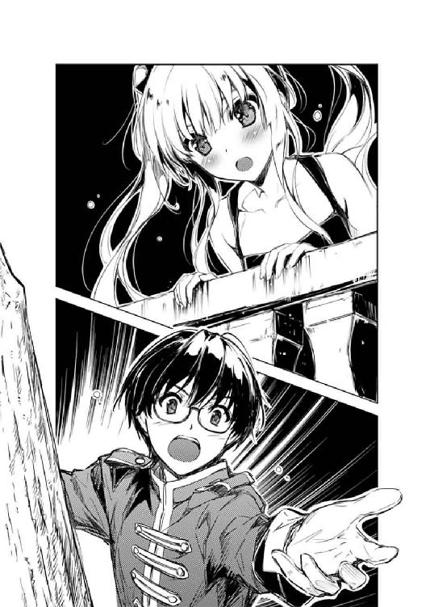

| 冴えない彼女の育てかた3 (富士見ファンタジア文庫) | |
| 丸戸 史明 | |
| (2013) | |

冴えない彼女の育てかた３
丸戸史明

富士見ファンタジア文庫
本作品の全部または一部を無断で複製、転載、配信、送信したり、ホームページ上に転載することを禁止します。また、本作品の内容を無断で改変、改ざん等を行うことも禁止します。
本作品購入時にご承諾いただいた規約により、有償・無償にかかわらず本作品を第三者に譲渡することはできません。
本作品を示すサムネイルなどのイメージ画像は、再ダウンロード時に予告なく変更される場合があります。
本作品は縦書きでレイアウトされています。
また、ご覧になるリーディングシステムにより、表示の差が認められることがあります。
口絵・イラスト 深崎暮人
プロローグ
放課後の視聴覚室に差し込む明るめの夕陽が、くそ熱い熱風を運んでくる七月中旬......
「異議あり！」
......なんだけど、そんな暑い最中にもかかわらず熱い口調とともに『あの腕の角度』を完全再現したポーズで教室の反対側を指差す女の子。
「霞ヶ丘詩羽......じゃなくて弁護人の言っていることは希望的観測に過ぎないわ」
いつもながら、夕陽に反射する金髪が精密な細工物のように柔らかく漂うさまは、これがこいつじゃなければなぁと思わせるほどに華麗だ。
「そう？ 私には検事さんの言いようの方が暴論に聞こえるのだけど？」
で、その金髪の少女が指差す先、窓際で静かに腕を組んでいた女性の目がすぅっと開き、コツ、コツと音を立て教室の真ん中へと歩み出る。
......校舎内では上履き着用のはずなのにどうして乾いた靴音が鳴るのかとか、そういう細かいことに突っ込んじゃいけない。
「元のキャラクターが弱いという共通の認識があった以上、それを補強するための対策を打つことになんの問題があるのかしら？」
いつもながら、夕陽を深く吸い込み漆黒を保ったままの長い黒髪がさらさらと流れ、だから俺このひとに弱いんだよなぁと思わせるほどに美麗だ。
「キャラクター性なんてものはそんなに簡単に軌道修正できないのよ！」
と、金髪の少女も、黒髪の女性に呼応するように教室の真ん中に歩み出る。
「だからこそ色々と試行錯誤が必要なのではないかしら？」
両者は至近距離で激しく睨み合い、その間に火花が散ったような錯覚を起こさせる。
「そんなの必要ない！ だいたい、今までのショートボブだって決して悪くなかった！」
そして結局、最初に弾けるのは、というか簡単にキれるのはいつも金髪の少女の方で。
「だからその方向でキャラデザも固まってきてたのに......どうして今になって急に髪型変えるのよ加藤さん!?」
で、キれたついでに、怒りの方向をいきなり九○度変える。
その矛先の変化を見て、裁判長席......に見立てた教卓に座ったまま黙り込んでいた俺は、自分の正面でぼけっと突っ立っている、今糾弾されたばかりの三人目の女の子へと厳かに声を掛ける。
「被告人、何か言いたいことはありますか？」
「何かって......いきなり何も知らされずに放課後に証言台って書かれた机の前に立たされて、目の前で勝手に裁判ごっこ始められたわたしに発言権あったんだ......」
いつもながら、夕陽の光を適度に反射し適度に吸い込み、なかなかに形容しがたい感情を抱かせるショートボブ......ではなく。
「裁判長、このコまだ自分が何をしでかしたか自覚がないみたいよ？」
「困りましたねぇ......これでは裁判になりません。被告人は自らの立場をちゃんとわきまえるように」
「どうでもいいけど、なんか今日はわたし以上にキャラが立ってないよ安芸くん？」
「被告人はメタな発言は控えろよぅ！」
と、その瞬間、技術室から持ち出してきた木槌が俺の手の先で何度も唸りを上げる。
くじ引きで外れたせいで一番目立たない裁判長やらされてるからって、別にやる気まで失ってるわけじゃないんだからね。
さて、さっきも紹介したように、ここは放課後の視聴覚室。
そんな場所で、整然と並べられていた机を全部後ろに寄せ、出来上がった広い空間を仮想法廷と見なして俺たちが裁判に明け暮れているのには訳がある。
......我々が『加藤恵髪型変更事件』と呼んでいる忌まわしい出来事によるものだ。
では、この事件を再現フィルムでお送りします。
『あ、おはよ安芸くん』
『よう加藤おおおおおぉぉぉぉぇぇぇぇぇ～!?』
そんな感じで、週明けの今日になっていきなりショートボブからショートポニーへと適当な変身を遂げたのは、主体性と個性がない我がクラスメイト。
普通のめぐたんこと被告人・加藤恵。
普段は俺のゲーム制作サークルのメンバーにして、俺たちが作るはずのギャルゲーのメインヒロインを担当するはずの女の子だ。
ちなみに『メインヒロイン担当』がどういう内容を指すのかについては未だに明確な結論は出ていない......
続いて、教室の廊下側で金髪と金切り声を振り乱しているのは、余裕と我慢がない我が幼なじみ。
鬼のえりりん（ほら角が二本生えてるし）こと澤村・スペンサー・英梨々検事。
普段は俺のゲーム制作サークルのメンバーにして、キャラクターデザインと原画と背景とＣＧと、その他グラフィック関連全てを担当するはずの女の子だ。
ちなみにキャラデザと原画以外の担当パートに関しては、どうせ揉めることがわかっているので未だ本人に申し伝えていない。
最後に、窓際で黒髪と腹黒さを見せつけているのは、社交性と容赦がない我が先輩。
仏のウタさん（ただし優しい顔してくれるのはまず相手を地獄に突き落としてから）こと霞ヶ丘詩羽弁護士。
普段は俺のゲーム制作サークルのメンバーにして、シナリオを担当するはずの女性だ。
ちなみに他のパートも頼もうと思えば頼めるのだが、引き受けてくれた際の見返りが怖すぎるので未だに申し出ることができない。
三人と俺は、この春にサークル（未だ名称未定）を結成し、俺の思い描くさいきょうの......いや最強のギャルゲーを制作すべく活動を開始した。
そして今月の初めにとうとうストーリープロットが完成し、引き続きシナリオ作成とキャラクターデザインを進めている今になって、この『メインヒロインの髪型変更』、つまり『デザイン変更』という今回の不測の事態が訪れた訳だ。
加藤をモデルにしてデザインを起こしていた英梨々はブチ切れ、そして英梨々が怒れば天命とばかりに詩羽先輩がそれを煽り、最後に板挟みになった俺が調停のためにこの場を用意した。
......もちろんそこにオタク的ロールプレイへの興味や欲求がなかったといえば嘘になる。
というかオタクならみんなやってるよね？ 逆○裁○ごっこ。
「あらためて被告人に問います......なぜ急に髪型変えてきたの？」
「え？ あ、うん、え～と......なんとなく、かな？」
「なんとなくぅ!? 加藤さん、あなた、ただのその場の思いつきで、あたしの作業量をしれっと倍以上に膨らまそうとしてるの？」
「あ、それはその、ごめんなさ......」
と、被告人が検事の剣幕に押され、あっさり自分の罪を認めそうになった瞬間......
「よかれと思ってやったことなのよね？」
「え？ あの......」
絶妙のタイミングで、弁護士が助け船という名の火種をくべる。
「キャラクターデザインは記号があった方がやりやすい......つまり澤村さんの役に立てる。そう考えたあなたは、あえて特徴が出やすいポニーテールへと変えた。そうでしょう？」
「う～ん、別にそこまでは」
「............そうでしょう？」
「あ、えっと......そうかも」
「異議あり！ 誘導尋問よ」
と、加藤が仏......ならぬ落としのウタさんの手練手管に巻き取られそうになった瞬間、またしても鬼のえりりんの腕の角度が冴えわたる。
にしても加藤の主体性のなさよ......こいつ、もし冤罪だったとしても『あなたが罪を認めれば丸く収まるのよ』とか言われればあっさり『じゃあわたしが悪いってことで』とか言いそうだな。
「ちょっと！ 余計な口出ししないでよ霞ヶ丘詩羽！」
「そうは言っても私は彼女の弁護人なのだから口を挟むのは当然でしょう？」
「そんなこと言ってるけど、単に面白いから煽ってるだけでしょ？」
「いいえ違うわ。私は加藤さんを何としてでも救ってあげたいの。そう、たとえどんな手を使ってでもね......」
と、不敵な笑みを見せると、詩羽先輩は教室の中央に一歩、二歩と歩み寄り、本職の弁護士さながらに朗々と被告人の無実を訴える。
「裁判長！ 被告人は常々周囲から『キャラが立っていない』『存在感が希薄』『あ、いたんだ』などと謂れなき誹謗中傷を繰り返され、精神的に追い詰められていました。このことから、犯行当時は心神喪失の状態にあったとして弁護側は無罪を主張......」
「え～と、別にわたし、そこまで言われる筋合いもないんじゃないかと......」
......やっぱり英梨々の言う通り、単に面白いから煽ってるだけだこのひと。
それも誰彼構わず。
「でも検事さん、途中で髪型を変えるヒロインって、それだけでもシナリオに色々と連動できて、キャラクター性を高めるのには役立つと思うんだけど？」
「それは神岸あ○りが一○数年も前に通過した道よ！ 今さら柳の下にドジョウなんかいないわ」
ああ......そういえば昔、検事と一緒にやったなぁ『Ｔ○ Ｈｅａ○ｔ』。マ○チシナリオの時なんかお互いの顔が見れないくらい二人ともボロ泣きしてたっけ。
「それでも、普通すぎるヒロインであれば、そのドジョウを追い求めるしかキャラを立たせる術はないわ。もともと金髪ツインテールで立ちまくっている検事さんにはわからないでしょうけど」
「じゃああんたにはわかるの？ 黒髪ロングが立ってないとでも言うつもり!?」
いや、普通すぎるヒロインとか言われてるけど加藤だって十分に可愛いんだよ？
ただ、普通に可愛くてお洒落で素直という、三次元なら女の子の魅力として十分過ぎるほどの美点は、俺たちが追い求めるギャルゲー世界線では通用しないってだけで。
本当に、なんでこの世界線にやってきた加藤......って、一○○パーセント俺が引きずり込んだんだけど。
「だいたい、ヒロインの造型は長期的なスパンで考えるべきなのよ。途中で髪型変えたり、作中で歳を取ったり、整形して顔変えたりしたらややこしくてキャラクターグッズ展開に支障が出るでしょ！」
まぁ確かに、作中で五年も経過するなんて言語道断だよなぁ。
「そんなことないわ検事さん。超人気タイトルともなれば、それらのキャラの違いはバージョン違いとして何度も商品化しておいしい思いができる。結局のところ、そのコンテンツ、もしくはキャラクターの魅力に帰結するのよ」
俺の部屋の棚に飾られている黒セ○バーの目がキラリと光ったイメージが頭に浮かんだが気にしないことにした。
「それはそうとさ......」
ここで、いつものごとく、空気のように黙っていた加藤がおもむろに口を開く。
「こうしてみると、澤村さんと霞ヶ丘先輩って、なんだかんだ言って完全に安芸くんと同じレベルのディープなオタクだよね」
と思ったらフラットなままで結構キツい!?
「えっ？」
「な......」
思わぬ被告人の反撃に、検察側も弁護側も一瞬、毒気を抜かれたように証人台に立つショートポニーの女の子をまじまじと見つめる。
「だいたい、これって『なんとか裁判』ってゲームの真似だよね？ それをノリノリでやってる時点でもう......」
「被告人は発言を自重してください！ 度が過ぎると退廷を命じますよ!?」
と、俺はまた木槌を叩きつけ、誰が喋ってるかわかりにくい言葉で加藤の反撃を遮る。
その行動には、加藤の予想外の行動に対する戸惑いとともに、あの名作を『なんとか裁判』などというお母ちゃん級のぞんざいな呼び方で呼ばれた怒りも含まれていた。
というか『○転○判』の正式名称を言えないって逆にキャラ立ってるよなぁ。
「Ｏｂｊｅｃｔｉｏｎ！ その発言、撤回いただけないかしら加藤さん？」
「せ、先輩......」
と、俺たち三人の思いを代弁するかのように弁護士さんが立ち上がった。
「私は小学校に上がる前、Ｎ○Ｋで『ア○ーｍｙラブ』を見て以来の法廷マニアなんだから、そこのにわか二人と一緒にして欲しくないわね」
「梯子を外したっ!?」
と思ったら自分以外の二人をあっさりと切り捨てていた......まぁ、非常に詩羽先輩らしい対応とも言える。
にしても詩羽先輩、あの海外ドラマのファンだったのか。
確かあれ、一○年以上前に流行った、やたらと惚れっぽい女性弁護士がいっつも恋愛関係でドタバタしてるラブコメドラマだったよな。
そうか、だから......
「そう、あのドラマのファンだったのね霞ヶ丘詩羽......あんたが身も心もビッチビチに育った理由が今わかったわ」
だから先輩の恋愛観はあんなややこしいことに......って、いかん、英梨々と同じくらい酷いこと考えてるぞ俺。
「あら、そういうこと言うんだ澤村さん？」
「な、何よ、文句ある？」
弁護人の目がすぅっと細められ検事を射貫く。
しかし検事の方は、ひるんだもののその視線を正面から受け止め睨み返す。
英梨々もさすがだな......もし今の視線が俺の方を向いていたら、無条件で土下座して許しを請うていたに違いない。
「いえね、最近の検事さんは弁護人の人格攻撃までするんだなぁって」
「事実じゃない。ちょっと拗ねたふりしてわざわざ遠くの街まで男に追いかけさせるとか、それがビッチの行動でなくてなんだって言うのよ？」
「あ、いや、それは......」
英梨々が問題にしているのは、どうやら先々週の出来事らしかった。
詩羽先輩が書き上げたゲームのプロットに俺が満足できず、何度も改稿と打ち合わせを繰り返し、最終的には電車で一時間もかかる和合市のホテルで徹夜してようやく完成させたあの日々の......
「しかもそれ以来、急に機嫌が良くなってホイホイシナリオ書き進めてるみたいだし、あの日、二人の間に一体何があったのやら......」
「ではその質問にお応えして......裁判長、次の証拠品を提出します」
と、霞ヶ丘弁護士はポケットからスマホを取り出して何やら操作を始め......
「やめてぇぇぇ～！！！」
その瞬間、俺の手にあった木槌が大音響とともに根本からぽっきりと折れた。
「......その証拠品、検察側としても興味あるわね」
「ないから！ 興味とか持つ必要ないから！」
というかそれ、この事件に全然関係ないよね!?
「............」
と、その瞬間俺を見る視線は、検事だけでなく、被告人の方もなんだかいつもと少し違ってる気がした。
「で、結局どうすんだよこれ......このままじゃ判決出せないぞ？」
そして一時間後......
結局、素人のロールプレイは簡単に破綻して、その後はグダグダと裁判とも言えない適当なやり取りが続き、時間だけが無駄に過ぎていった。
真夏の、足の長い夕陽もそろそろ傾いてきた。時計を見るともう六時だ。
「ま、今日の活動はこんなところかしらね......明日からデザイン変更に入らないと」
検事もなんだか飽きた......いや、疲れた表情で机に腰掛けた。
「私も序盤のテキスト少しだけ変更しないと。まぁ、こっちはほんの数行だから全然問題ないんだけど」
そして弁護側も、もう話は終わったとばかりに鞄を手に取る。
「そっか......それじゃ、今日のところはお疲れさま......」
と、その双方の反応を受けて、裁判長が閉廷を宣言しようとしたその瞬間......
「判決なんて、裁判長の主観で出しちゃえばいいんじゃないかなぁ？」
「加藤......？」
誰もが思いもよらない方向......証言台から、誰もが思いもよらない言葉がかけられた。
「裁判ってそういうものだよね？ 結局、最後は裁判長が決めるんだよね？」
「それはそうだけど......加藤さん？」
「あなた、一体何が言いたいのかしら？」
裁かれる立場の人間が、自らの量刑を決めて欲しいと言い出す異例の展開に、検察側、弁護側双方の人間も怪訝な表情で証言台に立つ被告人を見つめる。
その視線を受け止める被告人の方は、いつも通りフラットな表情で、淡々と言葉を紡ぐ。
けど、その内容の方は......
「えっと、つまり、この髪型が無罪か有罪かって、要は似合ってるか似合ってないかってことだよね？」
「えっ」
「えっ」
「えっ」
その『えっ』には、三者二様のリアクションが含まれていたような気がしたり。
「............」
そして肝心の加藤は、その言葉を言ったきり、何故かじっと俺の方をフラットな表情のままで見つめてくる。
「な、加藤、何を言って......」
ええと、つまり加藤の言っていることを要約すると......？
判決は最終的には裁判長の主観である
今回の裁判の争点は、今の髪型が似合っているか否かに帰結する
つまり裁判長が、被告の今の髪型について判断すれば済む話である
『この髪型、似合ってるかなぁ、安芸くん？』（今ここ）
「なるほど、それは一理あるわ......というわけで検察は被告人の提案に同意します」
「弁護側も異論ありません」
「待ておまいら!?」
厳然たる議論を重ねた末での裁判長の判決のはずが、いつの間にかプロデューサー兼ディレクターの私情入りまくりの意向にすげ替えられていた。
「............」
「か、加藤......？」
なんだこのフラットな攻撃は......？
野球に喩えれば、スクエアスタンスで構え、レベルスイングで振り、来た球に逆らわずセンター返しを狙うような......って、いいバッターだなぁおい！
「............」
「............」
「いや、だからあんたらもあっさり裏切るなよ」
いつの間にか、フラットかつ鋭い視線が三方向から向けられている。
だが待って欲しい。三人ともオタクを舐めるなと言いたい。
女の子が髪型を変えてきたからって、そのことに関する感想を当の本人に告げるとか、そんなリア充みたいな真似ができるか！
......いや、矜持じゃなくて勇気という意味で。
「............」
「ちょっとぉ、判決まだ？ 裁判長」
「これ以上長引かせるようなら自白の強要もやむなしね」
「すいません審理無効を請求します!?」
第一章 春、それは出逢いの季節（注：今は夏です）
七月も下旬に差し掛かった、今日は終業式。
ちょっとした式典と、申し訳程度のホームルームも終わり、ほとんどの生徒たちが一斉に帰宅の途につくお昼時。
「さよなら、澤村さん」
「ごきげんよう石巻さん、また九月に笑顔で会えるのを楽しみにしてるわね」
「あ、あの、英梨々先輩！ さようなら」
「これから先輩と一月も会えないなんて寂しくなっちゃいます......」
「まぁ、小谷さんったら。私、お休みの間も水曜は部室にいるからいつでもいらっしゃい。もちろん三澤さんもね？」
「は、はいっ、ありがとうございます！」
「失礼しますっ」
校庭から校門に向かう人波の中でも、ひときわ優雅に、ひときわ華やかに、ひときわキンキラキンに振る舞う一団が......いやキンキラキンなのはたった一人の、しかも髪の毛のことだったりするけど。
まぁ、それはともかく、そんな『澤村・スペンサー・英梨々とその取り巻きたち』は、俺の一○メートルほど前で第一集団を形成し、なんかすっごい表層的な会話に花を咲かせていた。
にしても英梨々のやつ、『ごきげんよう』はねえだろエロ同人作家のくせに。
いやオタクだからこそ、それらの属性的言動を自らの中に取り入れることに躊躇がないということか。
まさか他の奴らも、英梨々のあの口調が本物のお嬢様の習性ではなく、オタク女子のネタ的演技から作られているモノとは気づくまい。何しろ擬装だけは完璧だし。
「だからさ！ 一作品に一キャラは必要なわけよ！ 年下ヒロイン！」
「そ、そういうものなんだ」
で、その第一集団から一○メートルほど遅れて歩く第二集団、俺と加藤。
「さらに言えば、そんなギャルゲーにおいて必須とも言える年下ヒロインの中にもまた二つの方向性があってだな......」
「じゃね、バイバイ、恵」
「あ、バイバイよっちゃん......ごめん、続けていいよ安芸くん」
「でさ、年下ヒロインの方向性ってのは、大まかに言うと生意気系と懐き系に分かれるんだけど......」
「よう倫也、また二学期な。お前どうせ夏期講習来ないんだろ？」
「当たり前だろ一成。バイトに夏コミにゲーム制作......夏は勝負の季節じゃないか」
「普通の人間はその季節に別の勝負をするんだけど......じゃあな」
「おう、またな！ ......とと、ごめん加藤、今度は俺が話の腰を折った」
基本的には二人だけで会話に花を咲かせつつ、こうして時おりクラスメイトに適当に挨拶され通りすがられ、無視も取り囲まれもしない、非常に標準的で、流動性の高い集団だ。
「いいよ別に。どうせ大した話じゃないし」
「主に俺が振ってる話題に対してその言い草はどうなんだって言いたいが......とにかく、俺は断然懐き系だな！」
どうでもいいが、こうして堂々と男女で並んで歩いてるのに、相変わらず誰も俺と加藤のことを冷やかしたり突っ込んだりしない。というか皆、俺（のゲーム）のメインヒロイン加藤恵を背景扱いしてるような気がするのは何故だろう。
「傾向としてはさ、主人公を全肯定するところがポイントでさ、例えば部活の憧れの先輩とか、大ファンとか、そういう好き好きオーラ出しまくりなところがユーザーの安心感と萌え心と庇護欲をくすぐってだな......」
「ああ、主人公が霞ヶ丘先輩でヒロインが安芸くんみたいな感じ？」
「............その喩えは色々とややこしくなる要素を多分に含んでるから是非やめて」
と、図らずも俺たち二人が同時に後ろを振り向くと、そこではどっかの救世主が海を渡ってるときみたいに周囲の人波がさあっと割れていて、その中央を堂々と闊歩する詩羽先輩たった一人の第三集団。
視線は完全に手に持った文庫本に注がれているという安全意識の欠如した歩き方ではあるけれど、何しろ彼女には畏れ多くて誰も近寄らないから、他人を巻き込んだ事故にはなりようがないところが不幸中の幸いと言えなくもない。
まぁ、そんなふうに、俺たちがまるでマラソンみたいに三つの集団を形成し、互いの距離を測りながら同じペースで移動しているのには訳がある。
何しろさっきから言っているように今日は終業式。明日からはめでたく夏休みだ。
しかしそんな長期の休みは、学校側に正式認可されていないどころか顧問すらいない我が同人ゲーム制作サークルの活動にはいささか問題がある。
まぁ要するに、夏休み期間中は、いつも部室代わりに使っている視聴覚室の使用許可が下りなかった訳だ。
そんなこんなで、今日からしばらく拠点を失った俺たちは、とりあえず臨時の部室を探して放浪の旅に出ることになり......
「加藤だって萌えるだろ？ 自分より年下のコが、後ろをとぼとぼとついてきたり、シャツの袖をぎゅっと握ってきたり、すがるような上目遣いで見上げてきたとしたら！」
「えっと、わたしまだ『萌える』って言葉が一般動詞だっていう前提で話すのに慣れてないんだけど」
せっかくだから、その旅の途中も、時間を惜しんでこうして打ち合わせ。
ここでは青空が黒板だ。
「じゃあもうちょっと具体的な事例に落とし込んでみよう......加藤、今から目を閉じて、俺が話すシチュエーションを想像してみてくれ」
「歩いてる最中なのに？」
「......まぁ、目を開けたままで構わない。その先に校門があるよな？」
「あるね」
「例えば、『校門の柱に背中を預けて自分を出待ちしている後輩のコ』なんていうシチュエーションとかどうだ!?」
「いいかもしんないけど、それって別に後輩でなくてもよくない？」
「わかってない......やっぱりわかってないよ加藤！」
「あ～、うん。まぁ、積極的にわかろうとしてないのは認めるよ」
議題は、まぁ聞いていただければわかるとは思うが、サブヒロインについての検討だ。
「後輩にはな......後輩には、同級生にはないコンプレックスやジレンマがあるんだよ」
「あ、あるんだ」
「相手は年上......自分とは生活する空間も時間も違う。同級生なら、同じ教室で、同じ授業を受けて、同じ時間の進み方を感じられる。けど、自分はそうじゃない」
詩羽先輩......霞詩子渾身の企画書『倫理君の、倫理君による、倫理観に満ち溢れた超健全ギャルゲー企画（仮）』には、叶巡璃と丙瑠璃という、時代を超えたダブルメインヒロインについて背景設定を含め詳細に記述されている。
けど、それ以外のヒロインについては今のところ『別途』というたった一言だけ。
「ただ遅く生まれたというだけで、本来なら一緒にいられて嬉しかったはずの時間を奪われた劣等感！ そんな気持ちに苛まれつつ、目の前の小石を蹴ったりしながらぽつんと寂しそうに待つその姿！」
「そんなに深く考えてるもんなのかなぁ」
「あ！ それとも『今日会えたらどんなこと話そうかな？』なんて想像しつつ、楽しそうな表情を浮かべてるのでも全然いいな！」
「それって結局、後輩ならなんでもいいんじゃ......」
「そうだよ後輩ヒロインならなんでもいいんだよ！」
「あ、言い切った」
なので、シナリオ制作が佳境に入るであろうこの夏休みの序盤のうちに、せめてヒロインキャラだけでも詰めておこうというのが、このゲームのプロデューサーたる俺の使命にして責任だ。
......後輩として、すでに三年である詩羽先輩の受験勉強をまったく考慮していないのはとりあえず置いておくとして。
「そして、その後輩っぽさを端的に表現できる最強のアイテムが......制服だ！」
「あ、学年違いのリボンの色とか？」
「それもいい、それもいいな！ けど、もっと直接的にアピールできる要素がある。制服のデザインそのものの違いだ」
「てことは違う学校？ あ、そもそもまだ中学生とか？」
「ビンゴぉ！」
などと俺の言葉は熱を帯び、今や目の前に迫ってきた校門を再び指し示す。
そこにはもちろん、制服の違う中学生らしい女の子なんかいるわけがないこともなかったが、俺はそんな些細なことなど気にせず話を続ける。
「中学だから先に授業終わって、高校までやってきたところでちょうど先輩の下校時間......他の年上の高校生たちにじろじろ見られる息苦しさを覚えつつ、ただひたすらにお目当ての先輩を待ち続けるその健気さ！」
「......先輩？」
俺の脳内で、こんなふうに『先輩』と呼びかける萌えボイスが自動再生される。
ちょっと控えめで、ちょっとたどたどしく、けれど、ちょっと期待に満ちた微妙なニュアンスが心地いい。
「そしてやっとのことで彼を見つけたら、一瞬だけ泣きそうになって、次の瞬間に満面の笑顔！ その後、ほんのちょっとだけ震える声で呼びかけるんだ......」
「倫也先輩......？」
「そう！ こんなふうに！」
「え......？」
と、その瞬間、加藤が怪訝な表情で、俺の指差す先に視線を移した。
そこにはもちろん、俺の脳内後輩が、俺の脳内だけでこっちを見つめている。
豊ヶ崎とは違う制服に身を包み、背は小さめ、短めのお団子ツインテールが特徴的。
そして、英梨々や加藤を凌駕するどころか、下手すると詩羽先輩にまで迫ろうかというボリュームを持った豊かな......？
「あれ？」
いや、後輩ヒロインをそんなおっぱいキャラに設定した覚えは......
「やっぱり......やっぱり倫也先輩だ！ よかったぁ、やっと見つけたぁ～！」
「......え？」
でも今、目の前で展開される現実は、そんな俺の基本設定をはるかに凌駕していた。
「帰ってきたよ......わたし、先輩のところに帰ってきたんだよ～！」
「え、え......っ」
なにこの俺の体に押し当てられた、柔らかな中にも強い弾力を感じさせる、若さと大きさを兼ね備えたものすごい女の武器は!?
「............」
「............」
「............」
と、そんなふうに抱きあう形になった俺たちに、三方向からまったく同じ性質を持った視線が突き刺さる。
つまり今の俺、三角形の重心。
なので仕方なく、その三方向に対して、まったく同じ性質の視線で応える。
「え～と......誰なんだろうね？ このコ」
※ ※ ※
「うわぁ、なつかしいなこの公園......三年ぶりだぁ！」
帰り道の途中の、小さな公園。
豊ヶ崎からはちょっと離れ、俺の家からはそこそこ近く。
そして、俺がかつて通っていた嶋村中学校のごくごく近所......
「出海ちゃん......？ 本当に、あの波島出海ちゃんなのか？」
「やだ～先輩、今まで誰だと思ってたんですかぁ」
「いや、誰って......」
だから誰なんだよと思ってたんだけど。
「あ、ボールみっけ！」
その、やっと俺の記憶の中で波島出海という名前と繋がった彼女は、公園に転がっていたゴムのサッカーボールを見つけると、嬉々として子犬のように戯れ始めた。
......というわけで、俺たちの目の前では今、三つのボールがゆらゆらと揺れている。
「安芸くんの中学時代の後輩？」
「あ、いや、ほんのちょっと違うけど、まぁそんなようなもの」
そんな加藤の問いかけに、俺はちょっとだけ曖昧な答えしか返せない。
だって彼女、波島出海は確かに後輩だけど、実は同じ中学に通ったことはなかったから。
「あなたは彼女のこと知ってたの澤村さん？」
「知らない」
「倫理君の後輩だったら、あなたの後輩でもあるんじゃないの？」
「知るわけないわよ。小学校違うし、二学年も下だし、何よりあのコ、中学に上がる前に引っ越してしまったから、名古屋に」
「それだけ知ってれば十分すぎる気がするんだけど......」
と、俺と加藤のすぐ後ろのベンチで、偶然（本人談）公園の風景をスケッチしていた英梨々が的確なフォローをしてくださった。
なお、英梨々の隣では、やはり偶然（本人談）公園で読書にいそしむ詩羽先輩が淡々と細かいツッコミを入れてくださっている。
「そりゃ、そこそこ近所に住んでたから一度や二度は見かけたことあるわよ。けど三年以上前だし、今では全然見た目が変わっちゃってるし」
「ああ、あなたが完全に抜き去られた一部サイズの件？」
「それ以上言ったら『恋するメトロノーム』のダブルヒロイン凌辱本出すわよ霞詩子」
「自分の作品の二次創作は作家の夢ですもの。是非ともお願いするわ柏木エリ先生」
......ちなみにこの二人、当然のようにスケッチブックや文庫本に視線を落としたまま、絶対に目を合わせないのが怖すぎる。
「先輩先輩！ 倫也先輩もつきあってよ、ほら！」
「あ、ああ......」
と、そんな後ろの異様な雰囲気にも全然気づかず、出海ちゃんが無邪気にリフティングしていたボールをこっちに蹴ってよこす。
こっちもなんとかボロを出さないようにノーバウンドで蹴り返しながら、まじまじと彼女の揺れ具合......ではなく、キックの際の見え具合......でもなく、全身を改めて見据える。
「にしても出海ちゃん、随分変わったよなぁ」
「え～、そうですかぁ？」
そこに関してだけは、英梨々の言い分に全面的に同意せざるを得ない。
俺も、三年前までよく遊んでいた小学生の女の子と、今こうして目の前にいる中学生の女の子がなかなか結びつかない。
「だって出海ちゃん、昔はショートカットで真っ黒に日焼けしててさ」
それに、どこもかしこもやせ細ってて、まるで......
「確かに、あの頃のわたし、まるで男の子みたいだったかもなぁ」
「そう、それ！」
夏なんかいつもタンクトップ一枚で、首もとや脇から日焼けの境目がちらりと覗いても、全然女の子を意識せずに遊べてた。
俺がもっともっと小さい頃、女の子として意識しまくってた、人形のような色白の彼女とは違うアプローチで仲良くなれた。
そんな、生まれてから二番目にできた女の子の友達。
喩えるなら『サマー○ォーズ』のカ○マみたいな......って、いかん、それだと男の子にガチ萌えしてたみたいな不穏な比喩になってしまう。
「そっか、そんなに変わったように見えます？ わたし」
「もう別人！ ......ってことだから、さっきまで思い出せなかった件は水に流そう！」
そう、もう別人。
今の出海ちゃんは、後ろで縛った髪は長く艶やかで、肌は白くきめ細かく、体全体に丸みを帯びて、けれど別に太ったとかそういうことじゃなく。
まぁ、要するに......
「少しは女の子っぽくなりました？」
「......う、うん」
うん、言いたくないけどそういうこと。
「でも、もしそうだとしたら......」
と、出海ちゃんが、ちょっと高めのパントキックで俺にボールを蹴り返しつつ、今までよりも微妙に甘い息遣いで呟く。
「わたしが女の子になったんだとしたら......それは先輩のせいなんですよ？」
「ぶっ!?」
その衝撃発言に、俺はまさかの空振りで応えるしかなく、ボールは後ろのベンチまで転々と転がっていく。
「先輩が、わたしに女の子の喜びを教えてくれたから......なんですよ？」
「え、ちょ、ま、い......」
「だって倫也先輩、わたしとここで、色々なことして遊んでくれましたよね？」
「出海ちゃん!?」
「あ、安芸くん......？」
げ......加藤がドン引きしてるの初めて見た。
「公園で小学生の女の子と危険な遊戯......倫理君のくせに......倫理君のくせに......」
「あ、あんたみたいな年増が相手にされない理由がこれでわかったわね、霞ヶ丘詩羽」
後ろのベンチの二人も、一時的にいつものツッコミのキレが消えている。
「また会えて嬉しい......わたしは一目でわかりました。だって倫也先輩、ちっとも変わってなかった......」
「そ、そ、そう？」
「三年前からずっとこんな人なんだ安芸くんって......」
けれどすぐにフラットに立て直すところはさすがに加藤だ。
「えっと、三年前の女の今の発言、いかがですか七年前の女さん？」
「......それ以上言ったら作中のキャラじゃなくて霞詩子凌辱本出すわよ」
後ろの二人もさっさとキレを取り戻すところはさすがに長い付き合いの賜物......というか老廃物か。
「だから倫也先輩......これ、受け取ってください！」
「い、出海ちゃん......っ!?」
そして、潤んだ瞳とともに、彼女はポケットから青い封筒を取り出し、俺の目の前に差し出す。
そんな、生まれてこのかた、ゲームの中でしか体験したことのない個別ルート突入直前のイベントに、俺は震える手でその封を開く。
すると中から出てきたのは......
「......サークルチケット？」
「二日目、東ホ04ａ『ファンシーウェーブ』です！ 絶対に来てくださいね！」
青色と銀色に装飾された、オタクにとってのプラチナチケットだった。
※ ※ ※
「『リトルラブ・ラプソディ』......？」
「はい！ わたしの場合、今描いてるのは去年出た『３』の幹也なんですけど、あ、でも、幹也だけが好きって訳じゃなくて、あくまでも主人公の女の子とのカップリングっていうか、二人でいるときの雰囲気が好きっていうか......」
「え、えっと......？」
「......出海ちゃん、加藤は〝今現在は〟ノーマルなんだからそのくらいにしておこうね」
「わざわざ〝今現在〟って付け足されると、この先わたしどう改造されるのか心配だよ」
そして公園の後は、いつものログハウス風の喫茶店。
そこには、とうとう馬脚を......いや、本当の自分を現し始めた出海ちゃんにドン引きする加藤の姿があったとさ。
「ね、ねぇ安芸くん、そのリトルなんちゃらっていうのもギャルゲーなの？」
「いや乙女ゲーなんだけど。ていうか加藤、お前、その何も知らないお母さん的なおざなりな呼び方は、あとあと波紋をだな......」
「なんちゃらじゃありません！ 『リトルラブ・ラプソディ』です！ リトル！ ラブ！ ラプソディー！ 他にも『リトラプ』とか『ＬＬＲ』とか呼ばれてて、シリーズ三作で累計二○○万本を超える人気シリーズなんですから間違えないでください！」
「......訂正。すぐに波紋を呼ぶから気をつけた方がいいぞ」
「う、うん、身に染みたよ、たった今」
そんなわけで、『リトルラブ・ラプソディ』だ。
まぁ、大方のことは今、出海ちゃんが説明した通りだけど、ちょっと補足すると、大手ゲームメーカーのソナーから発売されている作品だ。
一○年くらい前に第一作が発売されて以来、女性向け恋愛シミュレーションゲーム......要するに乙女ゲーの中でも常に人気タイトルに数えられる息の長いシリーズとなっている。
現在続編が３まで出てるけど、新作が出るたびに単なる焼き直しには留まらず、世界設定からキャラクターから全部きっちり見直していて、その手抜きのないキャラクタービジネスの手法は畏敬に値する。
何しろ、あれだけ大ヒットした初代の西洋ファンタジー的世界観とキャラを、２ではあっさり和風ファンタジーに切り替え、さらに３では学園ファンタジーとほぼ一から作り直しておきながら、毎回大ヒットを飛ばすどころか、前作の根強いファンまでフォローを怠らないとか、このシリーズの企画者はタダ者じゃない。
女の子をオタクに堕と......いや、共通の話題作りには格好の作品だ。
「さっきも言ったけど、わたし、先輩と会うまではゲームとかアニメとか全然見てなかったんです。それこそ男の子と外で遊んでばっかりで」
「そうなんだ......それ、子供としては別にちっとも悪いことじゃないような気もしないでもないけど」
「そんな幼くて世間知らずだったわたしに、先輩は新しい世界を見せてくれた......わたしの誕生日に、『リトラプ２』をＰ○Ｐごとプレゼントしてくれたんです」
「それは......確かに今の安芸くんと何も変わってないかも」
携帯ゲーム機は、アウトドア派な相手に対してかなり有効なアプローチだ。
俺の布教活動は、相手も手段も選ばない。
......まぁ、あの時はバイトしてなかったから、お年玉全部つぎ込んだけどな。
「先輩があのとき『リトラプ２』をプレゼントしてくれなかったら、わたしは今、こんなにゲームやアニメ三昧の幸せな人生を送っていなかった......だから先輩には感謝してもしきれないくらいなんです！」
「へぇ、すごいね......その、まるで後悔してなさそうなところが」
ところで、さっきから加藤の出海ちゃんに対する、まるで狂信者を見るような目がなんかヤな感じだなおい。
「さすが倫理君、昔から女の子を腐らせる手練手管は一級品だったのね」
「『リトラプ』......」
「ま、私たちが人のことどうこう言ったってしょうがないんだけどね。なにしろ......」
「............」
「澤村さん？」
「......は？」
「どうしたの？ 逃亡生活の恐怖とストレスの末に一週間で金髪が総白髪になってしまったフランス王妃みたいな顔して」
「ちょっ、相変わらず訳わかんないこと言うのやめてよ霞ヶ丘詩......ぶっ!?」
「あ～あ、そんなに慌てて飲むから......はいハンカチ」
「ちょっ......なによこれ、なんで最初からコーヒーが甘いのよ！」
「まさか『砂糖抜き』頼まなかったの？ いつも通り迂闊ね澤村さん」
「というか今どきそんな喫茶店なんてあるの!?」
なお、俺と加藤のすぐ後ろのテーブルで、偶然（本人たち談）歓談していた二人組は相変わらずだった。
※ ※ ※
「そんなわけで先輩！ 夏コミ、絶対、ぜったい、ぜ～ったい来てくださいねっ！」
行き交う人でごった返す夕方の駅のホーム。
そんな衆人環視の中、出海ちゃんは相変わらず元気いっぱいに、わざわざ三度パターンを変えて〝絶対〟を連呼した。
うん、元気系ヒロインのキャラ付けとしては合格点をあげてもいい。
「ああ、絶対行くから！ 出海ちゃんの新刊楽しみにしてる」
まぁ最初から三日間全日参戦予定だったけど、そんな興を削ぐことを言う必要もないし。
「......今のところ、それが一番の問題ですけどね、あはは」
と、出海ちゃんは、一度同人を経験した者であれば誰もが理解してしまう微妙な笑顔を浮かべると、そろそろ発車ベルの鳴り響く電車に飛び乗った。
「そういえば先輩、お兄ちゃんにはもう会いました？」
「え......伊織も帰ってきてるの？」
と、別れ際に彼女が口にしたその名前は、少しだけ俺の喉に小骨のように引っかかる。
「決まってるじゃないですか。家族みんなで帰ってきたんだから」
「そうか......」
そっか、こっちにいるんだ、伊織も。
あいつなら一人でも余裕で生活していけそうなんだけどな。
......けど、ま、名古屋と東京じゃ、あいつ的にこっちを選ぶのは当然か。
「あ、先輩、そのうち新しい家にも遊びに来て下さいね！ お兄ちゃんも喜ぶし！」
「あ、ああ......」
と、とうとう発車ベルが鳴り止み、名残惜しそうに出海ちゃんが話を打ち切る。
「それじゃ、倫也先輩......また会えて本当に嬉しかった！」
「出海ちゃん......」
元気いっぱいな笑顔から苦笑気味の微妙な笑顔へ、そして今度は、ちょっと泣きそうな、けれど心から嬉しそうな笑顔。
そして、そんな笑顔のままの彼女を電車のドアが遮り、ゆっくりと俺たちの距離を開いていく。
それでも、ずっと、ずっと......多分、俺が視界から消えてもしばらくの間、彼女は一生懸命笑顔を作ったまま、その手を一生懸命振り続けているんだと思う。
その、ころころと変わる表情の豊かさは、出逢った頃の男勝りな小学生だった頃と何も変わっていなかったけれど、一つ一つの表情を取ってみると、三年前とは違う〝女のコ〟が少し滲み出てきているのが、嬉しいような、寂しいような、こそばゆいような......
「良かったわね倫理君......懐き系後輩ヒロインゲットだぜ」
「う......」
と、わざとらしいまでの寒々しい声とともに、俺の肩にぽんと手を置いて甘く冷たい吐息を吹きかけたのは毒舌系先輩ヒロイン......じゃなくて詩羽先輩。
「中学生、制服違い、校門の前で一人ぽつんと佇んで倫理君を待っているその健気さ......本当、子犬ヒロインの真髄を見せてもらった気がするわ」
「そ、そう？」
「これで語尾に『であります』とか付けてたら完璧だったのにね」
「な、何言ってんだよウタ姉!?」
「誰よそれ」
と、詩羽先輩は、俺の言い慣れない呼びかけを拒絶するかのように、俺の額を軽く指で弾いた。
よかった、アイアンクローじゃなくて。
「ま、とにかく、これで新キャラの設定もできたし筆も進みそう......まぁ、あくまでも物語上はサブヒロインだから、サブ扱いにしかしないけど......それじゃあね」
と、謎のオーラをまとわせつつ、詩羽先輩は軽く手を振ると背中を向け、電車を待つことなくホームの階段を上っていった。
......というかあのひと路線が違うのに、なんでわざわざこっちのホームまで来たんだ？
※ ※ ※
ホームだけでなく、夕方の電車内も、ラッシュ時とは比較にならないものの、かなりごった返していた。
「あのコ......出海ちゃんだっけ？」
「うん？」
出海ちゃんと反対方向の電車に乗って一駅過ぎた頃、さっきまでいつものように存在を希薄にさせていた加藤が、ようやくぽつりと口を開く。
「まるで安芸くんみたいだったね」
「......褒めてるのか貶してるのか、それと対象が俺か出海ちゃんかによって四パターンの解釈ができると思うんだけどどれよ？」
「ああ、違うよ、褒めてるのでも貶してるのでもなくて、単なる感想」
「そんな小学生並みの言い訳でお茶を濁そうとするな」
「えっと、そうだなぁ......例えば、好きなものを語るときの暑苦しさっていうか、好きなものに関してのちょっとした誤解や無理解を絶対に許さない心の狭さとか、それと、それと......あ、そうだ、そんな好きなものについて、最終的にはちゃんと相手に興味を持たせてしまう、その熱い語り口とか」
「......最後のフォローだけえらく長考してたなおい」
その言葉に、なるべく加藤のままフラットであろうとした努力の跡は見えるものの、やっぱりディスってるだろお前。
しかし、そうか......もし出海ちゃんの名前に『倫』の字なんかが使われていたら詩羽先輩あたりに『小倫理』などと呼ばれていたんだろうか。
「でも、これだけはわかるな......あのコ、三年前まではずっと安芸くんと長くて濃い時間を共有してたんだなって」
「そりゃ、まぁ......」
そこに関しては、加藤の推察を否定することはできそうにない。
あのコが家庭の事情でこちらを去るまでの一年半......
同じ作品を愛する同志として、オタクな知識や精神を叩き込んだ愛弟子として、自分の見込んだ後継者として、波島出海という年下の少女を見守ってきた。
......ここで〝少女〟とか言っちゃうと自分も相手も条例的に厄介なことになりかねないので〝友達〟と表現した方が無難だし、その頃の認識も近かったけどな。
まぁ、それはともかく、一度、同じような同志を持つことに失敗した俺にとって、彼女は新しき希望というか第四部スタートというか、そんなオビ○ンな気持ちにさせてくれる、大切な存在だったことは間違いなくて......
「なぁ、加藤......ってあれぇ!?」
と、俺が長考の末に自分の思いを伝えようとしたときには、加藤はすでに電車のドアで分かたれたホーム上をとっとと歩いていた。
自分の駅に着いたなら一言『じゃあね』くらいあってもいいだろう......
こういうシーンをゲームで作るときは、ＳＥでドアの閉じる音や発車ベルを鳴らして状況をユーザーに知らせなくちゃならないな、うん。
※ ※ ※
電車を降りて、てくてく歩く帰り道。
駅からずっと大通り沿いを進み、五分ほど行ったところでせり上がった坂を右に上る。
つまりそこからが、家にたどり着くまでの一番の難所、おなじみの探偵坂という訳だ。
「............」
「............」
明日から夏休みという七月下旬。
夕方とはいえ陽はまだ結構高く、急勾配でしかも長いこの坂を上りきる頃には、きっと汗が噴き出しているだろう。
「............」
「............」
けれど、そんな暑さに負けてる場合じゃない。
だって、さっきも言ったとおり、明日から夏休みだ。
やりたいこと、やるべきこと、やらなくちゃならないことなんか山のようにある。
一秒たりとも無駄になんかしていられない。
だから俺は、坂を上る足にさらに力を込めて加速して......
「ちょっとぉ！ なに置いてこうとしてんのよ倫也！ そうやって他人に気を使えないからオタクの社会的地位がいつまで経っても向上しないんでしょうがこの身勝手男！」
「その相手に対する敬意のない高圧的な態度がオタクの社会的地位を低下させるとは考えんのかこの高飛車女......」
その直後、さっきから黙って自転車をひいこら引いていた英梨々がとうとう音を上げた。
というわけで、引き続き探偵坂の途中。
英梨々の自転車を仕方なく引き受け、あくせく引いていく俺。
これが嫌で俺は駅まで歩いてるんだけど、英梨々は朝の『女の子のための五分』を稼ぐために、帰りの苦労を差し出してまで、駅まで自転車を使っている。
「ていうか、さっきから俺シカトされてるかと思ってたんだけど」
「してたわよ」
「お前、それ......」
さっきから、ダース○イダー......ではなく澤村・ス○イウォーカー・英梨々（一七のあだ名のうちの一つ......でもない）の言葉はいつになく黒い。ＢＧＭに帝○のテーマを使いたくなるレベル。
まぁ、それはともかく、喫茶店を出てから今までの三○分、こいつは何故か、いつもは不得意なステルス性能を必死で発揮しつつ、黙ったまま俺の周りをつかず離れずついてきていたのは確かで。
「何を怒ってる？」
「別に」
「三年ぶりに友達がこっちに帰ってきたんだ。話が弾んで当然だろ」
「だから怒ってないし。あんた自意識過剰。勘違いも甚だしい」
「そうか、ならいいんだけど」
「そうやって自分に都合のいい解釈して勝手に安心する態度も最低」
「どっちなんだよ!?」
なんだこいつ、いつにもましてめんどくさいぞ？
と、さっきまで意図的に見ていなかった英梨々の顔に目を向けると、そこにはまぁ、やっぱりいつも通りの、いや、それ以上の、テンプレを煮詰めたような不機嫌な表情が思いっきり浮かんでいた。
ほんっと、態度だけはわかりやすいな、こいつ。
その原因を突きとめていく過程はなかなかに厄介なくせに。昔からずっと。
「『リトラプ』って、あんた......」
「......名作だろ？」
「だって、あれは......っ」
「『リトルラブ・ラプソディ』は株式会社ソナーの登録商標だ。それ以上でもそれ以下でもないよな？」
「っ、倫也！」
と、英梨々がいつも以上に不機嫌な顔から、いつも以上に怒り心頭な表情に変わりかけたその瞬間......
「久しぶりだね、二人とも」
男にしては微妙に高めで、けれど透き通った声が、坂の上から届いた。
第二章 嵐を呼ぶ再会（注：今は快晴です）
「久しぶりだね、二人とも」
男にしては微妙に高めで、けれど透き通った声が、坂の上から届いた。
「いや俺なんか間違ったこと言ってる？」
「わかってるくせに......あんたあたしの言いたいこと、わかってるくせに！」
「別に、そんなことで英梨々にとやかく言われる筋合いはないと思うけど？」
「いつまで根に持ってるのよ！ 男のくせに細かいことばっかこだわって！」
「細かいことにこだわってこそ真のオタクだろ。そっちこそ何言ってんだよ」
「だったら！ どうして今になってあたしに......っ」
「......こっちが穏やかに話しかけてるのに無視するのはオタクであろうと一般人であろうとマナー違反だと思うんだがどうかな？」
で、男にしては微妙に高めで、けれど透き通った声は、いつの間にか坂の下から聞こえてくるようになっていた。
「悪い、今立て込んでるから後にしてくれ、伊織」
......このまま黙って通過させてくれればお互い嫌な気分にならずに済んだものを。
「三年ぶりの再会だってのに、ずいぶんと冷たいじゃないか倫也君」
「だからその鼻に抜けるようなクン付けはやめろと何度も言っただろ」
仕方なく立ち止まり、坂の下に佇む相手に向かって嫌々ながら振り向く。
英梨々の方はというと、立ち止まりはしたものの、振り向くことも、不機嫌そうな態度を改めることもせず、完全に相手にしない態勢だった。
三年ぶりに再会する同級生相手につれないな......自分のことは思いっきりさておき。
「改めて......久しぶりだね、二人とも」
「別に重要なことでもないのにわざわざ二度言うなよ」
その、出海ちゃんに『お兄ちゃん』と呼ばれる羨ましき男、波島伊織は唇の端をつり上げて、多分、自分では邪気がないと思っている笑みを浮かべた。
三年前と変わらない、毎月の美容院通いが欠かせないフワフワパーマに茶髪。
......って、よく考えたらこれで中学通ってたんだから凄いよな。こいつもだけどウチの中学の自由さも。
ほんと、こんなチャラい兄貴の下にいながら、出海ちゃんの方はよくもまっすぐで素直なオタクに育ってくれたもんだ。
「で、何しに来たんだよ？」
「今月から父の仕事の都合で東京に戻ってくることになったからちょっと挨拶にね」
「別にわざわざ帰ってこなくても。美味いって評判の名古屋飯をずっと堪能してれば良かったのに」
「別にそんなに美味しくはないさ。味噌煮込みは麺が固いし、きしめんは逆に麺が平たいせいで歯ごたえを楽しめず、味噌カツはタレにこだわるだけで肉はごくごく普通、ひつまぶしも同様でウナギ自体を楽しむには力不足、天むすはただエビ天とおにぎりを合わせただけでそこに新しい発見は皆無、台湾ラーメンに至ってはもはやその名前からして名古屋のご当地性を垣間見ることは不可能......あえて評価するとすれば、ジャンクフードとしての手羽先唐揚げとスガ○ヤラーメンくらい、いやス○キヤであれば袋麺の味噌煮込みも辛うじて評価できるかな？」
「いや実はめっちゃ堪能してただろお前！」
批判してるはずなのにものすごく食いたくなってきたぞ。
隣で英梨々の、ごくりと喉を鳴らす音も聞こえてきたし。
「何より致命的なのは、名古屋には関東のような大型即売会が存在しないこと......僕の真の能力を発揮できない地方に封じ込められた三年間は、苦痛の時間でしかなかったよ」
「伊織......」
そう、俺がこいつと気が合わないのは、住む世界が違うからじゃない。
いくらチャラくてイケメンでリア充で、会うたびに隣に連れている女の子が違っていたとしても......ああもうなんだよコイツふざけやがってむかつくなぁ！
......なんて嫉妬はするけど、シカトするほど嫌いになったりしない。嫉妬するけど！
「いや、まぁ、秋葉では発売日に瞬殺される本やゲームが大須とかでは余裕で手に入るところは気に入ってたけどね。結構転売で稼がせてもらったし」
「......やっぱ堪能してただろそうなんだろ」
俺がこいつと合わないのは......住む世界がことごとく一緒なくせに、そこでの生き方がまったく違うからだ。
人間って、本当に憎いのは海外の凶悪犯よりも、空気を読まない隣人の方だろ？
「そんなわけで、とうとう満を持しての凱旋......久々の夏コミさ」
「......お前もサークル参加すんのかよ」
「もちろん......あの真夏の熱い三日間で、今度はどれだけの名刺とメアドと本とグッズと金を手に入れることができるか。今からワクワクが止まらないね」
「やっぱり、まだそんなこと続けてんのかよ伊織」
「やめる理由がどこにあるんだい？」
「何度も言わせるな......俺はお前のそういうところが気に入らないんだよ！」
そう、こいつの能力は、イベントが大きければ大きいほど、そこに集う作家が大物であればあるほど発揮される。
波島伊織......その本質は、華麗な外見とはかけ離れた、俺を凌駕する超オタク。
そして、俺とは対極に位置する......ゴロだ。
知り合ったのは、中学一年の春。
同じ教室で顔を合わせた初めての日、自分と同じ匂いを感じ取った俺たちは、その日の帰り道にほんの数十分話しただけで親友の誓いを交わした。
伊織は、中一にして今の俺でも比較にならないくらい筋金入りのエリートオタクだった。
知識の深さも、守備範囲の広さも、アイテムの所持数も、そこらの中学生どころか下手な大人でも及びもつかないほどで、とにかく凄い奴としか言いようがなかった。
そしてその年の夏、一緒に行くことになった初めてのコミケで、俺は伊織の凄さをますます目の当たりにすることになったんだ。
こいつは大物同人作家はもちろんのこと、商業でも有名な漫画家、アニメーター、果ては監督とか社長とかの肩書きの大物にまで大量に知り合いがいて、しかも初対面の大物にすら親しく話しかけては気に入られてしまうという特殊対人スキルを持っていた。
イベントでは、大人たちの誰もがその存在を知っている、同人界隈のスーパー小学生（がやっと中学生になった）として有名な存在だったんだ......
俺は、伊織のそんな大物ぶりと、中学で出来た初めてのオタク仲間という存在にますます傾倒し......
そして、一年が過ぎた頃、その本質に気づき距離を置くようになった。
「倫也君こそ、まだそんな青いことを言ってるんだね......残念だな、僕は君のことを今でも買ってるのに」
「そうかよ」
それは多分、嘘でも罠でもお世辞でもない。
伊織は、自分にとってメリットのない相手にわざわざ会いに来るほど暇な奴じゃない。
そりゃもう、使える人間と使えない人間を気持ちいいほど差別する。
中学の頃、それに気づかなかったのは、俺がこいつに選ばれた側の人間だったからだ。
「僕の交渉と人脈と政治に、君の発想と情熱と行動が加われば、いずれは同人界を牛耳ることも可能だと思ってるんだけどなぁ」
「いや牛耳りたいなら準備会に入れよお前......」
そう、これが伊織の本質だ。
こいつが同人活動をやっているのは、好きな作品を楽しんだり広めたりする為じゃない。
ただ、人気のある作品を使って、自分の地位を向上させたいだけ。
そこに、作品に対しての愛が存在しないとは言わないまでも、金儲けや人集めの手段として使うことにまるで躊躇がない。
「俺たちユーザーは作品だけを愛してればいいだろ？ わざわざスタッフと個人的に仲良くなる必要なんてないじゃないか！」
と、俺は相変わらず軽い笑顔を浮かべる伊織に、魂からの強い言葉を投げかけた。
「......霞ヶ丘詩羽の件はどう説明するつもりなのかしらね」
と、俺にしか聞こえないくらいのとっても小さい声で後ろの金髪から思わぬ反撃を喰らったが、今そのツッコミに対応している余裕はない。
「仲良くなればこっちに箔が付くじゃないか。それにもしかしたら、自分のために特別に何か便宜を図ってくれるかもしれない。描き下ろしイラストをもらったとしたらどうだい？ それは大きな資産だ。持っていればいずれ高値が付いたり、あるいは他の大物を釣るときの餌になったりもする。いいことずくめだろう？」
「そんなド汚い目で作家さんたちを見るなよ穢れるだろ！」
多分、伊織は俺を挑発してる。
こんな酷い再会になってしまったことも、心のどこかで余裕を持って受け入れてる。
「ファンってのはなぁ、控えめであるべきなんだよ！」
それでも俺には、そんな余裕はないし、いらない。
「メールを送るにしても返事を期待しない。イベントやライブの常連になっても気安く声を掛けない。たとえ相手が親しげに話してくれても決して勘違いしない。高価なプレゼントなんてもってのほか。知り合いや友達やそれ以上を目指すなんて愚の骨頂。いつもただただ作品を見守って、本やグッズを買うだけで満足する。そういうファンに、俺はなりたいんだ......っ！」
そう、できてるかできてないかじゃない。
常にそうであろうとするスピリッツが重要なんだ！
「......ただの同族嫌悪だと思うけど？」
「ＥＲＹＹＹＹＹＹ！！！」
と、俺は再び後ろから襲ってきたスタンド攻撃に、一七のあだ名のうちの一つを使って反撃した。
「伊織、お前のやり方は間違ってる」
とりあえず、ややこしいツッコミは無視することにして、俺はさらに伊織との距離を詰め、今度こそ伊織だけを見つめて話しかける。
......そういえば昔、イベントの最中に、こんな風に言い争いをしてたら、とあるジャンルの女子たちに熱い視線を向けられて微妙な気持ちになったことがあったっけ。
って、だからややこしいこと思い出してないで本題だ本題。
「そりゃ将来、仕事としてこの業界に関わるならそういう考え方もありだ。もしかしたらそれこそがいい仕事ってことになるのかもしれない。けどな、俺たちまだ高校生だろ？」
そう、伊織のしていることは、俺たち子供のキャパを大幅に超えている。
だから、必ずどこかに歪みがあるはずなんだ。
「別に僕、捕まるようなことをしてるわけじゃないけど？」
「だったらどうして出海ちゃんには話さないんだよ!? 自分のしてることを！」
その瞬間、伊織の動きがほんの少しだけ止まった。
貼りついた笑顔が消えることはなかったけれど、でも確かに反応した。
「それって結局、今の自分を恥じてるからじゃないのか？ どうなんだよ伊織！」
そう、出海ちゃんは知らない。
伊織の正体も、権力も、そして俺たちの決別も。
『僕のしてること、妹には言わないでくれるかな？ 何しろ兄としてのイメージってものがあるからね』
それこそ、俺が初めて波島家にお呼ばれしたとき、二人で交わした、たった一つの約束。
「君が出海をこっちの道に引きずり込んだときはちょっと慌てたけどね......」
出海ちゃんがオタクに目覚めた後も、俺たちが喧嘩別れをした後ですら、その秘密だけは、ずっと守られたままで。
だから出海ちゃんは、未だに伊織のことを『ちょっとモテ系だけど、ちょっとオタクなところがちょっと残念な兄』程度に思っていて。
「でも、今さら構わないよ？ 出海にバラしても」
「伊織!?」
けれど伊織は、そんな俺たちにたった一つ残された最後の絆でさえも、まるで印刷所が最初に提示してきた締め切りのごとく軽く扱う。
「だって出海はさ、こっちの世界では僕とは関係ない」
「どういう意味だよ......」
「ま、家族としては大切だけど、同人作家としては、ちょっとね......」
「な......」
今度の夏コミ、出海ちゃんのスペースは『東ホ04ａ』......
それは、壁でもニセ壁でも、ましてやお誕生日席でもない、完全な島中。
基本的に、売れる売れないとか関係なく、そのジャンルが好きで集まっている人たちの交流の場。
伊織の奴、ことオタク関係となれば、実の妹ですらそんな順列で扱うってのかよ......
本当にもう、悪魔に魂を売り渡してしまったっていうのかよ......
「じゃ、そろそろ帰るよ。今日は挨拶に来ただけだし」
「そうかよ......」
悪魔は......いや、波島伊織はそう言って笑った。
さっきまでとなんら変わらない、軽くて、乾いてて、そして感情のまるで見えない笑顔だった。
「ま、どうせ近いうちにオタ買い......お互い相まみえることになるだろうからね」
「何言ってんだ。俺、もうコミケでお前と会っても、二度と口なんかきかないぞ」
そう、結局、俺たちは再びわかりあうことはできなかった。
だから、もう......
「聞いてるよ？ 君の同人ゲームサークルの話......チート級の原画とシナリオを擁したドリームチームらしいじゃないか」
「............ちょっと待てなんでそれを知ってんだ!?」
俺のそんな感傷的な気分は、伊織のたった一言であまりにも簡単にぶち壊される。
ついでに、俺の後ろで英梨々までもが思いっきり息を呑んでいた。
「素晴らしいよ倫也君、だから君からは目が離せないんだ。いつも誰もが予想もしない面白いアイデアを考えつく......僕が到底君に及ばない部分だよ」
「だから、誰から聞いたんだよ!?」
誰もが知るはずのない秘密を握ってる......この驚異的な情報収集力こそが、俺が到底こいつに及ばない部分だ。
「でも残念だな、そのアイデアは僕にとって邪魔だ......やはり君と僕とは運命のいたずらに翻弄され、愛憎をぶつけあうことになるのかもしれないな」
「いやぶつけあうのは憎だけだから」
そんな、とあるジャンルの女子たちが喜ぶ愛なんかいらない......
「本当に君の先見性には恐れ入る......それこそ光源氏か安芸倫也かっていうくらいにね」
「なんの喩えだよそれは!?」
その、全然褒めてないどころか、オタク的にはロリコンとしか認識されない比較対象を出されて動揺する俺の後ろで......
「波島......まさかあんた......」
「英梨々？」
何故か俺以上に動揺している奴がいた。
......俺がロリコンだとそんなにショックなんだろうか？
「ああ、君にオファーを出したのは確かに僕だ。けど本名を名乗らずにＨＮでメールするのはお互い様だろ？ 柏木先生」
と思ったけど全然別の理由だったみたいだ。よかった。
いや、全然よくない......
「知ってたのか伊織？ 柏木エリが英梨々だって......」
伊織の驚異的な情報収集力には、まだ続きがあった。
一度も自分のスペースに顔を出したことがない作家の正体なんて、どうやって割り出したんだよ。
「君が発掘して育てたんだろ？ そこにいる紫の上を。それこそ彼女が小学生の頃から」
「ちょっと待て！ その頃は俺も小学生だったからロリコンじゃないぞ！」
「ちょっと倫也！ なんで否定するところがよりにもよってそこなのよ!?」
と、体型くらいしか紫の上を彷彿とさせない覆面同人作家が、いつも通り敵味方関係なく噛みついてくる。
「待ちなさい波島！ それは誤解よ！ あたしはこんな絵心も文才もない、クリエイターとしてまったく使えない役立たずに育てられた覚えなんか......っ！」
「事実としては確かにそうなんだけどそこまで詳細にディスることはないんじゃないかと思うんだがどうよ」
あと敵よりも味方の方に容赦がないのはどうなんだよと。
「一応、倫也君にも仁義は切っておこうかな......君のサークルの原画さんだけど、『rouge en rouge』からもオファーを出させてもらったよ」
「『rouge en rouge』......？」
けど伊織は、そんな俺たちの身内話に引きずられることなく、ポケットから名刺を取り出すと俺たち二人に無理やり受け取らせる。
「実はウチのサークル、今度の冬コミにギャルゲーを作る企画があってね。ちょうど原画家を探していたんだよ」
「ウチの、って、お前......」
「うん、僕が率いてる......まぁ、先代から引き継いだだけの、お気楽な二代目だけどね」
同人ゴロ的なオタクって自己顕示欲が強いからすぐに名刺とか作りたがるよな......って憎まれ口はともかく、伊織の言葉は、俺みたいな弱小サークル代表を震え上がらせるに十分な情報を秘めていた。
『rouge en rouge』......
そこそこコミケに参加している人間なら知らない者はいない、一○年前からずっとシャッター前配置を落ちたことがないお化けサークル。
ジャンルも販売物も作家も千差万別。本、ゲーム、音楽ＣＤ。一般、一八禁。二次創作、オリジナル......ファンを飽きさせることも、そして、時流を外すこともない、今や、もうほとんど企業と言ってもいい巨大組織になっている。
サークルの創設者は、単行本を出すたびに大ヒット、アニメ化作品を何本も抱える超売れっ子漫画家兼原作者、紅坂朱音......
そうだ、初めてのコミケで伊織に紹介してもらった中でも一番緊張した有名人。
あの頃からこいつは彼女にも可愛がられてたけど、それがいつの間にかサークルを任されるまでに......
「なんで......なんでわざわざ横からかっさらおうとするんだよ!?」
英梨々のことをダー○ベイダーとか言ってる場合じゃなかった。
「俺みたいな、ただ趣味でやってるだけのサークルを潰そうとするんだよ！」
まさかその上、シ○の暗黒卿まで出てくるなんて想像もしないだろ。
「わからないかな？ 僕は君のその目を信じてるんだ。紅坂朱音のいなくなったウチのメンバーよりもよっぽど、ね」
今だって超絶売れてるのに、この上まだ登っていこうっていうのかよ？
しかも、その神輿に、他ならぬ英梨々を担いで......
「だいたい、弱小サークルだなんて自分のことを過小評価するなよ倫也君」
「え......」
「柏木エリと霞詩子のゲームが出る......これがどれだけ色々な方面にインパクトを与えるか気づいてない訳じゃないんだろう？」
「それ、は......」
「君はその企画のプロデューサーなんだよ？ 業界を震撼させる仕掛け人なんだよ？」
俺が作りたかったのは、春に出逢った目立たない女の子をヒロインにした作品で。
そこにたまたま知り合いの作家をはめ込んでみたらこういう布陣ができただけで。
けれど世間にしてみれば、そんな俺の個人的事情なんか全然関係ない話で。
「忘れるなよ倫也君......どれだけ猫を被っていたとしても、君は僕と同じ虎だ」
伊織の、軽い笑顔が容赦ない。
口調は穏やかなのに、その言葉の突き刺さる痛みが半端ない。
「僕たちは結局、とらのあなで育てられたタイガーオタクなんだよ」
「違う！ 俺はお前みたいにひねくれて星を睨んだりなんかしない！」
売れたならそれでいいんだ、人気さえあればいいんだなんて考えてない......
「いいや同じさ。何より僕も君も、クリエイターとしての才能を何一つ持っていない。なのにオタク業界でのし上がろうとする、それがゴロでなくて何だって言うんだい？」
「っ......」
考えていないのに、伊織の開き直りに反撃できない。
確固たる信念で、否定できない。
「久々に勝負だね、倫也君......」
「伊織......」
「君のその、出来たばかりのサークルが柏木エリを擁するに値するか、あるいは僕の『rouge en rouge』こそが彼女を輝かせるに相応しいかの、ね」
夏コミを数週間後に控えた七月下旬......
まだ船出すらしていない俺たちのサークルは、予想もしないところからやってきた夏の嵐に翻弄されようとしていた。
第三章 展開に困ったら主人公をヘタレさせるべし
「こんにちは～」
「お～、いらっしゃい加藤。まぁ適当に座って」
「うん、お邪魔しま～す」
日は流れ、とうとう八月の第一週。
蝉の鳴き声も、それを促す陽射しも熱気も激しさを増してきた午後二時。
こんな、海とかプールとか、そういうリア充系イベントがあってもおかしくない時期に加藤がやってきたのは、エアコンこそ効いてるけど、夏に女の子が訪れるにはとっても似つかわしくない場所。
......ありていに言えば、俺の部屋。
そんなわけで、夏休み中のサークル活動拠点は、なんだかんだ言って結局お手軽な安芸邸ということになっていた。
「久しぶり～、澤村さん」
「ん......」
二度目の我が家訪問となる加藤は、まぁ前回もそうだったけど、男の家に来ているという態度を全然感じさせないリラックスしまくりの態度で、すでに作業中の先客とも親しげに挨拶を交わしていた。
......まぁ、その先客の方は、そもそも他人の家に来ているという風情じゃないんだけど、そっちはもう今さら突っ込む気も起きない。
そんな訳で、英梨々は当然のようにいつもの部屋着スタイルで、セットしていない髪を振り乱し、俺の机を占拠しつつ原稿と格闘中だった。
対する加藤は、クリーム色のちょっと短めのワンピース（チュニックとか言うんだっけ？）にホットパンツ、それにおなじみの帽子は今日はストローハットで決めている。
いや、今日のロケーションと目的を考えれば、どちらが空気を読んでいないのかというのは判断の分かれるところではあるんだけどな......
なお、もう一人のメンバーである詩羽先輩は今日はパスとのことだった。
もともとシナリオはメールでもらっている上に進捗状況も非常に順調だったので、わざわざ今日、この狭い部屋をさらに窮屈にする必要もないという判断だった。
ただ、そのことを電話で連絡してきたときの詩羽先輩の一言がなんだか引っかかった。
『倫理君以外に誰も来ないなら行ったんだけど』
いやそれじゃサークル活動としては捗らないのではないでしょうか先輩......？
まぁ、そんなこんなで、今日はこの三人でのサークル活動。
活動内容としては、グラフィック周り......加藤ライクなメインヒロインデザインの最終的な詰めと、ゲームのキービジュアルについての構図決めがメインとなる。
「うわあ、澤村さん頑張ってるねぇ......どれどれ」
「あ、加藤、そっちは見ない方が......」
そう、なるはずだったんだけど......
「きゃああああ～っ!?」
「だから言ったのに......」
と、俺の制止も時すでに遅く、まだ消しが入っていない無修正線画を目にしてしまった加藤が、指の開いた手で顔を覆い、その隙間からトレス台をガン見していた。
なお構図的には、体育倉庫で拘束された体操着姿の女の子が、複数の男たちになすすべもなく白濁液をぶっかけられているところだった。
「ちょ、ちょっと！ わたし脱ぐなんて聞いてないよぅ！」
「安心しろ加藤、そっちはゲームの原画じゃない。夏コミの原稿だ」
「あ、そうなんだ、よかっ......たのかな？」
その凌辱されている女の子が自分（がモデル）ではないと知り、結構あっさりと我を取り戻した加藤は、なんだかんだ言ってなかなか原稿から目を離さない。
なお、英梨々が描いている女の子は、前期に放映されたアニメ『あの雪のプリズム』のメインヒロイン、天女羽衣。
以前、サブヒロインである渚麻里子のイチャラブ同人誌を描いたことのある英梨々は、今回の夏コミ新刊をもって、めでたく自分の中で『あの雪のプリズム』という作品を消化するつもりらしい......ヒロイン間の愛情格差ありすぎだろ。
「ごめんなさいね加藤さん、今朝まで粘ったんだけど、ちょっとだけスケジュール押しちゃってて......もうすぐ終わるから」
「あ、わたしは別に......」
「倫也！ 最終ページのペン入れ終わったからスキャンして！」
「わかった！ こっちの完成分回すから最終チェックよろしく」
「......何しろ安芸くんも当然のようにアシスタントやってるし」
加藤の何気ない批判は、本人も気づかないところで俺を結構えぐっているというのはここだけの話として......
まぁ、確かにこのていたらくはサークル代表たる俺の落ち度であるのは間違いない。
いくら直前までこの事態を知らなかったとはいえ、本来なら英梨々を説き伏せ、当初の約束通り、夏コミ原稿よりもサークル活動を優先すべきだろう。
けれど今は、英梨々の夏コミ作業を滞らせる訳にはいかなかった。
英梨々のためだけではなく、俺たちのサークルのためにも......
『久々に勝負だね、倫也君......』
『君のその、出来たばかりのサークルが柏木エリを擁するに値するか、あるいは僕の『rouge en rouge』こそが彼女を輝かせるに相応しいかの、ね』
あの時は、伊織が何のことを言っているのかイマイチピンと来ていなかった。
けれどそれは、後日手に入れたコミケカタログでのサークル配置を見ることで、あっさり氷解してしまった。
柏木エリ率いる『egoistic lily』の配置は三日目、東Ａ27ｂ。
そして波島伊織率いる『rouge en rouge』の配置は三日目、東Ａ28ａｂ。
偶然？ の隣同士。そして両者とも壁配置という人気サークル扱い。
けれどそれは同等という意味じゃない。
そこにはさらに、人気サークルと超人気サークルの、埋めようのない差が見え隠れする。
『rouge en rouge』の東Ａ28というのは、壁配置の中でもさらに一握りにしか与えられないシャッター前を意味している。
ここに配置されたサークルのアイテムを買うためには、一度わざわざ会場から外に出てから外周に並ばなければならない。
なぜそうするか？ 販売列がとてつもなく長くなることが予想されるからだ。
......伊織の奴はこの配置を知っていた。だから、勝負だなんて言ったんだ。
今度の夏コミ、英梨々のサークルのすぐ隣で、その人気の差をまざまざと見せつけて、こっちの心を折りに来るつもりなんだ。
「倫也、印刷所への連絡の方だけど......」
「それはこっちがやっとくから、お前は後書きを書いてろ」
「ん......悪いわね」
だから、今回に限っては、英梨々の夏コミ作業の優先度を下げることができない。
もはやこれも、俺たちのサークル活動の一環とも言えるのだから。
まぁ、だから英梨々に関してはそれでいいんだけど......
「というわけだ、すまん加藤。こっちが終わるまで暇つぶしにゲームでもやってて」
もう一人、あまりにも手持ち無沙汰なメンバーが出てしまうという新たな問題が発生するわけで。
「なんかここに来ると結局この流れになるね。まぁいいけど」
しかし加藤は、その問題に対してもいつも通り淡々と受け入れてくれる。
本当にこう言うところは涙が出るほどありがたい。もし今手伝ってる本が完成したら是非とも献本......いや男性向け一八禁だった。
「じゃ、どれにする？ やっぱここは前回の続きってことで今度は隠しキャラの伊○院を......」
「あ、そういえば、わたしちょっとやってみたいゲームあるんだけど、いいかな？」
「......そうかぁ！」
と、そこで思わぬ加藤の前向きな言葉に、俺は、捕獲した生き物が食べられることを知ったス○ークのように声が弾んだ。
「で、何にする加藤？ ここはギャルゲーパラダイス。古今東西色んなヒロインが君の告白を今か今かと待っているぞ！」
「あ～、けど、今日はプレイ中のツッコミなしの方向でね。澤村さんの原稿が優先だし」
「そうかぁ......」
と、そこで思わぬ加藤の正論に、俺は、捕獲した生き物が食べられないことを知った大塚○夫のように声がしぼんだ。
「それじゃ、せっかくだからさ......『リトルラブ・ラプソディ３』ないかな？」
「え......」
「え......」
と、その加藤のちょっと意外なリクエストに、なぜか二つの同じ反応が重なる。
「『リトラプ３』って、加藤......」
「うん、出海ちゃんが言ってたゲーム。なんかあのコ、安芸くんみたいにすっごく楽しそうに語ってたから、ちょっと興味湧いちゃって」
「そ、そうか......」
と、俺は毒気が抜かれたように、全然○ネーク（ＣＶ：大○明夫）っぽくない反応を返すしかなかった。
いや、加藤のそのリクエストは結構妥当なものなんだけど。
というか、今の俺たちにとっては一番旬なゲームであるのも間違いないんだけど。
でも......
「あ、いや、実はまだ『３』は買ってないんだよな」
「そっか、そもそもギャルゲーじゃなくて乙女ゲーだしね」
「『１』と『２』ならあるけど......」
「あ、じゃあ『１』でいいよ。ううん、どうせなら原典からの方がいいよね？」
ちらっと、加藤の方じゃなく俺の机の方を見る。
と、そこには、もう何事もなかったかのように......いや、何事がありすぎて作業に集中している英梨々の修羅の姿......
「わかった、ちょっと古いゲームだけど我慢してな」
なので俺は、ほんの少し感じてた引け目みたいなのを忘れて、ゲーム棚を漁り始める。
「そんなの気にしないよ。だってわたし、新しいゲームの凄さとか全然知らないし」
「......そうだったな」
そういえば、加藤に初めてやらせたゲームは、そろそろ発売から二○年になる......
※ ※ ※
『おっと......すまない、大丈夫か？ 怪我はないか？』
『まさか繁みからいきなり元気なお嬢さんが飛び出してくるなんて予想もしていなくてね......私もまだまだ修行が足りないということかな？』
「う、うわぁ......」
ゲームを起動して三○分。
最初、名前や属性入力で若干戸惑っていた加藤だったけれど、チュートリアルを過ぎていよいよプロローグに入った頃にはようやくゲーム勘を取り戻しつつあった。
『......それはともかく、そろそろ下りてくれないかな？ 私の膝から』
「ひゃっ......なんか恥ずかしいな、こうも歯の浮く台詞ばっかりだと」
けれど、ゲームに対する反応については今のところそれほど芳しくない、というか、出海ちゃんに熱く語られたときのドン引きっぷりを未だに引きずっている感じだった。
『そうか、メグミと言うのか。ああ、これからよろしくな』
......それはそうと、いきなり本名プレイかよ加藤。
『ようっ、メグミ！ 今日はいい天気だし、どこか遊びに行かないか？』
「うわっ、もう来ちゃったデートの誘い......」
「来ちゃったって......デートするのが目的のゲームだろ」
プロローグを過ぎて日常イベントが始まり、ゲーム中で三か月くらい経った頃。
今まで、挨拶を交わすだけだったヒロイン......ではなく彼氏たちの反応が少しずつ変わってきた。
「それはそうなんだけど、まだなんていうか、誘われるのに慣れないっていうか」
「そんなもんかぁ？」
そろそろ一時間以上プレイしているにもかかわらず、加藤のリアクションは、まだときめき度が足りない。
リアルでは、初めて会話して三○秒後にはお茶の誘いを受けた奴なんだけどな。
「ギャルゲーだと、ある程度女の子たちと友達感覚で進められてたけど、こっちだとどうしても異性って意識があるもんね」
つまり俺は異性という意識がないってことなんだろうか。
それとも俺は、二次元キャラよりも更にディスプレイの奥にいそうな存在だということだろうか......
「って、そういえば、安芸くんはゲームに突っ込んでる場合じゃないよね？」
「あ～、はいはい、ちゃんと手は動いてますよ～」
と、そんな加藤のある意味初々しい反応を眺めつつ、俺はスキャンした原稿データのゴミ取りを......
『なんだよメグミ、この俺が誘いに来たってのに断るのかよ......参ったな』
「って加藤！ お前なんでいきなりデート断ってんだよ!? せっかく好感度上がってきたのに！」
「まったく、ここまでの積み重ねが台無しね。見損なったわ加藤さん」
「二人とも原稿やろうよぅ......」
『ふっ......相変わらず子供っぽいことが好きだな、メグミは』
『だが、俺はお前のそういうところが......いや、なんでもない』
「っ......」
「来たか？ ちょっとはキュンと来たか？」
「......だから安芸くんは原稿をさぁ」
「大丈夫、俺のパートはあと少しだ」
と、俺は相変わらずマウスを動かす手を休めずに答えた。
実際、俺の修正分はあと一時間もしないうちに終わりそうな手応えだった。
そして、加藤のプレイはここからが佳境だ。
「ん～、やっぱりまだちょっと恥ずかしいけど、少し慣れてきたかな？」
「慣れるとそれが快感になってくるらしいぞ？」
「............」
「でも、ヒットするだけのことはあるよね。色んなキャラがいるし、台詞もすっごくたくさんあるし、それがキャラごとに全然違うし」
「やっぱり評価されるゲームってのは、その辺にまったく手を抜いてないんだよな」
「............っ」
「あと、声優さんの演技が色々と後押しするんだよね。恥ずかしいところはより恥ずかしくなるけど、ハマると鳥肌が立ったりとかするよ」
「若手もベテランもいい仕事してるよな。何より配役が絶妙でさ、ほんと、このゲーム作った人たちの拘りには......おい」
「............え？」
と、俺が後ろを振り向くと、そこには机から完全に離れ、身を乗り出して食い入るように画面を見つめるジャージ姿の金髪女が......
「澤村さん......」
「サボってないで原稿しろよ」
「こっちだってあとちょっとよっ！」
『綺麗な、花火だな......』
「............」
「............」
「............」
そしてゲームはとうとう、あと選択肢一つでエンディングという局面を迎える。
画面上では、花火の大きな音と、光り輝く演出が流れ、その中央で、主人公と彼氏が見つめ合っている。
『メグミ......聞いてくれ』
『俺は今から、お前に話さなければならないことがある』
「............」
「............」
「............」
もはや、誰の手も動いていない。
誰もが、画面の中の男性の一挙手一投足を見守っている。
『もしＯＫならば、いつもの、とびきりの笑顔を見せてくれ』
『そして、もし受け入れてくれないのであれば......花火の音に紛れて聞こえなかったと、そう言ってくれ』
「ど、ど、どうしよう安芸くん......何て返事すればいい？」
「俺に聞くなよメグミ！」
「だ、だって、だってさぁ......これは重いよ？ 相手本気だよ？」
「ギャルゲーも乙女ゲーも基本的に永遠の愛を誓うものだろうが」
「けどわたしたち、まだ高校生だし」
「いきなり現実に逃げ帰ろうとするな」
加藤は最後まで照れを払拭しきれないみたいで、ちょっと頬を染めながらコントローラーを投げ出した。
ゲーマーとしては最低だが、その反応が結構かわいいのが難点だ。
「さ、澤村さん......澤村さんならどっち選ぶ？ 受ける？ 断る？」
「だからって人の選択に逃げるなと......？」
「............」
と、結構台無しなバタバタの中で......
一人、画面の中から帰ってきていない奴がいた。
「澤村さん？」
「おい......」
「え......？」
それどころか、なんか目が......
「っ！ あ、あ～！ えっと、花火が......そう！ 花火の光が眩しくて！」
いや、誰も目がどうしたとか突っ込んでないのに。
それは語るに落ちたという奴じゃないんだろうか。
「演出過剰よねこのゲーム！ ちょっと目がチカチカしちゃって、今なら発売禁止になってもおかしくないレベル」
いや、今となっては結構しょぼいと思うんだけど。誰が発作起こすんだよこんなんで。
「は、花火と言えばさ......ねぇ加藤さん、来月、あたしの家で花火見物しない？」
「え？ え？」
それは、英梨々にしては、あまりに不自然な話のそらし方だった。
いつもなら、勝手にキれて話をうやむやにするくせに、妙に下手に出て、まるで照れ隠しみたいで。
「ほら、ウチの区の花火大会！ 夏コミの最終日と被ってるじゃない」
「あ～、そういえば」
別に、そこまで隠す必要もないのに。
俺たちがゲームで感動して泣くことなんて、今までだって、数え切れないほど......
「ウチのバルコニー、あの花火大会の特等席なのよ。毎年、知り合いで集まってみんなでワイワイやりながら見るの」
「へぇ、楽しそう～」
なんでこんなにいつもとリアクションが違うんだろう。
いや、その程度のことで、なんでこんなに違和感を覚えるんだろう、俺。
「そう、すごく楽しいわよ？ みんな来るから加藤さんも、ね？」
「そっか、別にその日の夜は用事ないから......」
それってやっぱり......
「......待て英梨々」
......などと思いを巡らしていたら、いつの間にかとんでもない話が進行していた。
「なによ倫也？ 女の子同士の話に割り込んでこないでよ」
「いやそういう訳にはいかない......加藤、お前は騙されている」
「え？ 何が？」
「その上人聞きの悪いこと言わないでよ！」
多分、英梨々は意図的じゃないんだろうけど、だからこそ凶悪な罠なわけで。
「じゃあ聞くけどな英梨々......お前んち、その集まりに誰呼んでる？」
「え？」
「さっきから言ってる〝みんな〟って、誰だよ？」
「そりゃ......知り合いよ。家族ぐるみでお付き合いしてる人たちが多いかな？」
「ほう、例えば？」
「えっと......駐日英国大使とか、外務次官とかのご家族が......」
「謹んでお断りさせてもらうよ澤村さん!?」
うん、やっぱり......一○年前と陣容が変わってなかった。
『これで、メグミの物語は終わり』
『でも、この幻想都市エルドリアの物語はまだまだ続く』
『そしてまた新たな少女......そう、あなたが、この世界の扉を開く』
「............」
「............」
「............」
画面をスタッフロールが流れ、エンディング曲が流れ始める。
結局、最後の加藤の選択は......いや、ここでそんな野暮な話はやめよう。
「......さて、というわけでゲームの方は終わったんだけど」
「あ、俺の作業ももうすぐ終わるから」
「あたしも」
「それ以前に、もうそろそろ日が沈むよね？」
「そうだな」
「そうね」
加藤の言う通り、窓の外はいつの間にか夕陽が隠れようとしていた。
時計を見ると、いつの間にか七時を過ぎている。
うん、一プレイ五時間ならまぁそこそこのプレイスピードだな。
「で、わたしどうすればいいのかな？」
加藤が、ゲームクリア直後の感動のためか、いつも以上のフラットさをたたえた表情で俺を見る。うん、きっと感動を必死で抑えてるんだな。
「そうだな、とりあえずもう少し時間かかるから、風呂にでも入ってくる？」
「......やっぱりお泊まり前提？」
「え、寝るつもりなの加藤さん？ そんなに早く終わるかしら」
「あ～、いや、そういう意味じゃなくて......ていうか澤村さんまでそういう認識なんだ」
いまいち意図のわからないため息をつくと、加藤はのろのろと自分の鞄を開く。
「そういえば安芸くん、今日はご両親は？」
「ちょっと早めの夏休み取って一週間ほどドバイ旅行だってさ」
「わ～、随分と都合のいい家族だね～」
「ほんっと、自分たちの都合しか考えてないからやんなるよな」
「だからそういう意味じゃなくてさぁ......うん、もういい。それじゃ先にいただくね」
「あ、それと、今のうちに晩飯頼んでおこうと思うんだけど、ピザでいいか？」
「肉ばっかりじゃなくて野菜多めのやつもお願いね。あ、あと澤村さん、またアリバイに名前使わせてもらうけどいいよね？」
と、なんか妙に機械的な動作で鞄の中から着替えと洗面用具一式を取り出すと、さっさと加藤は部屋を出て行った。
なにか釈然としないことでもあったんだろうか。
※ ※ ※
「............」
「............」
加藤が風呂場に下りて、途端にペンとキーボードの音だけになった七時半。
別に、覗きに行こうぜ的なイベントフラグが発生するはずもない男女二人組は、なんだか微妙な雰囲気で部屋に取り残されていた。
「............」
「............」
英梨々がこの部屋に来たのは、午後一時半。
それからすぐに夏コミ原稿の作業に入り、さらに間を置かずに加藤が来て、実は今日、まだ英梨々と二人きりで話したことがない。
......いや、実は、あの終業式の日以来、二人きりで話したことがないままだった。
「......なぁ」
「なに？」
「いや......」
「............」
加藤にはちょっと悪いけど、英梨々と二人きりになるこの時間を待っていた。
英梨々に聞かなくちゃって思ってたことがあったから。
それも、二つ。
「な、なぁ」
「だから何？」
「え～と、だから、その......」
「............」
こうして、なかなか口に出せない理由も二つある。
一つは、どっちから話そうか未だに迷ってること。
そしてもう一つは、どっちを選んでも、答え次第では今の関係が壊れてしまう可能性があると思ってたから。
......いや、英梨々との関係とか、ここまでギスギスで心温まらないハートクーリングオフな代物に固執するというのも端から見れば奇異に映るのかもしれない。
それでも、七年前のあの日から比べると、俺にとっては、今のこの口喧嘩できる現状というのは天国としか言いようがなくて。
「『rouge en rouge』からの誘い、どうすんだ？」
けど、いつまでも結論を引き延ばす俺なんて俺じゃない。
だから俺は、決意を持って口にする。
二つのうちの、一つを。
「魅力的な話よね」
「......そうだな」
英梨々は、原稿から目を離さず、つまり俺の方を見ないで答えた。
だからその表情は、読めない。
「多分、今の倍以上は売れるし、アシスタントも付けてくれるって噂だし、なにより紅坂朱音に気に入られたら、商業での成功は約束されたようなものだし」
「うん......」
紅坂朱音の作品は、自分で描いた漫画だけでなく、別の作家に原作を提供してヒットを飛ばすパターンも枚挙にいとまがない。
今までにそうやって成功した作画担当の作家は何人もいるけれど、実はその人たちは全員、『rouge en rouge』の出身者だったりする。
「英梨々は、これからどうしたいんだ？」
「これから......って？」
「同人続けるのか、商業に打って出るのか、趣味で絵を描くのか、仕事にするのか」
つまり、あのサークルに所属するってことは、商業デビューどころか、そこでの大きな成功を掴むチャンスだってのは、業界ではもはや常識となっていて。
そして今、英梨々の目の前には、その空前絶後の大チャンスがぶら下がっているわけで。
「そして、どの高さを目指すのか......コミケのシャッターか、累計一千万部突破か、柏木エリ全集全三○○巻発行か」
「最後のが出る頃って、あたし死んでないそれ？」
そんな選択肢、少しでも向上心のある絵描きなら選ばない方が......
「お前がさ、もし、そういう......」
俺の、せっかくの決意は、またそこで止まってしまった。
だって、考えれば考えるほど、英梨々にとっての最適な選択肢が一つしか浮かばない。
俺の夢のためにも、今、英梨々に抜けられたら絶対に困る。
けど、英梨々の夢のためには......？
「......終わった～！」
「......え？」
なんて、俺がネットで叩かれまくるヘタレ主人公みたいな逡巡をしている横で、突然、英梨々が妙に晴れやかな声を上げた。
「夏コミ原稿完成～！ さ、すぐにキービジュアル始めるわよ！」
「え？ え？」
机を見ると、いつの間にか同人原稿は全て片付けられていて、その代わり、同人ゲームの設定書がベッドの方にまで大量に散乱してる。
「倫也！ 眠気覚ましのコーヒー......念のため言っておくけど砂糖抜きね！」
「え、英梨々......」
『一瞬で散らかしすぎだろ！』なんて、そんなツッコミすら通用しないほどの電光石火の早業だった。
※ ※ ※
「う～ん、この構図もイマイチピンとこないわね......次」
「速っ!?」
俺が、階下でコーヒーを淹れて戻ってきたとき、英梨々の周囲には、すでにラフ画が三枚散らばっていた。
その間、たった五分......風呂場を覗いていたら絶対に達成できない時間だろ？
「それに、やっぱりモデルがいないとちょっとバラつくなぁ」
「いやめっちゃ安定してるじゃん......」
転がっている三枚のラフを手にとって見比べてみても、どれも全然崩れてない。
顔も、誰がどう見ても同じキャラクターだとわかるのに、どれ一つとして同じ表情をしていないという職人芸。
体型だって、ポーズが全然違うのに、その肉や骨の付き方がきっちり揃ってるって素人目にもわかる。
それでいて、俗に言うハンコ絵でもないってのは今までの同人誌を見ていれば一目瞭然。
さすが売れっ子同人作家と美術部のエースを両立させるだけのことはある。
そりゃ、『rouge en rouge』にだって狙われるはずだわ......
「どうやったらこんなスピードでこんな揃った絵が描けるんだよ......」
「とりあえず、線は減らして簡素化できるところはしてるけど」
と、その描いている瞬間を後ろから覗き込むと、ラフなのに、まるで線画みたいにほとんど一本で引ききっている。
一体、頭の中にどんなイメージがあるんだか......
「ほんと、どうやって身につけたんだよこんなの」
「う～ん、才能かな？」
「......うん、よくわかった」
本当は、この境地に辿り着くまでに、相当な努力と時間を供物として捧げたんだろう。
けど英梨々の性格からすると、そんな苦労話は一生出てきはしないだろうけどな。
「けど、これだけ速くて、どうしていっつも締め切りギリギリなんだよ」
「あたしが詰まる時って、どっちかって言うとストーリーなのよね」
「ああ、なるほどね......」
「その点、霞ヶ丘詩羽って化物よね......あのペースであのクオリティのシナリオ上げてくるんだもの。しかもラノベと並行で」
「そういうの、たまには本人に言えよ......」
「死んでも嫌。ううん、遺言に残すのも嫌」
「さいですか」
ま、俺からしてみれば、どっちも化物だけどな。
ギリギリの勝負はするけど、絶対に原稿を落とさない。
それどころか、鉛筆やラフでお茶を濁すこともない。
必ずペン入れして、カラーは絶対に仕上げてくる。
速い、上手い、そしてシンプル。
ほんと、性格はともかく能力については感心する。こいつが味方で良かった。
......けれど、だからこそ見えてくるものがある。
こいつの作風は、ものすごく『rouge en rouge』向きだってことが。
シンプルな線は、作画の分業化にマッチする。
絵が速くてストーリーが遅い作家には、原作者がいれば鬼に金棒。
もしかしたら伊織の奴、そんな英梨々の特性を見抜いてたから......
「......倫也」
「ん？」
と、また俺がヘタレ主人公属性を発揮しようとした矢先。
とうとう五枚目のラフを描き上げた英梨々が、いつの間にか俺をじっと見つめてた。
「言っとくけどあたし、夏コミの後のイベント、一つも申し込みしてないんだからね？」
「え、なんで？」
いつもなら、毎月レベルでイベントに出まくってた英梨々にしては、それは考えられないペースダウンだった。
「だって、今年はもう冬コミしかないから......それも、自分のサークルじゃないし」
「あ......」
けれどよく考えたら、俺が今、英梨々に振っている無茶は......
そう、とても、毎月のイベント参加と両立できる作業量のはずがなくて。
「もちろんそのサークルって、『rouge en rouge』のことじゃないわよ、ね？」
英梨々の青い瞳が、ほんの少し悪戯っぽく吊り上がる。
『ついてこれる？』って、『あたしを使いこなせる？』って、挑発してる。
だから、俺は......
「当たり前、だろ......っ」
「相変わらず自信過剰」
「お前ほどじゃないぞ」
俺は、その瞳に応えなくちゃならない。
俺が自由を奪ってしまった英梨々に。
最高のゲームを作り上げることによって。
「それに、引き抜かれるにしたって波島になんて御免よね。そりゃ、紅坂朱音本人が直々に出てくるならともかくさぁ」
「待て、そういう物騒なこと言うな！ もし今のを伊織が聞きつけたらマジで紅坂朱音連れてくるからあいつ！」
「あはは、確かにやりかねないわね、あいつなら」
「はは、ははは、ひっで～、元同級生なのに～」
「あんたなんか元親友じゃないのよ～」
その後、英梨々と一緒になって笑った。
二人とも、妙にテンション高く笑い転げた。
加藤が戻ったときまでずっと笑ってて、思いっきり怪訝な顔をされた。
サークルを結成して以来......
いや、七年ぶりくらいに、一緒になって、心の底から笑った。
そして......
※ ※ ※
「うん、湯上がりの火照った肌って映える！ 加藤さん、今度はベッドに寝転んで？」
「こ、こう......？」
「あ～違う、もっとこう、脚拡げて、事後っぽい表情で！」
「じ、事後!? って、これ以上拡げたら見えちゃうよぅ」
「じゃ、左手を股間に当てて隠して。あ、でもギリギリ見えるか見えないかって感じ！」
「う、うえぇっ？」
「あ～、けど、やっぱり全体的にもうちょっと露出欲しいわね......ねぇ加藤さん、ちょ～っとだけ上、脱げないかなぁ？」
「い、一般ゲーだよねこれ!?」
「大丈夫、一枚描くだけだから！ いい、いい、ノってきたぁ！」
「ノりすぎだろお前は！」
いや、まぁ、そんな余談はともかく......
結局のところ、合宿はなんとか滞りなく終了し、俺たちは夏コミへと突入する。
けどそのとき、俺も英梨々も気づいてなかった。
いや、その瞬間が嬉しすぎて、目を背けてしまっていたんだ。
俺たちの間に横たわる一番大きな問題を、そして一番深い闇を、先送りにしてしまっていたことに。
第四章 同人作家なら一度はこういう夢見るよね？
「見ろ、加藤......ここが東京都江東区有明三─一一─一、東京ビッグサイトだ！」
「なんでわざわざ住所まで？」
「いや、なんとなく」
りんかい線国際展示場駅を出て、まずは敢えて下を向かずに上の方だけを見上げると、そこには形容しがたき形状をした建物がそびえ立つ。
そう、喩えるならギャオスの頭部のような......って、だから形容しがたいんだってば。
八月第二週の土曜日の朝は、見事なまでに雲一つない空が広がり、会場の熱気とあいまって日中の猛暑を予感させる。
そんな今日はコミケ二日目。
俺としては昨日に続いて二回目の、そして加藤は初めてのビッグサイト来訪だ。
なお、昨日は俺一人でりんかい線始発に乗り込み、最初に西館四階の企業ブースから突撃し、様々なグッズや本や無料配布物を手に入れてきた。
とはいえ、今は冬コミ参加のための資金繰りのこともあり、例年に比べ予算は大変厳しかったため、家に辿り着いた後の戦利品チェックがとても寒いことになっていた。
......あんなにたくさん無料配布物を集めたのは生まれて初めてかもしれない。
仕方ないんや、使う金がなくて寂しかったんや......
「けど、噂には聞いてたけど......確かにこれ、六天場モールのお客さんの比じゃないね」
遠くの建物から近くの広場に目を向けると、そこには数えるのも面倒というか不可能な数の人、人、人がひしめきあい、色んな意味で戦場の様相を呈している。
「比じゃないのは人数だけじゃないぞ。それよりも特筆すべきは、イベントが始まった後の、その統率ぶりの方だな」
「そうなの？」
「ああ、何しろこれだけの人数がひしめき合っていながら、それで毎回大した怪我人も出てないんだぞ？ こんなイベント、世界のどこを探しても他にないって言えるね！」
「へ～、すっごいんだねぇ......」
「......まぁ、あまりにも色々と我慢や無理を強いられるために、体調を崩す人間は大量にいるんだけどな」
「ああ、六天場モールのときの安芸くんみたいな感じ？」
「いや、あれは別の意味で無理を強いられたんだけど......いいよもう軟弱男で」
「あ～、ごめんごめん。でもそんな気にする必要ないよ、午前中の方はね」
「午前中の方は......？」
「さて、それじゃ行こうか。この行列ってどこから並べばいいのかな？」
と、相変わらず会話の流れを適当なところで勝手に放り投げると、加藤は俺を置いてさっさと会場の方に歩き始めた。
さて、毎度お馴染みとなった今日の加藤は......まずは袖口のところがモコモコと膨らんだ（パフスリーブと言うらしい）白いシャツに、ブルーのフレアスカートとかいうやつ、それと、この暑いのに緑色のマフラー（後でストールだと訂正された）、ついでに足下は素足にサンダルという、ちっともコミケ装備じゃない安定の女の子コーディネイト。
こんな、普通に街中を歩いてそうな女の子を連れて歩いてると、まるで俺、コミケに戦いに来たオタクというよりコミケを笑いに来たリア充みたいだな......爆発しろ。
「それにしても、ほんと凄い人だね......なんかさ、全員入場する頃にはイベント終わっちゃってそう」
『いや、確かに晴海の頃にはそういう時期もあったらしいけど、今は様々な試行錯誤と改善を繰り返し、たいてい昼前には全員入場できるんだぞ？』などというトリビアは、話したところで多分一○分の一も理解してもらえないだろうから置いといて。
「大丈夫だ加藤......俺たちは今日、この大行列に並ばなくてもいいんだ！」
と、俺は、先月手に入れた、あのチケットを掲げる。
これこそが、コミケのサークル入場証。
本来、サークル参加して自分の本を売る人たちが、出店準備を事前に済ませるために一般参加者よりも早く入場するためのチケットだ。
しかし場合によっては出店準備のためでなく、人気サークルの本を入手するために使われることもあり、そのためだけのダミーサークルが横行したり、ネットで高額で取引されたりと、主催者の意図を汲み取らない悲しい使い方をする参加者が後を絶たない。
そう、これではまるで......
「ああ、ファーストパスなんだそれ」
「違うっ！」
そう思っちゃってはいても、他人に言われたら否定せずにはいられない......
※ ※ ※
「来てくれたんだ先輩！」
「そりゃ、チケット貰ったからには俺はもうサークルメンバーだからね」
そして俺たちが向かったのは、東ホールのシャッター前になぜか既ににできている行列......ではなく、サークルチケットに印刷されていた番号通りの東ホ04ａ『ファンシーウェーブ』。
そこでは、先月、感動の再会を果たした年下ヒロイン......ならぬ波島出海ちゃんが、ちょこまかと机の上のチラシを片付けていた。
「えっと、こんにちは......覚えてるかな？ わたしのこと」
と、俺の後ろから加藤がひょっこり顔を出し、ぺこりと頭を下げる。
そして出海ちゃんの方は、加藤の顔を見てすぐに顔をほころばせ......
「彼女さんも！ ありがとうございます！」
「あ、えっと......」
「う～ん、そうきたか......」
キャラの薄い加藤にしては、ちゃんと覚えてもらえてたことは僥倖だったけど、その属性の付け方は最悪に近かった。
「......どうしよう安芸くん？ わたし、なんか安芸くんといて、初めてそういうふうに見られたような気がする」
「ああ、相手は中学生だからな、まだ物事の深いところまで見えてないんだよ」
「ほっとすべきなのか、微妙な顔すべきなのかわからない分析なんだけどそれ」
そんな俺と加藤の激しく乾いた会話に、出海ちゃんは愛想笑いを浮かべつつも、明らかに頭に『？？？』を浮かべている。
と、そんな出海ちゃんを気づかうように、加藤の方も笑顔を浮かべながら、やんわりと訂正に走る。
「えっとね、そういう呼び方は色んな人が微妙な反応するから、わたしのことは名前で呼んでくれていいよ」
って、色んな人って誰？ 俺と加藤以外に誰？
「は、はいっ、わかりました、加茂さん！」
「............え～と」
「う～ん、ここでこうきたか......」
キャラの薄い加藤にしては、ちゃんと覚えてもらえてたことは僥倖だったけど、やっぱり詰めは甘かった。
「けどあれだよね、確か安芸くんも最初に似たようなことしたしね」
「待て、俺は確か加納だった。加茂に比べればまだ近いと思わないか？」
そしてまたしても俺と加藤のとっても潤いを感じさせない会話に、出海ちゃんは......とか分析してる隙に加藤はさっさと出海ちゃんに笑顔で向き直る。
「わたしは恵......名前で呼んでくれるかな？ 出海ちゃん？」
「は、はいっ、恵さん！」
うん、実に加藤らしい、無難で適切で配慮に満ちた、いい落としどころだ。
けどこれだと出海ちゃん、加藤のこと完全にカモメ組......加茂恵って覚えちゃうけど。
「さてと、それじゃ準備始めるか！ なんでも言いつけてよ出海ちゃん」
「あ、わたしもできることあったら手伝うよ」
そんなわけで一通りの挨拶が終わると、俺は早速腕まくりしてスペースの下に置いてある段ボールを手に取る。
「そんな！ いいんですよ。お客さんに働いてもらうことなんかありません！」
「お客さんいないから全員が参加者だから」
「いえそういう意味じゃなくてですね先輩」
と、出海ちゃんは、俺が手に取った段ボールを奪い返すと素早く梱包を開き、中から次々と本を取り出し、テーブルにクロスをかけるとその上に積み上げ、『一部五○○円』と書かれたお品書きをさらに本の上に載せ......
「はい！ 準備完了！」
元気に宣言をした。
「......終わり？」
「ええ、お疲れさまでした～！」
......その間、三○秒。
準備の良さと、手際の良さと、搬入数の少なさによる奇跡のコラボレーションだった。
「え、えっと、それじゃ売り子を......」
「あ～、そっちも大丈夫ですよ？ わたし一人で十分ですから」
「そうなの？」
「はい、だって今までに一番売れたのって、『３』発売直後の五○部ですから」
「......そうなの？」
「なのに今回は調子に乗って一○○部も作っちゃって......五○と一○○だとそんなに印刷代変わらなくて、つい」
「............そう、なの」
いや、出海ちゃんの言ってることは、本当はとても普通の話だってわかってる。
コミケに参加するほぼ九割以上のサークルがこんな感覚なんだってことはわかってる。
ただ、伊織の......彼女の兄貴が指揮するサークルは、下手するとここに積んでるのの百倍以上の本を一日で売り上げることもあるわけで。
それを考えてしまうと、どうしても、何というか......
『だって出海はさ、こっちの世界では僕とは関係ない』
そう、どうしても言いたくなってしまう......『そういうことじゃねえだろ、伊織』って。
せっかく妹が自分と同じ世界に向き合ってくれたのに。
自分の後ろをよちよちと追いかけてきてくれてるのに。
なのに、どうして手を差し伸べてやらないんだよ......
俺なら、家族が同志になってくれたらどれだけ嬉しいか。
英梨々のところのおじさんやおばさんとか、子供の頃からどれだけ羨ましく眺めていたことか。
「でも、ここには売り上げよりも大事なことがあるから」
「え？」
「だって、わたしのスペースに来てくれる人たち、みんなすっごく話しかけてきてくれるんですよ！ それが嬉しくって」
「そ、そんなに？」
でも出海ちゃんは、そんな苦い思いを抱く俺なんかどこ吹く風で、眼をキラキラさせながら語り出す。
「うん、『リトラプ』って、ほんと熱いファンが多いんです！ もう、語らずにはいられないっていう人ばっかりで、だいたいスペースに来たら三○分はずっと喋ってますよ」
「それは......うん、熱いな」
「しかも、そこに別の人が勝手に話に加わったりして、ついでに両隣のサークルの人も混ざっちゃって、もうスペースの周りが完全にお茶会になっちゃって......そりゃ、本なんか売ってる場合じゃないですよね、あはは」
「そこまで......嬉しいことがあるんだな」
「うんっ！ そんなふうに毎回、イベントごとにスペース来てくれる人ばっかりだから、ほとんどの人の顔覚えてるし！」
そんなふうに、今、目の前でころころと表情を変えながら、けれどそれが全部嬉しそうに見える出海ちゃんを見ていると、さっきまで抱えていた微妙な気持ちが馬鹿馬鹿しくなってくる。
うん、そうだよな、これこそが同人精神だよな。
同好の士が集い、お互いの好きをぶつけ、とことんまで語りあう。
もともと求めていない売り上げなんかを心配する必要なんてない。
それどころか、サークルへの引き抜き工作とか、売り上げ対決とか、作品と関係ないところで戦おうとしている俺たちの方が、よっぽど恥ずかしい。
そんな歪んだ視点で趣味を語っても仕方ないじゃないか。
「そっか......そっか！ 凄いな出海ちゃん、そんな濃いファンばっかりなんだ！」
「やだな、わたしのファンじゃなくて『リトラプ』のファンですよっ」
「ああ......そうだよな、うん！」
なぁ、伊織......喜べ。
お前は知らないだろうけど、お前の妹は、お前と違って、オタクとしてまっすぐ育ってるぞ。
「でも、そうなると役立たずだな俺たち。どうする加藤？」
「ん～、わたしは元々目的なんかないし、なんでもいいよ」
設営はあっという間に終わり、まだ開場まで三○分以上も残ってる。
今日一日、売り子して、品出しして、段ボール潰して、そんなふうに一日中声を嗄らしながら駆けずり回るつもりだった俺の一日の予定は、ある意味総崩れとなってしまった。
いや会場内は走らないでくださ～い。
「そんな！ 役立たずなんかじゃないです！」
「え？」
「え？」
けれど、そんな冗談めかした俺の独り言がいたく気に入らなかったようで、出海ちゃんはほんの少し涙目になりながら俺を睨みつけた。
「だって先輩は来てくれた。三年前に、ただの友達の妹だったわたしのスペースに来てくれた！ それだけですっごく幸せなんだから！」
「え、えっと、それは、だって......なぁ？」
「って、わたしに振られても困るよ」
チケットもらったし、それにどうせコミケは全日参戦だし、知り合いのサークルに挨拶するのなんて当たり前の礼儀だし、それに......
なんてコミケの常識は、今の出海ちゃんの前では何の意味もないのかもしれない。
「だって先輩は、先輩は......倫也先輩は、わたしにとって、特別な......」
「い、出海ちゃん!?」
「あ......」
と、涙目になっていたその瞳から、一つのしずくがこぼれ落ちる。
......なんという感激屋。
「もしも先輩がいなかったら、わたし今、この場所に立っていられなかった。『リトラプ』で人生踏み外すこと、できなかった......っ」
「わかった、わかったから......落ち着いて」
と、俺はポケットから、昨日手に入れた『あの夏のプリズム』キャラクタースカーフを取り出すと、出海ちゃんに差し出す。
「......その〝もしも〟のルートの方が本来はしごく真っ当だと思うんだけど」
そして俺の背後から聞こえる加藤のリアルツイートはとりあえず黙殺。
「だからね、先輩......先輩はここにいてくれればいいんです。今日一日、わたしの本を読んで、わたしの側で話をして、わたしのこと、ずっと笑顔で見守ってくれてればいいんですよ......っ」
「うん、うん......そうだな」
「えっと、出海ちゃんってわたしのこと安芸くんの彼女だって勘違いしてたよね？ なのにこの態度ってどういうつもりなのかな？」
「ただの先輩に対する親愛の情だろ。穿った見方するなよ」
「そもそも安芸くんと『憧れの先輩』ってワードの相性が悪すぎるんだよね」
「さっきから喧嘩売ってんのかお前」
あれ、今日の加藤、なんかちょっとキャラ立ってる？
※ ※ ※
「へ～......えっと、シンプルな本だね。うん、好感持てるよ」
「......白を基調に、ベーシックなデザインでまとめてるよな」
「ごめんなさい真っ白で......表紙描く時間なかったんですよ」
とりあえず、スペース前での特別イベントは終わり、あと一○分で開場となった館内は、そろそろ緊張感が高まってきた。
それはともかく、さっきから両隣のサークルの俺を見る視線が痛い......
まぁ、さっき目の前で女の子を泣かせた上、今も二人の女の子をはべらせて、しかも女の子向けの島に鎮座してる男を怪しまない方がおかしいとも言えるけどな。
と、まぁいい。それよりも今は、待望の出海ちゃんの新刊だ。
俺は出海ちゃんの隣の椅子に座り、わくわくしながらページをめくる。
さてと、果たしてどんな本が出来上がっていることか......
「しかも、さらにごめんなさい......途中から鉛筆本になっちゃってて......」
「そんなのは後書きで一行だけ謝っとけばいいの」
だいたい、それを謝ってたらこの会場が謝罪と賠償の怨嗟の声で埋まってしまう。
「ほら、先輩に会いに行った日あったじゃないですか、あの日が入稿締めだったんですよ。だから実はあの時、徹夜明けでフラフラだったりして......」
「え、あれって一月くらい前じゃなかった？」
「そうですけど、それがなにか？」
「いや......」
英梨々の本とか、余裕で八月に足を踏み入れまくってましたけど。
というか下手すれば、イベントまで残り一週間切って、さらにそこから粘りに粘って入稿するサークルいくつか知ってますけど。
って、まぁそれが、印刷部数の少ないサークルの悲しいところか。
部数が多ければ多いほど締め切りが遅いって、印刷業界の七不思議の一つだよな......
「ま、まぁ、こういうのは自分が楽しければいいんですよ！」
と、そんな逆境にもめげず、出海ちゃんは元気よく拳を握りしめる。
うん、確かに原稿からも、楽しんで描いてるんだろうなぁってのは伝わってくる。
「同人誌作り始めてまだ一年だけど、ほんっと楽しいこと色々あったし、これからも同じ趣味の人たちと長く交流できたらなぁって」
絵だって全然下手じゃない。むしろ一○○部のサークルとは思えない完成度だ。
ただ、内容に関しては......
いや、それだって決して面白くない訳じゃないんだけど。
むしろネームとか、凄くよく練ってあって感心するほどなんだけど。
「でも、主人公が中心だから、結構同じジャンルでも同志少ないんですけどね」
「へ～、恋愛ゲームの本なのに、主人公が出過ぎると駄目なんだ？」
と、スペースの前で出海ちゃんの本を読んでいた加藤が、そんな疑問を口にする。
確かにそれって、俺たちギャルゲー好き男子とは、ちょっと感性が違うかもしれない。
「えっとですね恵さん、乙女ゲー好きな女の子って、主人公のことを自分の分身って考えないコ多いんですよ」
「そうなの？」
「うん、どっちかっていうと自分と男の子キャラって感じで考えるんで」
「なるほどね、主人公が自分のライバルになっちゃうわけだ」
まぁ、男の子キャラと男の子キャラのカップリングで考えるコもいるけど......それはまたもう少し違う、そしてさらにメジャーなジャンルに多い話で。
「わたし、そういう意味ではマイノリティなんですよね。ゲームの世界観とか、ストーリーの補完するのが好きで」
「うん、それわかる......背景とかもすっごい描き込んであるもんね」
確かに、背景もかなり描き込んである。
出海ちゃんの本、思ったより完成度高いぞ。
「あと、どうしても主人公が彼と幸せになって欲しいって気持ちが強く出ちゃって......だから売れないんですけどね、あはは」
「あ、それもわかるよ......だって、主人公の女の子、すっごく可愛く描けてる」
「あ、ありがとうございますっ！ そう言ってもらえると報われますっ！」
......と感心したのも束の間、悲しいかな、そろそろ予告通り、鉛筆ページに突入してしまった。
キャラも背景も、全部鉛筆でごちゃごちゃに描かれ、前のページとは黒さからして違う。
その鉛筆画も、英梨々のそれとは対照的で、何本もの鉛筆線で複雑に装飾され、読み手としても、もうどの線を拾えばいいのやら。
ほんと、せっかく途中まで頑張ってきたのに、ここから一気に完成度が落ち......
「............ぇ」
「そういえばさ、わたしもね、この間、このゲームやったんだよ？ 安芸くんの部屋で」
「ええっ、そうなんですか？ じゃあ同じリトラプラーですね！」
「......そのリトラプラーってのがなんなのかはともかく、『１』をちょっとだけね」
「出海ちゃん」
「わ～、いいなぁ......わたし実は『１』はやってないんですよね～。ハマったときにはもう、動くハードが手に入らなくて」
「......まぁ、二世代前のゲームが動く安芸くんの部屋の方がおかしいんだけどね」
「出海ちゃん......」
「新ハードでリメイクされるの、ずっと待ってるんだけど......いいなぁ、ねぇ恵さん、恵さんは誰エンドでした？」
「あ～、その......なんとかいう人？」
「エラル？ セルビス？ ジーアス？ それともシンフォーニュ様!?」
「え、えっと......プレイしてないんじゃなかったの？ 出海ちゃ......」
「出海ちゃん！」
と、その瞬間、俺の怒鳴り声のせいで、仲良く盛り上がる二人だけでなく、両隣のサークル含めて周辺の音が全て止まった。
そのことに関しては申し開きのしようがないけど......でも今は、そうするしかなかった。
「倫也先輩......？」
「あ、安芸くん？ ちょっと、大丈夫？」
二人の視線が、俺を心配そうに見つめてる。
けど、そりゃ仕方ない。
多分、今の俺は、全身にびっしょり脂汗をかいているはずだから。
......まぁ、夏コミ会場にいるオタクなら全然珍しくないだろだというのはさておき。
「出海ちゃん......さっき、サークル始めて何年だって言ってた？」
「えっと、だからやっと一年ですよ。それまでは買い専で......」
「一年で、君はこれを描いたのか？ しかも一人で......？」
「ううん、さすがに一冊の本に一年もかけませんよ。一月半くらいかなぁ？」
そういう意味じゃなくて......いやそっちもそうなんだけど。
「ま、そんなに時間かけて未完成なんだから救いようがないですよね、あははっ」
「............」
「安芸くん、ホントに大丈夫？」
出海ちゃんの返事を聞いてもまだ、加藤が見るに見かねるほど鳥肌が立ってる。
ますます鼓動が激しくなってくるのが自分でわかる。
なんだこれ、なんなんだこの本......っ!?
伊織、てめぇ、どういうことだよ......
「なぁ、出海ちゃん......」
俺は、必死で鼓動を抑え、こみ上げてくるものも抑え、冷静さを装い、出海ちゃんに話しかける。
「この本、完売させちゃったらマズいかな？ 話題になっちゃったら嫌かな？」
「......え？」
「やっぱり、本を売ってる時間よりも、ファン同士で語り合う時間の方が大事かな？ 人気なんか出ない方がいいかな？」
「倫也先輩......？」
「......売れない方が、いいかな？」
俺の、その戯言は、端から聞いていると意味不明だったかもしれない。
......いや、自分で戯言と言ってる時点で間違いなく意味不明なんだけど。
その証拠に、俺の超真剣な暑苦しい視線を真正面に受けて、出海ちゃんはどうしていいかわからない感じでぽけっとしてる。
「あ、あは......」
まぁそれでも、しばらくすると、ゆっくり、ゆっくりとその表情が崩れていき......
「あ、あはは、あははははっ」
そして最後に、耐え切れずに、ぷっと吹き出しながら、ぶっちゃけた。
「まさか～、売れなくていいなんて言う同人作家なんかいないよ先輩～」
「ほ、本当に!?」
「当たり前だよ～！ 同人誌作りって、楽しくて、面白くて、嬉しくて、ついでに売れるのが一番いいに決まってるじゃないですか！」
「じゃあ、ちやほやされるの、嫌じゃないな......？」
「だいたい、売れたら今よりも語り合える人が増えるじゃないですか。そういうの大歓迎に決まってます！」
「売れても......いいんだな？」
「わたしがさっき言ったのは、ほら、その中でどれが一番大事かって話で。楽しいのが一番だって言ってるだけで」
言質は、取った......
「それもまぁ、ちょっとだけ、売れないことへの言い訳も混じってないって訳でも......あははっ」
なら後は......動くだけだろ。
「加藤！」
「ん～？」
と、俺が加藤の方を振り返ると、さっきまで心配していたそぶりはどこへやら、今は暇そうにスマホをいじっていた。こんな電波の繋がらないところで諦めが悪いな。
「ごめん！ 俺、ちょっと離脱する！ 閉館までには必ず戻るから！」
「せ、先輩っ......？」
「あ～あ......はぁい」
椅子から立ち上がり、スペースから出ていこうとする俺を、なすすべもなく見送る出海ちゃんと、最初から何もする気もなく見送る加藤。
出海ちゃんの、疑問と悲しさの混ざりあった表情には少し心が痛んだけれど、今はもっと大事なことがある。
きっと、彼女にとっても。
「それと、これ！」
「え？」
「もう一冊売って！ 俺の分！ 保存用！」
最後に、机の上に五○○円を叩きつけて、俺はダッシュで東館を後にする。
目指すは......最寄りのキン○ーズ！
「だ～か～ら～走るな～！」

「ごめんなさい～っ！」
......準備会スタッフに平身低頭しつつ、なるべく早足で歩きながら。
※ ※ ※
「はい、五○○円のお返しです。ありがとうございました」
「............」
「出海ちゃん」
「............」
「出海ちゃん？」
「え？ あ、はい、なんですか？」
「五○○円玉が残り少ないけど、ストックあるかな？」
「あ、それならお財布にまだ......」
「じゃ、千円札と両替お願い」
「はい......」
「だいぶスペースに来る人少なくなったね」
「そう、ですね......」
「まぁ、もうすぐお昼過ぎだもんね」
「............」
「それに、今日は話しかけてくるお客さん少ないし。多分、こっちの雰囲気のせいで」
「お客さんじゃなくて、参加者です......」
「......そういうとこ、やっぱり安芸くん譲りだよね」
「......ねぇ、恵さん」
「なに？」
「倫也先輩、どこ行っちゃったんでしょう？」
「さあ？ たぶん外だと思うけど、どこ行ったかまではちょっと」
「気にならないんですか？」
「そもそも気にされてないのはわたしの方だし」
「あ、ちょっと怒ってる？」
「まぁでも、多分もうすぐ帰ってくると思うよ」
「けど、別の用事ができたんじゃないんですか？ あんなに慌てて出ていって......」
「そもそも今、安芸くんが一生懸命になってるのって出海ちゃんのためだし」
「......どうしてそんなことわかるんですか？ なんでそんなに信じられるんですか？」
「えっと、そうじゃなくて、全然信じてないからわかるんだけど」
「あ、またちょっと怒った？」
「あの......」
「ん？ なにかな出海ちゃん？」
「恵さんって......本当に、倫也先輩の彼女なんですか？」
「ううん、メインヒロイン」
「......なんですかそれ？」
「なんなんだろうね本当に」
※ ※ ※
「ごめん！ 遅くなった！」
俺が再びビッグサイトの東館に戻ったのは、午後一時をちょっとだけ過ぎた辺りだった。
「せ、先輩......っ！」
すでに周辺も含め閑古鳥が鳴いていたスペースで、出海ちゃんがまたしても半泣きの表情で出迎えてくれる。本当に感激屋だ。
「あ、おかえり」
そして、ついでに加藤がまたしても適当にスマホをいじりつつ、こっちを見もしないで出迎えてくれる。本当に平板だ。
けれど今は、そのフラットイズムがありがたい。
何より冷静に考えてみれば、よく怒って帰らなかったもんだよな。甘えすぎだろ俺。
「なぁ、加藤ってさ、工作は得意？」
「うん、まあ、普通かな」
「悪い、じゃあ手伝って」
本来、その答え方は普通じゃないパターンが多いんだけど、きっと加藤なら本当に素直に返してくれてるだけだと期待して、俺はスペースの中に戻る。
「倫也先輩、あの、一体それって......？」
と、出海ちゃんが、俺が両手いっぱいに抱えてるものを見て不安そうな声を上げる。
「すいません、ちょっとスペース使わせてください。本当ごめんね～？」
けど俺は今、そんな当然の質問にも答えてる余裕すらない。
迷惑を承知で、島の中で手に抱えていた荷物をぶちまける。
まず一番に目を引くのは、Ａ２サイズの木製の看板。
実はこれ、さっきまで、ここいらのサークルとは全然違うジャンルの絵が貼ってあった。
......ついさっき完売した壁サークルから借り受けてきたものだ。
「加藤、ちょっとこっち来て、これ広げて！」
続いて、肩に担いでいたポスター筒を開け、そこからＡ２サイズの大きな紙を引っ張り出して加藤に渡す。
「そのポスター、この看板にさ、ぴったり合わせて貼ってくれない？ あ、そっち上で」
「で、何するの？」
「本売るんだよ、決まってるだろ？」
「ふぅん、ま、いいけど」
と、やっぱり加藤は興味なさそうに、でも最大限に気を配りつつ丁寧に紙を広げ、膝立ちで看板の上に重ねていく。
「あ、これって......」
「う、うわっ......ちょっと先輩！」
そうやって徐々に広げていくにつれ、紙に描かれた絵が加藤と出海ちゃんの目に入ると、予想通り、二人から別々のリアクションが返ってくる。
加藤はちょっとびっくり、出海ちゃんは相当恥ずかしそうに。
「な、なんで、よりによってこんなとこを!?」
「こんなとこって？」
それは、出海ちゃんの同人誌の拡大コピーだった。
普通、看板用のポスターは表紙の画像を使うものだけど、何しろ今回の本は白地にタイトルだけという致命的なまでにシンプルなものだったので不採用。
というわけで、本の中のカットをいくつか切り抜いては貼り付けて作り上げた、安芸倫也謹製の本編ダイジェストポスターだ。
それも......
「だって、未完成のページばっかりじゃないですかっ」
そう、出海ちゃんが恥ずかしがっていた、後半の鉛筆画のところだけ。
「未完成？ これが？」
けれど俺は、そんなふうにあたふたする出海ちゃんには構わず、完成した看板ポスターを堂々と高く掲げる。
「なあ加藤......凄いだろ、これ？」
「ほんと、よくこんなに精密にコピーしたよね」
「いや、だからね......」
そりゃ確かに、切り貼りした紙を一度スキャンし直して、解像度をいじって、濃さとか調整して、印刷だって何度も試行錯誤したよ？
だからこんなに時間がかかったよ？
けど今、俺がアピールしたいのはそういうことじゃなくてさぁ......
「冗談だよ、うん、このあたりのページが一番凄かったもんね」
「恵さん......？」
加藤も、心なしか誇らしげにポスターに掲げられた絵を見上げる。
「出海ちゃん！ 本はあと何部残ってる？」
「あ、えっと......あと六○くらい、かな？」
となると、午前中で売れたのはだいたい四割か。
普通なら、午後の方が数が出るなんてありえないけど......
「なら目標は、あと一時間で完売ってことで」
「先輩......？」
ありえないことが起こるのが、同人誌即売会の醍醐味ってやつだろう？
※ ※ ※
「は～い、どうぞご覧になっていってくださ～い！」
「よろしくお願いしま～す！『リトラプ３』本で～す！」
そして、後半戦が始まった。
前半戦とはメンバーを入れ替え、そして作戦も変えたその戦いは、開始三分、いきなりチャンスを作り出す。
島の前を、あきらかに単なる通路のつもりで通り過ぎようとした男性参加者が、目の前に高く掲げられた看板を見てふと足を止めた。
その、どう見ても異質な鉛筆ラフのポスターに、最初は奇異な視線を向けていたけれど、徐々に近づくとしばらく凝視する。
そして、スペースの前に積み上げられた真っ白な表紙の本にまた怪訝な表情。
少し逡巡したのち、やっと本を手にとって開いてみる。
けれど最初のうちは反応も芳しくなく、看板と中身を比べながらページをめくっていく。
その様子を俺は、祈るような気持ちで睨むように見つめてる。
もう少し、もう少し......
ページが後半に辿り着きさえすれば......
と、その数瞬後、男性の反応というか、ページをめくる強さが明らかに変わっていく。
瞬間、俺の看板を持つ手にもぎゅっと力がこもる。
男性は、どんどんページをめくる手を速めていく。
かと思えば、すぐに前のページに戻っては読み返してを繰り返す。
そして、どんどん顔を紅潮させていくのが痛快でたまらない。
......この本を初めて読んだときの俺と、まったく同じリアクションしやがって。
だからもう、きっと勝負は......
「すいません、一部ください」
「ありがとうございました～！」
ほら、勝った。
最初の違和感は、出海ちゃんの言葉の中にあった。
『いつも来る人たちの顔をほとんど覚えている』って、あれだ。
最初、それはこのリトラプジャンルに集う人たちのことかと思ってた。
けど、そうじゃなかった。
だって、リトラプファンが十数人レベルの少人数であるわけがない。
それにもし、リトラプ系全体が目当てだとしたら、そんな本、島中を見渡せばたくさんあるんだから、わざわざ特定のスペースで長時間話し込むような愚を犯すはずがない。
それって、つまり......
その人たちの目的は、『リトラプ』というジャンルの中の、さらに『波島出海』という作家そのものにあったんだ。
そう、彼女の本には、ジャンル関係なく買わせる力がある。
逆に、リトラプが好きだからって買うかどうかは微妙だ。
何しろ本人も言う通り、ジャンルの中でもさらにマイナーなカテゴリだったんだから。
だから、わざわざリトラプ島に来る人以外にも目に付くアピールが必要だった。
そのためには、まず白表紙でサンプル展示もないなんて言語道断。
スペースで立ち読みをさせるにしても、手にとってもらわなくちゃ始まらない。
立ち読みをさせるまでが、いや、更に言えば、後半のページまで見せるのが勝負なんだ、この本は。
逆に、そこまで誘い込んだら、後はもう負けるイメージなんか思いつかない。
「え......四部？ え、えっと、そんなに買うんですか？」
「あ～、もしかして限定あります？」
「いえ、そんなことは全然......」
「すいません二限でお願いします！」
「え、先輩......？」
「あ～、やっぱそうですか......じゃあ二で」
「あの、どうして今さらそんな......」
「後ろ見てみろよ、あんなに並んでるだろ！」
「え......」
「うあ......万札来ちゃった、どうしよう安芸くん？」
何しろこの本、後半が凄すぎる......
キャラも背景も、全部鉛筆でごちゃごちゃに描かれ、前のページとは黒さからして違う。
その鉛筆画も、英梨々のそれとは対照的で、何本もの鉛筆線で複雑に装飾され、読み手としても、もうどの線を拾えばいいのやら。
なのに、その完成度は前半と比べて落ちるどころか......
その、複数の鉛筆線から、まるでキャラクターのシルエットが浮かび上がってくるような立体的な造型と、あまりに熱すぎる勢い。
そして、ストーリーも含めて、後半に向けてのテンションの上がり方が尋常じゃない。
特に最後の五ページはおかしい。
前半との力の入れ方のバランスがムチャクチャだ。
きっと、自分でも制御しきれないくらいにノってしまったんだろう。
というか、表紙すら描いてないのにこの中身の描き込み具合は一体どういうことなんだ。
作品としてはともかく、商品としてまったく成り立ってない。
描きたいことしか描いてなくて、表層的なアピールは置いてきぼり。
というか、これ作ってるとき何も考えてなかっただろ、出海ちゃん......
さて問題です。
ならば、この本を売るにはどうすればいいでしょう？
答えは簡単......その『凄すぎる後半』を、衆目に晒してしまえばいい。
俺は、そんな簡単なことしかしなかった。
けれど......
「申し訳ありません完売です！」
「本当に、本当に、ありがとうございましたっ！」
そんな簡単なことだけで、残りの六○冊は、わずか三五分で完売した。
並んだのに買えなかった、数十人の人たちを残して。
※ ※ ※
ガコンというお馴染みの音とともに、自販機の取り出し口にコーラが落ちた。
東館のシャッターから外に抜けたその先の外周には、戦利品を確認する戦士たちが大量に座り込み、相変わらず賑わっていた。
そろそろ買い物が終わった一般参加者が屋台に群がり、そろそろ売り物がなくなったサークル参加者が宅配便の受付に群がる午後三時。
俺は、コーラの蓋を開けると一気に喉に含む。
「うわ、ぬる......」
けどやっぱ、この場所のこの時間帯の自販機に冷たさを期待する方が間違ってた。
直射日光を避けるため外周の壁まで移動し、その白いコンクリに背中を預け、空を見る。
陽は傾いてきたけど、夏の暑さとこの会場の熱気は未ださめやらぬって感じか。
「......ふぅ」
いや、夏コミだからってだけじゃなく、今日は俺も熱くなった。
一冊の本を売るために、どれだけ走り回って、どれだけ時間と戦ったことか。
まさか入稿の後にもこんなギリギリの修羅場があるなんて思ってなかった。
まぁでも、頑張った以上の成果は出せたし、すごい本にも出逢えたし、そして何より、新しい宝物にまで再会することができた。
ほんと、同人誌読んであんなにドキドキしたのって、どれくらいぶり......
「余計なことをしてくれたね、倫也君......」
なんて、俺がぬるいコーラで一人祝杯を上げていると、いつの間にか、隣で鬱陶しい奴が、俺と同じように壁に背中を預けてた。
ま、そりゃ、多分来てるだろうとは思ってたけどさ。
「伊織......お前こそ騙しやがったな？」
「何のことだい？」
「な～にが『同人作家としては、ちょっとね』だ！」
「うん、同人作家としてはちょっと天才だよ、出海は」
「てめぇ......」
「まぁ、まだまだ全然粗削りだけどね。ムラがありすぎる」
相変わらずの詭弁にムカムカしつつも、俺はその伊織の出海ちゃん評に、ほんの少しだけ安堵していた。
何しろ、ほぼ俺と同じ評価だったから。
「嫉妬しちゃうよね......僕らは一○年以上も前からエリートオタクだったのに、三年前にどこかの悪い男にたぶらかされただけのにわかオタクがあっさり追い抜いてっちゃった」
「お前......クリエイターに未練あったんだ？」
「いいや全然？ 魂削ってモノ作るなんてそんな非効率なマネなんか嫌だな僕は」
「ならそんな哀愁漂わせた言い方すんなよ紛らわしい！」
せっかく『ああ、こいつにも色々あるんだな』とかしんみりした気持ちになってたのに。
あと『悪い男』って誰だよ？ お前以上の悪人がこの世にいるのかよ？
「ま、頭角を現してしまったものは仕方がないからね。いつかは『リトラプ』から卒業させて、色んなジャンルで勝負させるつもりだった」
「で、満を持して『rouge en rouge』で鮮烈デビューってか？」
確かにあのジャンルに留まっていては、出海ちゃんのこれ以上のブレイクは難しいだろう。
それは彼女にとっても、いつか彼女の作品に触れるであろうユーザーにとっても不幸なことだとは俺も思う。
「でもね、それは今じゃなかった。もうちょっとノンビリしておいてもらうつもりだったんだけどな。せめてあと二、三年くらいは」
「まぁ、確かにまだ中学生だしな、出海ちゃん」
「そのために、『rouge en rouge』の方には繋ぎを用意しようとしてるんだし」
「繋ぎ......って、お前、おい!?」
それが英梨々のポジション......？
「もちろん繋ぎとは言っても、人気作家への近道であることは保証するよ？ 彼女を軽く扱ってる訳じゃない」
「けど、それって......」
あいつの今の実力を頼るだけで、育てるつもりなんか微塵もないってことで。
「柏木エリはもう完成してる、あの若さでね。それは君が一番よくわかってるだろ？」
「それは......」
わかってるけど、なんか......
それを当人が聞いたらどう思うんだろうとか、そういうの想像したくない。
「倫也君......君のことは好きだったけど......」
「あああそれ以上言うな近寄るな！」
「......いや、最後まで言った方が誤解が解けると思うから敢えて続けるけど、君のことは好きだったけど、少し嫌いになったよ」
相変わらず軽い笑いを浮かべながら......
ただ確かに、俺に対する声音は鋭くなっていた。
「出海を、とうとう世間の荒波に引っ張り出してしまった。まだ中三だっていうのに」
「俺がいてもいなくても、いずれそうなってた。時間の問題だ、あの才能は」
「けれど、もうしばらくは、ほんの数人の熱狂的信者がついてるだけの売れない同人作家のまま、平和に過ごしていられたのに」
「どれだけ多くの人に見てもらえるかってのは重要だろ。批評が作家を成長させるだろ」
「そしてネットの、嫉妬にまみれた中傷に晒せというのか？ 壊れたらどうする」
「そこから守るのがプロデューサーの......兄貴の役目だろ」
「......かもね」
そう......出海ちゃんのような、作ること以外に何もない作家こそ、優秀なプロデューサーが必要なんだ。
そして、その適任者が身内にいるからこそ、俺は今日、出海ちゃんを思いっきり売り出すことができたんだ。
って、なんだよそれ......俺、こいつのこと信頼してたのか？
ふっと横を盗み見ると、相変わらず伊織は唇の端を吊り上げたまま空を眺めてた。
それはそうと、こいつ肌が白いだけじゃなくて全然汗かかねぇなぁ......
なんでこんなビジュアル系優男がオタク業界に大きな野望とか持ち込んでんだよ。
「さあ、明日は三日目だ......とうとう勝負だね、倫也君」
そう、明日は三日目。
伊織の『rouge en rouge』と、英梨々の『egoistic lily』が隣同士のスペースでぶつかり合う勝負の日。
「俺は『egoistic lily』とは関係ないぞ。まぁ、それでも英梨々が勝つけどな」
「それは不可能だよ、搬入数が違いすぎる」
「売り上げとか、そんなどうでもいい指標なんか気にしないんだよ。内容で勝負だ」
「それってどうやって判定するのさ？」
「する必要ないだろ」
「どういう意味かな？」
「つまり俺たちは、どれだけ売り上げに差を付けられても決して折れないってことだよ」
売れなくたって、楽しければいい、嬉しければいい。
今日、そんな不屈の心を、あくなき向上心を、思い出させてくれた人がいた。
だから俺は、負けるわけがないんだ。
「ま、とりあえず明日を楽しみにさせてもらうよ」
「今回の本もいい出来だぞ？ 凌辱系だけどな」
「そいつは楽しみだ、僕も是非入手しないとね。ああ、もちろん交換じゃなく、ちゃんとお金を出して買わせてもらうよ？」
「いや駄目だろ未成年！」
※ ※ ※
「うっ、ひっ......あはは、ふえぇぇぇ......っ」
「あ、お帰り安芸くん」
「............ただいま」
俺がスペースに戻ったとき、出海ちゃんはまだ泣いていた。
この空気に耐えられなくて、休憩にかこつけて逃げ出したってのに。
「せ、先輩、先輩......倫也先輩ぃぃぃぃ～！」
「あ～はいはい、そろそろ落ち着こうぜ出海ちゃん」
「だってだって、こんな......こんなことって......っ、うえぇぇぇぇぇ～」
あの劇的な完売劇の数分後。
出海ちゃんは、てきぱきと机の上のポップやテーブルクロスを片付けて、荷物をしまって、準備の時と同じように、あっという間に撤収の仕度を終わらせた。
そして、ふたたび椅子に腰掛け、目の前の、何もなくなったむき出しの机をしばらく見つめ......その机の上に、大粒の涙をぽろぽろこぼして、声を上げて泣き出した。
「そろそろ二日目終了だぞ？ そんな顔で外に出られないだろ」
「そうかな？ この周囲って色々と凄い格好した人たちが堂々と歩き回ってるよね？」
「余計なツッコミしなくていいから加藤......」
出海ちゃんの隣には、俺みたいに逃げ出さずにずっとスペースに留まっていた加藤が、相変わらず優しい目で彼女を見守っている。
「わたし、同人始めて、今までこんなに嬉しかったこと、ない......っ」
「出海ちゃん......」
実は加藤だけじゃない。
両隣や向かいのサークルの人たちも、さっきからずっとニヤニヤと......いや、ニコニコと微笑ましく見守ってくれている。
それに完売した時も、買えなかった人まで祝福の拍手をしてくれたりと、壁や外周とは空気感の違う、島中の優しさに久しぶりに触れた気がした。
ほんと、こういうのも同人の醍醐味だよな。
こういうのを知って、やめられなくなるんだよな......
などと、俺たちがほんわかと終了までの短い時間をぼんやり過ごしてると......
「倫也......？」
「え？」
声のした方に目を向けると、そこには俺の記憶に存在しない格好をした人がいた。
ダボダボのオーバーオールに無地の白Ｔシャツ。髪はギチギチにまとめて大きな帽子で包み込み、顔には黒縁眼鏡がかかってる。
この会場にはとてもよく似合うコーディネイトではあるんだけど、なんか、その人物には絶望的に似合ってない感が半端ない。
けれどやがて、その疑問は氷解していく。
それは、帽子に包まれた髪の、ほんの少しはみ出ている襟足の......
「英梨々？」
「あれ、澤村さん？」
そう、そこから見えた金色だけが、ようやく目の前の人物の出自を物語っていた。
澤村・スペンサー・英梨々......の擬態。
隠れオタぶりもここまで徹底してるといっそ清々しいものがあるな。
「あんた、なんでここに......」
「いや、お前こそなんで？」
「あ、あたしは......ほら、前日設営の様子を見に」
「ああ、そうか......？」
一瞬、納得しかけたけど、ほんのちょっとの違和感が頭の隅に残る。
前日設営が始まるのは、まだ一時間も後で。
しかも英梨々のサークルは確か東１......ここ東５とはそもそも館が違う。
「それで、あんたと加藤さんは、なんで」
「あ、ほら、このコの......出海ちゃんのサークルの手伝いにね」
「え......」
と、加藤が隣の出海ちゃんの頭にぽんと手を置くと、そっちを見た英梨々の目が、ほんの少し驚いたように見開かれる。
「あれ......澤村先輩、ですか？ うわぁ、来てくれてありがとうございます！」
「波島、出海......さん」
出海ちゃんの目はまだ赤かったけど、それでも来客が英梨々と知ると、必死ににっこりと微笑んでみせる。
「そう......彼女の手伝いしてたんだ、二人とも」
「出海ちゃん凄いんだよ？ 持ってきた本、全部売り切っちゃったんだから」
加藤がフォローを入れるように、また出海ちゃんの頭を撫でる。
「凄くなんかないです......わたしなんか、まだまだ全然です！」
と、出海ちゃんは、加藤の手をむずがゆそうに頭を振ってほどきつつ、さらに泣きそうな笑顔でみんなに応える。
「だって、わたしの本が売れたのは、倫也先輩が必死で頑張ってくれたからですよ......っ」
そう、それは誰もが心和むような、満面の笑顔だった。
その、はずだった。
「倫也が......？」
「いや、別にそんな大したことは」
「ありますっ！ ほんと凄かったんですから先輩！ ね、恵さん？」
「わたしも手伝ったのはスルーなんだ出海ちゃん」
「あ、あ～！ それは言葉のアヤですよぉ！」
「............」
それからも、未だ涙声が戻らない出海ちゃんの熱い語りは続いた。
......自分の本のことはそっちのけで、俺の武勇伝ばかりを。
まるで俺が、今日の立役者だったみたいに。
おおきな身振り手振りを、止まらないマシンガントークに乗せて。
全然、そんなことないのに。
今日のことは全部、出海ちゃんの才能がなしえたことなのに。
「あ、そうだ......澤村先輩、これ、どうぞ！」
「え......」
と、やっと一通り（俺に関する）自慢話を喋りきった出海ちゃんは、自分の鞄の中から、あの白い表紙の本を一冊取り出して英梨々に差し出した。
「はい......今日の新刊です」
「そんな、いいわよ......だって完売しちゃったんでしょ？」
「だからこそ受け取って欲しいんです」
「え......」
「生まれて初めて完売した本なんです......思い出の本なんです」
「生まれて、初めて......」
きっとその言葉は、英梨々の頭じゃなくて心にダイレクトに伝わったはずだった。
だって、今じゃ毎回余裕で完売する英梨々にだって、間違いなく、生まれて初めての完売の日はあったんだから。
「受け取ってあげてよ、澤村さん」
「............」
加藤もわかってる。
この本が、この一冊が軽くないってこと。
なにしろそれは、さっき『友達にあげる分も全部売り切っちゃった』って笑いながら、とっても大事にしまい込んだ、自分のための最後の一冊だったんだから......
「それじゃ......ありがとう」
「いえ、どうぞ」
だから英梨々は、出海ちゃんの本を受け取った。
......受け取ったとき、なぜだか妙に緊張してるように見えた。
「やっぱり......リトラプ本、なんだ」
ページをめくりながら、英梨々は、自分が今、リトラプ島にいるのを忘れてしまったように呟いた。
「あ、リトラプ嫌いですか？」
「ううん別に......ただ、よく知らないだけで」
「でも、原作知らなくても絶対に面白いよその本。わたしもそうだったし」
「そう......」
加藤のフォローを、どこか上の空で英梨々が聞き流す。
けどその手は、もうページをめくる動作を止めない。
思いっきり集中して、本と向き合ってる。
「............」
きっと、英梨々なら一発でわかるはずだ。
この本がただごとじゃないクオリティだって。
出海ちゃんが、発展途上のものすごい作家なんだって。
「......っ」
とうとう、後半の鉛筆画のページに入った。
英梨々のページをめくる手が、ますます早くなる。
かと思えば、すぐに前のページに戻っては読み返してを繰り返す。
期待通りの、俺や本を買った人たちと同じリアクションをなぞる。
だから、もうわかる。
英梨々も、完全に、波島出海ワールドにハマり込んだんだって......
『お疲れさまでした、コミックマーケット二日目を終了します』
「............」
「え？」
四時ジャストのその瞬間。
今日のコミケの終了アナウンスと、参加者の割れんばかりの拍手が響いているその瞬間。
英梨々は、最後まで読み終わった本を閉じると、ため息とともに何かを呟いた。
そして......
「ありがとう出海さん......でも、やっぱりこれ、返す」
「え、どうして......澤村先輩？」
閉じた本を、テーブルの上に、出海ちゃんのもとに、差し戻した。
「ごめんなさい......本当に、ごめんなさい」
呆然と自分を見つめる出海ちゃんの視線に耐え切れなかったのか、英梨々は一歩、二歩と後ずさる。
その表情は......なぜか、出海ちゃんよりも青ざめていて。
「あたし、前日設営があるから......じゃ」
そして最後に、さっきまで泣いてた出海ちゃんよりも泣きそうな顔をして、まるで逃げるように、スペースを後にした。
「おい、英梨々！」
俺は、慌ててスペースを飛び出し英梨々を追いかける。
けど、まず島から出るのに手間取ったせいで、だいぶ距離が離れてしまった。
だから、ここから全力疾走で......って訳にもいかず、早足でその後を追う。
「あ、安芸くん？」
「ごめん加藤！ すぐ戻るからこの辺で待ってて！」
これで、加藤を置いてきぼりにしたのは、今日だけで二度目になっちまった。
けど今は、そうしなくちゃならない。
英梨々を追いかけなくちゃならない。
捕まえて、話をしなくちゃならない。
そうしないと、取り返しのつかないことになる。
「待てって、おい、待ってくれ英梨々！」
だって俺は、見てしまったんだ。
館内アナウンスに紛れてあいつが何か呟いた瞬間の、その口の動きを。
『ひどいよ、倫也......』
※ ※ ※
「英梨々！」
「っ......」
駅のロータリーに繋がる交差点の手前で、やっと英梨々に追いついた。
館内じゃ人が多くて、しかも走るの禁止だったから全然距離が詰められなかったけど、英梨々が東館の外周から外へ出てくれたのが幸いした。
けれどこっちは帰り道。
英梨々の、前日設営って目的からはかけ離れた方向だった。
「戻ろうぜ？」
「............」
追いつかれたから諦めたのか、英梨々は歩道の真ん中で立ち止まり、けれどこちらは見ずに俯いたまま佇む。
だからその表情は窺えなかったけど、顔色は、さっき館内で見たときと同じように、真っ青なままだった。
「戻って、出海ちゃんに謝ろう？」
「......ダメ」
「なんで？」
その口調は弱々しかったけど、それでもハッキリした拒絶の意思を感じ取れてしまった。
「あの本、いらない......読みたくない......」
あの本を読んで、こんなリアクションをする人間がいるなんて想像もできなかった。
「いい本、だったろ？」
その俺の問いかけに、英梨々は素直にこくんと頷く。
「あの本はさ、出海ちゃんが、それこそ魂を削って......」
「わかってる」
けど、その声の震え方は、一○分くらい前の出海ちゃんそっくりで。
「わからないわけないよ......あの本に、どれだけのものが込められてるのか、どれだけ凄いのか」
「だったら、なんであんなこと......」
「返さないと、もっと酷いことになってた」
「酷いこと、って？」
「破り捨ててしまいそうだった」
「な......」
そんな、クリエイターにあるまじき暴言を吐いた英梨々の顔は相変わらず青白く。
そして、俯くその顔をなんとか覗き込むと、そこに現れていたのは......
「だから返した。そして逃げた」
恐怖、にしか見えなかった。
そう、英梨々は怯えてた。
「俺のせい？」
「............」
英梨々は、答えなかったけど、否定もしなかった。
けどお互い、そんな問いかけが今さらだってのはわかってる。
だってついさっき、英梨々は間違いなく俺を糾弾したんだから。
「不安だったのか？ 明日の勝負のこととか、引き抜きのこととか」
「............」
また答えない。
「俺が伊織の味方してるみたいに見えたのか？ だとしたら軽率だった、謝る」
出海ちゃんは伊織の妹で。
その、伊織の妹のサークルに入り浸ってた俺は、事実だけを見たら英梨々を裏切ってるみたいに見えないこともない。
「けどさ、出海ちゃんのサークルは、伊織とは全然関係なくて......」
「関係ない」
と、しばらくぶりに英梨々の口が動いた。
「そんなの全然関係ない。明日のことなんか気にしてない。『egoistic-lily』はそんな弱小サークルじゃない」
その口調からは、ほんの少しの苛つきと、ほんの少しのプライドが覗く。
「だったら、その......なんでだよ？」
なら、もうわからない。
英梨々の不安が、恐怖が、絶望の理由が、さっぱりわからない。
「あの本の何がそんなに嫌なんだ？ お前らクリエイターの考えてることわかんねえよ」
多分それは、俺が今まで本気でモノを作ったことがないから。
「英梨々の考えてること、わかんねえよ......」
そして俺が......ここ数年の、こいつを知らないから。
出海ちゃんのことよりも、知らないから。
「倫也はさ......あの本を読んで、どう思った？」
「だから、そりゃ......何度も言ってるだろ、凄いよ。特に後半」
しばらくして、今度は英梨々の方から問いかけてきた。
「そうだよね......どんどんテンション上がってくよね」
「しかも底なしにな」
それも、今までの沈んだ口調ではなく、普段通りの......
いや、普段よりも優しげで、穏やかなものになっていた。
「リトラプであんなアプローチする本って初めてだったし、それもびっくりしたな」
「まぁ、普通はキャラものか日常ギャグかエロだしな。あんな大ネタよく考えつくよ」
なんとなく、はぐらかされてるような気もしたけど、それでも今は、英梨々の作ったこの流れに乗っておく。
「確かに凄かったけど、欠点もあったよね」
「ていうか冷静に考えりゃ欠点の方が多かった」
だって、わかってる。
英梨々は、そんな器用な奴でも、そんな狡い奴でもないって。
「力の配分、完全に間違えてるよね」
「出海ちゃんはさ、後半力尽きたとか言ってるけど、嘘だよな」
「そうね、ただペン入れが間に合わなくなったってだけで、実は後半になるにつれてどんどん描き込み増えてるし」
「あれ絶対、前半のペン入れ含めた時間よりも、後半の鉛筆の方がかかってるよな」
いつもまっすぐにひねくれていて、なにごとも全力で否定して、どこでもナチュラルに傲慢で。
そんな、めんどくさいけど単純な奴だから。
「ただ、描きたいことを描きたいだけ描いちゃったって感じ」
「そいや、本人もそれっぽいこと言ってたっけな」
「あれじゃ、どれだけ凄い本作っても普通売れないわよね」
「問題はそれだ。今回はなんとか売り切ったけど、毎回コレだと先が思いやられる」
そのくらいは、英梨々のこと、わかってるつもりだから。
「人の目を引くにはまず表紙なのにね。本っていうのはパッケージ全体で考えないと」
「そういう、コツみたいなのをわからせる人間が必要なんだよ。本当は伊織が適任なんだけど......ああもどかしい！」
「そうね、もしあのコに、ちゃんとした本の作り方のわかる、きちんと意見を言えるパートナーがついたら......っ」
「あ......」
だから、ほら、崩れた。
「あたしなんて、あっという間に追い抜かれちゃうだろうね......っ」
そのさり気ない自虐は、けれど全然さり気ない態度を保てていなかった。
「あ、あは、あはは......」
こうなって欲しくなかったけど、やっぱりこうなった。
......そこに、予想もしなかった真相を乗せて。
蓋を開ければ、あまりにも単純なことだった。
ただ、俺が回りくどく考え過ぎてただけだった。
「ちょっと待てよ......そんなの比べる意味ないだろ？」
英梨々が怖がってたのは、ただ単純に、あの本。
そして、本の作者。
「お前と出海ちゃんじゃ、全然違うだろ......ジャンルも人気も、今の立ち位置もさ」
本当の敵は、伊織でも『rouge en rouge』でもなく、孵化したばかりの、天才の雛。
それはまるで、伝説の勇者の生まれ変わりが降臨したって噂だけで街そのものを滅ぼそうとする魔王のように、あまりにも狭量で、あまりにも理不尽な恐怖だろ。
「なぁ、英梨々......」
「怖いものは怖いの！」
「っ......」
「こんな本作られるのが怖い。追い抜かれるのが怖い。何もかも取られるのが怖過ぎる」
「いや、取るわけないだろ？ 何言ってんだよお前」
「ほんと、何言ってんだろうねあたし！」
制御できない感情の昂ぶりに任せ、意味不明の確信を持って、英梨々が力任せに叫ぶ。
けれど俺は、英梨々のその理不尽な妄言に対して、いつもみたいに軽い突っ込みを入れられない。
だって、ほんの数十分前に、そんなあり得ない未来を口にした奴がいた......
「落ち着けよ、そんな先のこと心配しても仕方ないだろ」
だから、すごく俺らしくない言葉でお茶を濁す。
「確かなのは......英梨々は今、出海ちゃんより数段上手い。ただ、それだけだろ」
その場を何とか軟着陸させようと、ありったけの無難さを振り絞る。
ほんのちょっと、出海ちゃんに心の中で謝りながら。
「じゃあ聞くけど......あたしの方が、凄い？」
「え......」
けれど英梨々は、そんな俺のよそ行きの態度を許さない。
「ねぇ答えてよ！ あたしの本の方が、あの子の本より、凄い!?」
恐怖は、人のネガティブな感覚の鋭さを呼び覚ますってことなんだろうか。
「いや、だから......だいたいお前の本、一八禁だろ」
「あたしの絵を見てドキドキする？ 鬼気迫るモノを感じる？ 何が何でも売ってやりたいって、思う？」
「お前はそんなことしなくても売れるから......」
「何も答えてない！ 倫也さっきからなぁんにも答えてくれてないっ！」
「............」
一言も、否定できなかった。
英梨々の言う通り、俺、なぁんにも答えてなかったから。
出海ちゃんの、あの本を否定したくない気持ちを、隠しきれなかったから。
だって、だって......仕方ないじゃないか。
あの本は、ここ一年くらいの同人誌の中じゃ一番気に入ってるんだ。
そんな大好きな作品に、嘘なんかつけるわけないじゃないか......
道行くオタクたちが、次々と振り返っていく。
どう見ても同類のオタク少年が、不釣り合いな美少女を泣かせてる、そんなギャルゲーイベントみたいな場面をガン見していく。
「こんなことになるなら、リトラプ島になんか、行くんじゃなかった」
けれど、そんな印象的なイベント絵は、いつしか立ち絵に切り替わり。
「......あんなに昔のこと、思い出すんじゃなかった」
そして、立ち絵までもが消え、あとに残るは背景とモブキャラだけ。
でもさ英梨々......最後に一つだけ、言わせてくれよ。
だいたいお前、リサーチの範囲が狭すぎるんだよ。
俺だけに聞いたってしょうがないだろ。世間の評価を気にしろよ。
これじゃお前、まるで小学三年生のガキじゃないか。
第五章 別にまだ脱落したわけじゃないから〈霞ヶ丘〉
「......で、加藤さん、これはどういうこと？」
「あ、いらっしゃい霞ヶ丘先輩」
「いらっしゃいって......ここは倫理君の部屋よね」
長かった一日もようやく暮れ、夜のとばりが下りてきたコミケ二日目。
今ごろビッグサイト周辺では、明日の三日目に備えて徹夜組が続々と集結している頃だろう。徹夜禁止だけど。
けど俺は、そんな、いつもならコミケカタログとにらめっこしながら武者震いしている時間にもかかわらず、部屋のベッドに潜り込み、膝を抱えてうずくまっていた。
「それで、どういう理由で私を呼び出したのかしら？ こっちも色々と忙しいのだから三行で説明してもらいたいわね」
「あ、なるほど、忙しかったから『安芸くんが大変なんです』って言っただけで、詳しいこと何も聞かずにたった二〇分で駆けつけてくれたんですね霞ヶ丘先輩。たぶんあの長い坂を全力疾走してこないとこんなに早く着きませんよね？」
「......あなた最近私に対して何か含むところでもある？」
コミケ二日目終了から、あの決別から、何時間経ったんだろうか......
結局俺は、そのまま駅前の交差点で立ち尽くしているところを加藤に拾われて、そのまま見かねた彼女にわざわざ家まで付き添ってもらうという、もはや完全にヘタレ主人公として覚醒したと言われても仕方ないほどの甘えくさった行動を取ってしまった。
「えっとですね、実は結構深刻な事態なんですよ。サークル存続の危機というか」
「......それはつまり、今ここにいない誰かさんが関係してるってこと？」
「え～、まぁ、そんなところかと......多分」
「詳しいこと説明できる加藤さん？」
「それは......わたしも深いところまでは」
「そう、じゃあ本人に聞くしかないわね......倫理君、説明してもらうわよ？」
それからも俺は、ベッドに潜り込んだ後も、目を閉じることも、眠ることもできず、ただ、無気力に時間を消費するだけだった。
だって目を閉じると、どうしてもその暗闇の中に浮かんできてしまう。
あいつの怒った顔......はいつものことだけど、あいつの、あんな悲しそうで怯えた顔なんて、もう二度と見るまいと、遠い過去に葬り去ったはずで......っ!?
「ってうわああああああっ、詩羽先輩っ!?」
「大人しくなさい倫理君。そんなに騒いだらゆっくり話が聞けないでしょう？」
「あの、霞ヶ丘先輩......話を聞くだけなのにどうしてベッドに潜り込む必要が？」
一瞬、俺の背中に思いっきり柔らかい物体がぴとっとくっついた......ような気がした。
「なるほど、確かにすごいヘタレね倫理君。目指せギャルゲー三大駄目主人公というところかしら」
「すいません、いくらなんでもそこまで言われる筋合いはないと思うんですが」
「じゃあ澤村さんの方が全面的に悪いと言うの？ 彼女の方こそギャルゲー三大ヒドインに相応しいと？」
「いやだからそんな最低のキャラ談義やめてよ！」
結局、加藤の発動したホットラインのせいで、俺はベッドから強制的に引きずり出され、詩羽先輩に事情聴取されることになった。
さっきまで可哀想な被害者扱いだったのに、あっという間に凶悪な容疑者扱いだよ......
「でも加藤さん、そんなおいしいイベントがあったのなら今じゃなくてその時すぐ呼んでもらわないと。澤村さんの泣き顔......私のお宝画像フォルダを彩るとっておきの一枚になったものを」
「それは仕方ないですよ。わたしその時、その場にいなかったし」
「いや加藤、そんなどうでもいい釈明よりも先に、まず詩羽先輩のアレな思考を突っ込むべきじゃ......」
「ほんと残念だわ。せっかくまたメールのタイトルに【画像あり】が使えたのに......」
「使わないでくださいええもう二度と！」
そんなふうに弄られつつも俺は、今日、英梨々との間にあったことを、二人に洗いざらい話した。
英梨々が出海ちゃんに......出海ちゃんの本に抱いた感情のことを。
それから、今日のことだけじゃなくて、ここしばらく、あいつとの間にわだかまっていた色々なことも話した。
伊織のこと、引き抜きのこと、勝負のこと。
そんな、サークル存続を賭けた戦いが、明日の始まりを待たずに不戦敗になりかけていること。
『どれだけ売り上げに差を付けられても決して折れない』と豪語したくせに、今の状況は『売り上げに関係なく、根本からぽっきり折れてしまった』状態になっていること。
......その中には、俺たちの個人的事情もほんの少し混じっていたけれど、それでも洗いざらい喋った。
だって、この二人になら話しても構わない。
英梨々も俺も、詩羽先輩も加藤も、同じサークルのメンバーだから。一緒に創作していく仲間だから。
創作上の悩み事なら、創作者みんなで解決すればいいだろ。
※ ※ ※
「それにしても厄介なことになったものね」
「うん......英梨々の奴、先見の明があり過ぎるというか、見境がなさ過ぎるというか」
最後まで話を聞き終えた詩羽先輩は、英梨々の抱えるものを知ると、やっぱり俺と同じように深いため息をついた。
「本当に厄介ね......当事者がそんな他人事だと」
「......なんの話ですか」
ていうか、ため息をついたのは英梨々に対してじゃないらしかった。
「澤村さんは、まさに今そこにある危機を、しかも的確に見抜いたからこそ、たった一人の女の子をそこまで恐れているようにしか思えないのだけど」
「言ってる意味がわかりません」
「だいたい、それを創作上の悩みだと決めつけるなんて、倫理君って本当に最低の鈍感主人公ね」
「言ってる意味が以下略！」
重要なことなので二度......というか一度半言いました。
「そりゃ、怖いに決まってるわよ......澤村さんにとっては、何もかも奪われた気になったでしょうからね」
「何もかも、って......」
「クリエイターとしての尊厳も、幼なじみというポジションも」
「............」
クリエイター云々はまだいいとして、幼なじみって該当範囲が狭すぎると思うんですが。
「それに出海さん、倫理君にあんなに懐いてて......なんかもう、途中から登場するくせに初期パラメーターがものすごく高くて、狙った女の子の攻略に失敗しても必ず告白してくる救済ヒロインみたいな......なんかムカつくわねあのコ」
「すいません収拾が付かなくなるのでそこまでにしといてください」
やっぱり相談する相手間違えたかなぁ......
「それで、倫理君はどうしたいの？」
「どうしたいって、そりゃ......」
って、どうしたいんだろう、俺は？
あいつとの過去をどう決着つけて、あいつとの現在をどう位置づけて、あいつとの未来をどう結論づけるつもりなんだろう。
「澤村さんに、立ち直って欲しい？」
「そんなの、当たり前じゃないですか」
だって、スランプの英梨々なんて、描けない英梨々なんて、想像もしたくない。
「元気づけてあげたい？」
「まぁ、いつまでも辛気くさい顔されてても困るし」
怒ってない英梨々なんて......そりゃ平和でいいけど、人にはそれぞれ適性ってものがあるだろ。
だいたい、張り合いがなさ過ぎる。
「守ってあげたい？」
「え、いや、何を......」
「抱きしめてあげたい？」
「何を!?」
「彼女のこと好き？ 愛してる？ 離したくない？ 物語の途中にしてまさかのメインヒロイン変更劇？」
「どこの『恋するメトロノーム』だよ!?」
自分の作品を自虐ネタに使うとか作家としての誇りはないんだろうか......
「もう、あなたたちめんどくさいわね......そこまで結論が出ないんなら、もういっそのこと何もしないで時間の流れに任せたら？」
めんどくさいって......それを詩羽先輩に言われるとは思わなかった。
などというのはさておいて......
「けどそれじゃ、冬コミに間に合わなくなります......俺たちのゲーム」
英梨々がこのままじゃ、やっと動き出した俺たちのゲーム作りがまた止まってしまう。
だからって、今さら原画家交代とかあり得ない。
うちのサークルの看板絵師は、誰が何と言おうと、大手サークルがどんなあくどい手を使ってきたとしても、柏木エリだけだ......
「案外、しばらく冷却期間を置いたらケロっと立ち直ってるかもしれないわよ？」
「それは......あいつに限っては、ないですよ」
「どうしてそう言い切れるの？」
「だってあいつ、引きずるんです......それも、あり得ないくらい長い間」
昔のことをあんなに根に持つ奴は、俺の知る限りでは他にはいない。
......例えば、あいつが最後に泣くのを見たのは、今日を除けば七年半前。
それから、ほんの二言三言交わせるまでに三年。
アニメやゲームのソフトを貸し借りできるようになるまで五年。
そして、普通に話せるようになるまでに七年かかった。
お互いが歩み寄ろうとしなければ、俺たちは、仲直りにそれだけ時間を掛けてしまうくらい、複雑な思いを抱いたまま現在に至っている。
「実はね、詩羽先輩......俺たち、まだちゃんと仲直りしてないんですよ」
「え......？」
「英梨々が謝るわけないし、だけど俺もまだ謝ってない......宙に浮いたままなんです」
先輩が、ちょっとだけ呆然と俺を見つめる。
確かに俺だって『ちょっとそれはどうなの』って思うよ。
けど仕方ないじゃないか......だって俺まだ、あいつの全てを許した訳じゃない。
そして多分あいつだって、俺を信じ切れないままだ。
俺たちには、過去にそれほどの事件があったんだ。
すごくありきたりで、意外でもなんでもなくて、たくさんの人に、似たような経験があって。
きっと、もう少し大人になったら『なんであんなことで意地張ってたんだろう』って笑ってしまうようなことで。
それでも、そんなよくあることが、あの時の俺たちには思い切り深く突き刺さって。
その傷口は、完全には塞がらないまま、中途半端に交流だけ復活してしまって。
「ほんと、馬鹿みたいでしょ、あいつ」
「倫理君......」
「ほんと、馬鹿みたいでしょ、俺......」
昔のことをあんなに根に持つ奴は、俺の知る限りでは他にはいない......俺以外には。
「だからさ、俺......なんとかしたいんだ、今度こそ」
お互い馬鹿だからこそ、喧嘩して。
お互い馬鹿だからこそ、元に戻れないままだった。
「確かにあいつ、性格悪いけど、表裏あるけど、表も裏も最悪だけど！」
勘違い、すれ違い、見込み違い。
そんなふうに、何度もボタンを掛け違えて、思いっきりこんがらがって。
「まだ信用しきれてないけど、今までのこと全部許せた訳じゃないけど！」
二度と元に戻せなくなったから、どちらからともなく投げ出した。
「だけどあいつは、大切な仲間で。それは、ずっと昔からそうで」
けど、そうなってしまうまでは、俺たちのいる場所は、どこでも楽園で。
そこには、俺たち以外の誰も入る余地なんかなかった。
「だから、昔みたいにまた離れてしまうのは......めっちゃ怖いよ......っ」
俺の、生まれて初めての......だったのに......
「怖いよ、先輩......」
俺は英梨々を、もう一度、心の底から許せるんだろうか？
英梨々は俺を、もう一度、心の底から信じてくれるんだろうか？
「ん......」
詩羽先輩の手のひらが、俺の頭をぽんぽんと叩いてくれる。
それは、なんていうか、男と女逆だろっていうか、先輩男前だよなっていうか、そんな温かさに満ちていたりして。
「何て言うのかしらね。こうして弱いとこ見せつけられると、たまに甘えられると、キュンと来るわね......聞かされた内容は個人的には最低だけど」
「......すんません」
そう愚痴りつつも、頬を撫でる先輩の手のひらは、やっぱり温かい。
「じゃあ、もう一度聞くわね......澤村さんに、立ち直って欲しい？」
「はい」
「元気づけてあげたい？」
「はい」
「守ってあげたい？」
「みんなでね」
「......仲直り、したい？」
「うん......今度こそ！」
「............」
そこまで聞くと、詩羽先輩はふっと表情を緩め、ふっと耳元に息を吹きかけた。
......ほんと、これやめて欲しい。心地よすぎる。
「実は私も仲直りしたいんだけど、なぜか許してくれそうにないのよね」
「それは先輩が余計な挑発を繰り返すからです」
で、俺の両頬をむにゅっと掴んで引っ張る先輩の指先は......ちょっと痛い。
「それじゃ、対策を考えましょうか」
「俺、どうすればいいのかな？」
「そうね......馬鹿みたいな理由で仲違いしたんだから、馬鹿みたいな方法で仲直りすればいいんじゃないかしら？」
「馬鹿みたいな......って？」
「幼なじみヒロインを、攻略しなさい、倫理君」
「あ......」
そう言って、俺の頬を包み込む詩羽先輩の両手は、ちょっと力強くて。
「遠い記憶とか、懐かしい思い出とか、子供の頃の約束とか、そういう幼なじみのアドバンテージを全部使って、澤村さんのフラグを立てなさい」
「そんなのに引っかかるかな？ あいつ」
「大丈夫、あなたならできる......ついこの前、年上ヒロインを寸止めのままで攻略したように、ね」
「だから、そういう自虐オチは勘弁してよ......」
そんな、ちくりと胸が痛む皮肉をこぼしつつ、詩羽先輩は、ゆっくりと自分の額を俺の額に近づけて......
「ふぅ、お先に。あ、霞ヶ丘先輩もお風呂どうですか？ 今ちょうどいい湯加減ですよ」
「......実はさっきから聞きたかったのだけど、どうして加藤さんは当然のようにお泊まり前提なのかしら？」
「あ、なんか今日は安芸くんのご両親、お盆で実家に帰省してるみたいで」
「あのね、知りたかったのはそういうことじゃなくて......」
けれど、お風呂から加藤が戻ってきた瞬間、すぐ目の前まで近づいていた先輩の頭は、がっくりとうなだれた。
※ ※ ※
「じゃ、今日のサークル活動始めるわよ。議題は、サブヒロイン、澤村・スペンサー・英梨々シナリオの作成！」
「うわ言っちゃったサブって言っちゃったよ!?」
その後しばらくして、気を取り直した......ていうか、キれた詩羽先輩が、今日の活動の開始を高らかに宣言する。いや代表は俺なんだけどね。
なお現在の時刻は二三時。ちゃんと全員入浴済み。いや、最後の順番だった俺は、あの残り湯に入る勇気がなかったからシャワーにしたけどな！
まぁ、そんなわけで、全員が徹夜の準備万端だ。会場周辺じゃないから問題ない。
「役割分担としては、倫理君が記憶をもとにネタ出し、私がそのネタをもとにシナリオ作成、加藤さんは............暇つぶしにゲームでもやっててもらおうかしら」
「え～と、まあそう言われるとは思ってましたけど、わたしも意見いいですか？」
「加藤？」
と、いつもの流れで俺と詩羽先輩が作業に入ろうとしたとき、いつもならさっさと背景に溶け込む加藤が、あろうことがわざわざ手を上げて意見を上申してきた。
......いや、さすがにそこまで意外であることを強調するのは失礼だよな。
「あのさ、安芸くん前、わたしにヒロインになれって言ったよね？」
「いや、そりゃ言ったけど？」
「なら、まずは自分でお手本を見せてくれないかな？」
「え？」
「安芸くんが......ヒロインになってみせてよ？」
「......な、なるほど」
「加藤......お前」
そんな、ひさびさに出てきた加藤のアイデアを聞き終わった俺たちは、しばらく呆然と彼女の顔を眺めてしまった。
それほどまでに、加藤の発想は衝撃的で、盲点で、そして、本質を突いていたから。
「あの、もしかしてそういうアレンジ難しいですか？ 霞ヶ丘先輩？」
静まり返ってしまった俺たちを気づかうように、加藤が二人の顔を交互に見回す。
「難しいか、ですって？」
けれど、それがもはや加藤の杞憂に過ぎないことは、こうして思いっきり口調と態度が変わった人がいることからも明らかで。
「そう、そうよね......澤村・スペンサー・英梨々を表現するキーワードは、実はお嬢様でも、ツンデレでも、エロ同人作家でもない......！」
というか、これはヤバい......
「澤村・スペンサー・英梨々の本質は......そう、乙女！ 彼女、いつかオタクの王子様が白い痛車に乗って迎えに来てくれるのを待っているイタい女の子なのよね！ あっははははははは！ なにそれ超おかしい！」
「今おかしいのは詩羽先輩の方だよぅ!?」
ほら、先輩にいつもの嫌なスイッチが入ってしまった。
というか痛車で迎えに来る王子様って、俺だったら絶対嫌だぞそんなプロポーズ。
「湧いてきた......創作意欲が泥沼のごとく湧いてきたわ！ もう今夜は寝かさないわよ倫理君？」
完全に修羅場モードに切り替わった詩羽先輩は、なんかその創作物に足を踏み入れてはいけなさそうなモチベーションの上げ方をしていた。
「はいはい、もちろん、とことんまで付き合いますよ。もちろん加藤も」
「あ、うん、どうせわたしに決定権ないし」
けれどまぁ、何はともあれ、俺たちの敗者復活戦が始まる。
俺だけじゃなく、仲間全員で......あの、小学生の頃から何も成長していない、囚われのイタいお姫様を救い出す戦いが始まる。
「それじゃ役割分担見直すわね......倫理君がネタ出し、私がシナリオ作成、加藤さんは............やっぱりゲームをやって頂戴！」
「了解、詩羽先輩」
「は～い」
それは、さっきとまったく同じ指示に聞こえるかもしれないけど......
けれど、さっきとはまったく意図の違った指示でもあった。
※ ※ ※
「しょ......っと」
洗いたてのＴシャツに袖を通すと、朦朧としていた頭に少し活気が戻ってくる。
部屋の中が明るくなりすぎない程度にカーテンを細く開き、そこから窓を覗くと、外はすっかり明るくなっていた。
どうやら今年の夏コミは、オタクの祈りが神に届いたらしく、三日間とも本を濡らさずに済みそうだった。
時計は朝の六時半を指している。
......小学校低学年の頃なら、そろそろ英梨々がラジオ体操に誘いに来る時間だったっけ。
「ん......すぅ」
ベッドを見ると、そこには力尽きた詩羽先輩が眠っている。
確か一時間ほど前に、全ての力を出し尽くした感とともに意識を失ったんだっけ。
けれど、もう起こす必要もない。ずっとその安らかな寝顔を見せてくれてていい。
なにしろ詩羽先輩は、いつもの超人的なスピードとテンションで、夜明け前には自分のやるべきことをやりきってしまったのだから。
「すぅぅぅ......すぅぅぅぅ......ん、んふふ」
......まぁ、俺のタオルケットに顔を埋めたまま大きく寝息を吸い込むのだけは勘弁して欲しいんだけど。
テレビの画面には、さっきからずっとお城のバルコニーの背景ＣＧが映し出され、スピーカーからは、荘厳かつポップという、いかにもゲーム的な音楽が流れ続けている。
というかこのＢＧＭ、一ループが短いから、もう何回聴いたかわからない。
そして、さっきまでその画面でゲームをプレイしていたもう一人のサークルメンバーは......
「あれ？」
「おはよ」
そっちも、とっくに寝てしまったかと思ったけど、よく見たら、その目は開かれたまま、俺の方を向いていた。
「もしかして、ずっと起きてた？」
「ううん、さっきまで寝ちゃってた。目が覚めたの、安芸くんが起き出してからだよ」
「そっか」
「もう出かけるの？」
「うん......なんとしても、今日中にケリをつけるためにね」
そう、必ず今日中に決着してみせる。
冬コミの申し込み締め切りはもうすぐだ。
サークルカットは、絶対にウチの看板絵師に描かせてみせる。
「だから行くよ......コミケ三日目の会場に、ビッグサイトに」
「澤村さん、会場に来るかな？」
「来ないかもしれない。けれど、行く」
「そっか、うん」
英梨々は来なくても、そこには俺にとって必要なモノがある。
ヒロインを攻略するための、いや、主人公に攻略されるための、必須アイテムが。
「加藤......ありがとうな」
「そういうのは全部、霞ヶ丘先輩に言ってあげた方がいいよ」
「今度フォローしとく。けれど今は加藤に伝えたいんだ」
「わたし、今回はなにもしてないんだけどな」
「そんなことない......全然、そんなことないだろ」
看板絵師、看板ライター、そして看板娘。
三位一体の、俺の女神たち。
誰がいなくても、このサークルは成立しないんだから。
......まぁ、とてつもなく身の程知らずなことを言っているのは認める。
「昨日からさ、俺、加藤に色々カッコ悪いところ見せちゃっただろ？」
「え、一昨日までは見せてないつもりだったんだ？」
「あ～、とりあえずツッコミはなしの方向で。今の俺、珍しく真面目に語ってんだから」
「そうそう、徹夜明けってよくそんなふうにテンションおかしくなるよね。後で死ぬほど後悔しても知らないよ？」
「けど加藤はさ......そんなヘタれた俺でも、ずっと気づかってくれた」
「あ、あれ、ちょっと......」
無理やり売り子を手伝わせても、二度も置いてきぼりを食らわせても、家に帰り着くことができないほどの醜態をさらしても。
文句もコメントもなく淡々と付き合ってくれて、待ってるどころか探しに来てくれて、連れ帰るどころか助っ人までも呼んでくれた。
それに......その後だって。
さっきは気づかなかったけど......加藤、一時間半近くも風呂から戻ってこなかった。
あれってきっと、そういうことだったんだと思う。
俺が詩羽先輩に全てを吐き出すのを、俺が詩羽先輩に甘えるのを、きっと、廊下の外で、優しく見守っていてくれたんだ。
......最終的に戻ってきたタイミングがやたらと微妙というか絶妙だったのは、どういう意図かはわからないけど。
「なぁ、加藤......」
「え、えっと、なに？」
「こんなヘタレ主人公の俺でも、これからも見捨てないでいてくれるかな？」
「安芸くん......」
「駄目主人公の、メインヒロインでいてくれるかな？」
「多分、自然消滅すると思うよ？ そもそも安芸くんの強引さで成り立ってるサークルなんだし」
「至らないところがありましたら善処いたしますのでどうか見捨てないでください！」
詩羽先輩を起こさないように小声で、しかし必死の形相で俺は加藤に懇願していた。
「そうだなぁ......じゃあ、さっそく善処してもらおうかな？ 今回に関しては、結構ワガママだよ？ わたし」
「人知の及ぶ範囲でお願いします......」
「え～と、まずはね......安芸くんと澤村さんが仲直りすること」
「わかった」
まずも何も、それこそが今回の俺たちのミッションだ。
「それから、澤村さんと出海ちゃんが仲直りすること」
「うん」
それだけは絶対だ。意地でも英梨々に謝らせてみせる。
「サークルから誰も抜けないこと」
「あ、ああ」
それを一番心配してるのは間違いなく俺で。
「みんなで、安芸くんの考えた最強のゲームを完成させること」
「加藤、お前......」
「ん？ なに？」
「いや......確かにワガママかもな」
これって全部、俺の......
お前、完全に一致ってレベルじゃないだろ。
「あ、そうだ、それと」
「ん？」
「サークルの名前、そろそろ決めなきゃね」
「そうだな......」
結局......
最後まで、一つも外すことなく、加藤は『俺の願い事』を当ててみせた。
「それじゃ、行ってくる」
「うん、行ってらっしゃい」
加藤の見送りの言葉を背に部屋を出る。
廊下の窓から差し込む陽が俺を照らす。
新しい朝が来た。希望の、そして和解の朝だ。
待ってろよ、英梨々......
今日だけは、俺が、お前の、メインヒーローになってやる。
第六章 リトルラブ・ラプソディ ～セルビス・スペシャルイベント～
主人公の名前を入力してください
『エリー』
※ ※ ※
ひときわ大きな花火が、南の空に大輪の花を咲かせる。
すると、それを合図に次から次へと大音響がとどろき、空は一気に花園へと変わった。
ここ、エルドリア王国の夏祭り、通称『エルドリックカーニバル』は、国民一丸で盛り上がる大祭だ。
この三日間、街には屋台が溢れ、昼間から酒が酌み交わされ、色とりどりの衣装に身を包んだ人たちが踊り、歌い、普段の慎ましやかな生活を忘れて盛り上がる。
そして先ほどから打ち上がっているのが、三日間のフィナーレを飾る花火だ。
その、光と音の幻想を、王城のバルコニーから見上げるエリーは......
しかし今は、その美しさに哀しい表情でしか応えることができていなかった。
きっかけは、ほんの些細なことだった。
昼間に祭りの雰囲気を楽しむため街に出たとき、馬車の窓から見えた、ほのぼのしているはずの光景が、エリーの胸に、ちくりとした痛みを運んできた。
町娘と楽しそうに歓談する、あの騎士の姿が......
あの時、すぐに馬車を降りたかった。
あの二人に、周りで楽しんでいる人たちの中に、割り込んでいきたかった。
王女である自分が割り込むことで、街の人々はちょっとだけ微妙な雰囲気に、そして警備の者たちは大変な騒ぎになったかもしれなかったが、それでも、そうしたかった。
結局、その時、エリーはそうしなかった。
けれどそれは、王女という自覚が、自分の心を押し留めたのではなかった。
彼らとは立場の違う......彼女にとってみれば『自分の方が釣り合わない』というコンプレックスによるものだった。
自分の力で道を切り開き、人生を謳歌する人々。
翻って自分は、他者から与えられたもので身を飾り、腹を満たし、ベッドで眠る。
そこには王女という地位しかなく、何の能力も、魅力もない。
そして、あの騎士の彼は、もう、あちら側の人間だ。
いつの間に、こんなに距離ができてしまったのだろうか。
花火は、次々と上がっている。
エリーは、その瞬間の光を、木々の隙間から覗くように見つめる。
いつもは王家の人間しか入れないこのバルコニーは、毎年、この花火の時間だけは、親類縁者や友人、使用人たちにも開放され、ひときわ賑わう。
けれど彼女がいる場所は、そんな賑わいから少し離れたところ。
南に向けて開かれた広いバルコニーの右......つまり西側。
そこだけ大きな木に覆われ、空が半分隠されてしまうせいで、花火を楽しむのにはいささか都合の悪い場所だ。
だけどエリーは、そんな隅っこの、誰も近寄らない、視界の悪い場所が好きだった。
だって、子供の頃から、そこはエリーとあの人の特等席だったのだから。
大人たちがバルコニーの正面から南の空を見上げるのをよそに、二人は木々の隙間から、あるいはわざわざその木の枝に飛び移って花火を楽しみ、さらに気が向いたらそのまま木から飛び降りて庭を抜け、祭りで賑わう外に遊びに行ってしまったりもした。
......翌日、二人揃って大臣から大目玉を食うのも、もはや毎年の恒例行事だった。
あの頃の二人は、祭りの日だけでなくいつも一緒だった。
二人で野山を駆け巡り、市街で悪戯をしては大人を困らせ、王城に忍び込み衛兵と追っかけっこをした。
けれどいつしか王女という地位が、騎士になりたいという夢が二人を引き離し......
今では、月に一度の謁見の機会だけが、エリーにとって全然足りない逢瀬の時間。
花火が、にじむ。
それは打ち上げに失敗したからでも、ましてや空が歪んだからでもない。
ただ、自分の瞳に余計なものが湧き出てきてしまったから。
エリーは空を見上げ、いつしか離れてしまった、幼い頃から一緒だったあの人のことを思い、静かに涙を......
『エリー』
『......？』
それは、空耳だっただろうか。
エリーの想いが、本来ならばそこにいないはずの彼を、そこに聞こえないはずの声を、頭の中でだけ響かせてしまったのだろうか。
『エリー......こっちだ』
『え......』
いや、違った。
ただ、人のいないはずの方向から聞こえてきたから、そう感じてしまっただけ。
バルコニーの中央、つまり東の方からではなく、西の方。
パーティで賑わう方からではなく、バルコニーの外......
すぐ隣に生い茂る、大きな木の上......
『こっちだ、英梨々』
『っ!?』
真・第六章 英梨々・スペシャルイベント（注：まだ共通ルート！〈霞〉）
「こっちだ、英梨々」
「っ!?」
ひときわ大きな花火が、南の空に大輪の花を咲かせてる。
夏コミ三日目、フィナーレの夜。
それは、俺たちの住むこの区では、毎年恒例の花火大会の夜。
そしてここは、俺の家からさらに見上げた丘の上にある大邸宅......
まぁ、つまり、澤村家のバルコニー。
澤村家が、知り合いの家族を呼んで、みんなで花火大会を見物しているホームパーティの会場だ。
「何、やってんの？ 倫也......」
「しっ、大きな声を立てないで」
英梨々の家のバルコニーは南を向いてて、そこから会場である公園が見下ろせる絶好のロケーションだ。

だから今も、上空に浮かぶ光の玉の爆発が、何の障害物もなく楽しめる。
けれど俺のいる場所は、そのバルコニーからほんのちょっと左に外れたところに生えている大きな木の枝の上......
つまりこの家のバルコニー、エルドリア城のそれと、ほとんど同じ間取りになっている。
小学生の頃、英梨々はその偶然を、まるで子供のように喜んでいた......まぁ、子供だったんだけど。
「ちょっと抜け出さないか？ 英梨々......」
「え......？」
そんなセレブリティ溢れる場所では今、世にもドラマチックな、そして見る人によっては思いっきり間抜けな構図が繰り広げられていた。
英梨々は、肩の出た赤いパーティドレスに身を包み、バルコニーの隅から木の上の俺を見上げる。
俺は、騎士装束......のコスプレに身を包み、枝の上から英梨々に向かって手を伸ばす。
「久しぶりに、俺と街に出よう？」
「あんた、何を......って、あれ？ もしかして......？」
その異様な光景に、英梨々はしかし、何かに気づいたように大きく目を見開いた。
「これって、セルビス？ あんた、聖騎士セルビスのつもり......？」
「今は倫也とお呼びください......殿下」
『リトルラブ・ラプソディ』の記念すべきシリーズ第一作目......
それは、エルドリア王家の血を引く主人公の少女が、三年間のプレイ期間中、周囲の男性たちと触れあうことにより、様々に進路を変え、それぞれの恋物語を紡いでいく壮大な恋愛シミュレーションゲームだ。
例えば王の妾の子である義兄エラルのルートでは、様々な政治的思惑が渦巻く中、王位継承権を巡る陰謀に巻き込まれつつも愛を貫く一途な義妹。
隣国の王子ジーアスのルートでは、恋が実り彼に嫁ぐものの、最後には生まれ育ったエルドリアとの戦争に巻き込まれる悲劇の王妃。
盲目の吟遊詩人シンフォーニュのルートでは、国を捨て地位を捨て、愛する男とともに、彼の目となり世界を放浪する永遠の旅人。
そして、幼なじみのセルビス......
王女を守るために聖騎士となった彼は、しかしその地位に縛られ、いつしか彼女と疎遠になっていく。
けれどいつしか互いの想いは徐々に募り、最後、祭りの花火大会の最中にセルビスは彼女に告白、そして二人は、立場の差を超えて結ばれる......
まぁ、そんな少女漫画系の王道みたいなストーリーで。
「行きましょう殿下、いや、行こう英梨々......」
「............」
英梨々もようやく、俺の意図......というか配役を理解したみたいだった。
けれど今はまだ、その手を取ることなく、ただ木の上の俺を見上げている。
その反応が好意的なものか、それとも、あまりに呆れ果てた末なのかは、この暗がりではわからない。
「祭りの最後を、俺と一緒に過ごそう？」
けれど前者であると願って、俺はさらに言葉に気持を込めていく。
だって確かに、さっき花火に一瞬照らされた英梨々の表情は、あのシーンの主人公と同じだった......
「......やってて恥ずかしくない？」
「恥ずかしいけど！ やってて死にたくなるけど！ 今はまだ死ぬわけにはいかない！」
だから今は、信じるしかない。
俺が、幼なじみの聖騎士セルビスであり、幼なじみの同志、安芸倫也であることを。
どれだけ蔑まれても、どれだけ退かれても、どれだけ冷静に突っ込まれても、今は前に進むしかない。
「だって俺は、お前と仲直りするまでは、死ねないからだ」
「っ......」
英梨々が、息を呑む。
俺の本気を、そして俺の痛さを感じ取ったのか、その仕草からは、俺を拒絶するような態度はなりを潜めた。
「だから、この手を取ってくれ、英梨々......」
「倫也......」
また連続で花火が上がり、英梨々の顔を数秒明るく照らし出す。
その瞬間に見えた表情は、やっぱり、最初に見たのと変わっていなかった。
七年前の決別の瞬間の......『さっきまで同志だったけど、今はもう違う英梨々』の表情そのものだった。
「馬鹿......みんなに見つかったらどうするのよ？」
だから英梨々は、突っ込むべき本質をずらした。
「不法侵入でしょ......警報鳴るわよ？ ホームセキュリティが来ちゃう」
「そんなことで怯むものか！」
「あ、あ......」
......野暮なことを言ってしまえば、大丈夫だ。
英梨々本人以外の根回しはとっくに終わってる。
英梨々の両親には、コミケ会場のサークルスペースでちゃんと話を通した。
俺たちの仲違いを、七年来ずっと心配してくれていたあの人たちは、大喜びで協力を約束してくれた。
この衣装だって、コミケ会場で伊織の人脈を駆使してレイヤーから借りた。
『１』のキャラだからいるかどうかは賭けだったけど、さすが根強いジャンルだ。
まぁ、実は女の子が着てた衣装だからちとキツいけど。
伊織は『なんで僕が敵の味方をしなくちゃならないんだ』とかブツブツ言ってたけど、何しろ幼友達の頼み事は聞くべきだろうということで承諾させた。
そして、この場面のシナリオを構築してくれた先輩。それをさせた加藤......
そんな、敵も味方もごちゃまぜの、たくさんの人たちの協力で、この馬鹿馬鹿しい作戦は成り立っている。
だから、絶対に失敗なんかしない、そしてさせない。
「おい、そこにいるのは誰だ？ そんなところで何をしている？」
と、次の瞬間......
酔い覚ましにでも来たのか、こちらに近づいてきたおじさんが、とうとう木の上の俺を見つけてしまった。
「さ、榊のおじさま？ い、いえ、これはね......」
「英梨々！ 来るんだ！」
「な......」
けれど俺は、それをピンチと捉えず、チャンスに変える。
「お願いだ、俺の手を取ってくれ！」
英梨々の視線が、俺とおじさんの間を行ったり来たりしている。
でもその表情は、行くかどうかを迷っているというよりも......
「で、でもあたし、ドレスが......」
「そんなもの俺がいくらでも弁償してやる！」
「倫也......」
そう、どうやって逃げればいいのかという、方法に対しての迷いしか残ってなくて。
「だから早く......早くっ！」
「～～～っ！」
「お、おい、英梨々ちゃん！」
次の瞬間......
英梨々は、スカートの裾をまくり上げ、バルコニーの手すりに足を掛ける。
そしてそのまま、昔取った杵柄で、手すりを力いっぱい蹴り上げると、枝の上で待つ俺のもとに飛び込んできた。
※ ※ ※
「あいたたた......」
「どうした？」
英梨々がしゃがみ込み足首を押さえたのは、枝に飛び移って、そのままゆっくりと木を伝って下りてきて、みごとに地面に着地して、さらに数秒経った後だった。
「足......ひねっちゃったみたい」
「大丈夫か？」
「大丈夫、大丈......いたっ」
「お、おい......」
一度は気丈に立ち上がろうとしたものの、すぐに顔をしかめてまた膝をつく。
ぱっと見た感じ、とても歩ける状況じゃなさそうだ。
「やっぱり、駄目だったね......」
「あ」
けど、痛がる英梨々がこっちを振り向いた瞬間......
俺の頭の中で、次の展開が繋がってしまった。
「ね、倫也......あんただけでも早く逃げなさいよ」
「英梨々......」
英梨々の、その、なんか期待してるみたいな、甘えてるみたいな、けれど後ろめたいみたいな表情を見てしまったせいで。
そうか、これ、セルビスシナリオ通りなんだ......
セルビスの手を取って、木の上から飛び降りて逃げ出そうとする主人公。
けれど運悪く、彼女は着地に失敗して足をくじいてしまう。
大騒ぎのパーティ出席者、叫ぶ大臣、駆け寄る衛兵。
追い詰められたセルビスは、べそをかく主人公の前に優しくひざまずき......
「......ちょっとの間だけ、我慢しろよ？」
「うん......」
多分、怪我なんか全然してない英梨々は、それでも、俺の手が膝の下をくぐろうとするのにも全然抵抗しなかった。
そのまま全身の力を抜き、俺に体を預ける。
「結構、揺れるかもしれないけど......」
「我慢するって約束したわよ？ 今」
「......わかった」
そのまま俺は、庭を横切り、屋敷の外へと駆け出していく。
殿下......英梨々を、しっかりとお姫様抱っこしたままで......
なお、また野暮で申し訳ないけど、さっきのおじさんも実は仕込みだ。
八年前の花火大会の夜にもここで会った、スペンサーのおじさんの仕事関係の友人。
あの頃、英梨々が俺にべったりなことをよくからかってたから、お互いに覚えてて、パーティ前に再会したとき、ちょっと話をしたら大喜びで協力を約束してくれた。
......確か八年前は、リアル外○大臣だったっけ。
※ ※ ※
「校舎......いつの間にか新しくなってたのね」
「確か一昨年だったかな、建て替えたの」
「ふぅん、そっか」
「ずっと工事してたろ、覚えてないのか？」
「あたし、普段こっちの道通らないもの、絶対」
「............」
案の定、英梨々の足は怪我なんかしてなかった。
俺の腕と息が限界になり、そろそろ英梨々を支えられなくなった頃......
それまで大人しく俺にしがみついていた英梨々は、急に手のひらを返し、さんざん『根性なし』などと罵ったあげく、俺を置いてすたすたと歩き始めた。
それからも俺は、色々と突っ込みたいのを我慢しつつ、くたくたの体に鞭打って、英梨々の後を必死で追いかけた。
祭りの夜の街は、いつもより少し人通りが多かったけれど、英梨々はどんどん大通りから離れて行ったため、行き交う人は徐々に少なくなっていき......
そして今、この場所には俺たち二人しかいない。
いや、他に人がいるはずのない場所に入り込んでしまった。
嶋村小学校......
俺と英梨々が六年間通ったその場所は、夏休み中の、しかも夜のため静まり返っていた。
英梨々はその門を、もう怪我の嘘を隠す気もない様子でひょいっと足を掛けて飛び越し、中に入っていった。
そして今はこうして校庭をゆっくり歩きつつ、ぼんやり校舎を眺めている。
......さっきの澤村邸と違って、ここは見つかったらガチで不法侵入なんだけどな。
「建て替わってもつまんない学校ね」
「ま、公立だしな」
校庭も、校舎も、プールも、完全に小学校のテンプレートって言っていい造型。
今通ってる豊ヶ崎とは天と地ほども違う野暮ったさが、相変わらず鼻につく。
いや、鼻につくのはそういう理由じゃなくて......
「卑怯、だよ、倫也......」
「うん」
「なにが、仲直りよ......今さら」
「英梨々......」
そう、俺たちの『嫌な』思い出がいっぱいつまった場所だから。
「さっきのあれ......自分一人で考えたんじゃないでしょ？」
「まぁな」
「霞ヶ丘詩羽？」
「と、加藤かな。リトラプにしようって言い出したのはあいつ」
リトラプをベースにした英梨々攻略シナリオを書くために、加藤がゲームをプレイして、詩羽先輩がそのプレイを見ながら展開を構築していった。
「みんなの助けを借りるなんて卑怯。リトラプにかこつけるなんて、もっと卑怯......っ」
そう、リトラプをここで持ち出すのは、卑怯だ。
だからこそ俺と先輩は、加藤の持ち出したそのアイデアに、一も二もなく乗った。
......思いっきり、あざとかったから。
「お前が俺をハマらせた、初めてのタイトルだったよな」
「今となっては、あんたと出海ってコを繋ぐタイトルになっちゃったけどね......」
英梨々が、リトラプに過剰反応した、多分、これが一番の理由。
俺の家にある、初代『リトルラブ・ラプソディ』は、小学三年生のとき、英梨々がくれた、初めてで、そして最後の誕生日プレゼント。
『乙女ゲーなんか』って見下してた俺に、その魅力的なキャラクター造型と、奥深いストーリーが決してギャルゲーに劣っていないことを、英梨々は知らしめてくれた。
だから俺は、リトラプをいい作品だと認め、思い切り熱中し、さらに布教して......
それが巡り巡って、波島出海っていう天才の卵を生み出した。
その、二人にとってかけがえのない交流は、けれど事情を知っている第三者からすれば、『澤村英梨々のやり直し』と思われても仕方なかったかもしれない。
ただ、その事情を知る第三者が、この世に一人しかいなかっただけで。
そんな、馬鹿馬鹿しくて、深刻で、わかりやすくて、わかりたくなさすぎて、できれば目をそらし続けていたかった現実。
「倫也さ、あのコのこと、霞ヶ丘詩羽を見るのとおんなじ目で見てたよね」
「それは......」
俺には、その時の俺の顔はわからない。
けれど、否定のしようがない。
本当に衝撃だったんだ、あの本は。
『恋するメトロノーム』以来の、大ヒットだったんだ......
「いい本に出逢えて良かったね。しかもその本を作ったのが、幼なじみで、さらに一番弟子だったなんて......最高だよね」
さっきまで、必死に俺にしがみついていた英梨々の面影は、もうそこにはなかった。
少し照れくさそうにしてた表情は、また元の、パーティの時のそれに戻ってた。
「でもさ、これって、あたしの......あたしのおかげじゃない......っ」
ガラスの靴は、粉々に砕け。
馬車はカボチャに、馬はネズミに、ドレスだけが......そのままに。
「あたしがあんたに、リトラプを教えなければ......」
こうして英梨々は、二次元の世界から、現実に帰ってきてしまった。
「あたしがあんたと、出会わなければ......っ」
まだ、一二時回ってないんだけどな......
体育館の屋根の上あたりに、いま一度、盛大に光の花が咲く。
多分、時間的にこれがフィナーレ......つまり澤村家のパーティも、そろそろお開きだ。
いい加減英梨々も家に戻らないと、ちょっとした騒ぎにはなるかもしれない。
でも......
「謝れば、いいのか？」
まだ諦めるな、俺。
「お前のネタ、パクって申し訳ありませんでしたって......新しいリトラプラーを作り出してしまってごめんなさいって、そう言えばいいのか？」
「今さら謝ってもらっても、もう手遅れよ......」
「......だからお前も謝らないのか？」
「は......？」
「七年前、お前が俺にしたこと......もう、手遅れだと思ってるから......だから謝らないのか？」
「何よ、それ......あたしが何をしたっての？」
もともとあの舞台装置は、英梨々を俺と向き合わせるためだけのものだった。
詩羽先輩は、きっかけまでの物語は確かに示してくれた。
けれど、この先に書かれていたストーリー構成は、たった三言だけ。
『雨を降らせて、地を固めるべし』
『幸運を祈ってる』
『頑張れ、倫理君』
「七年間、ずっと言えなかったけどな......俺、お前のこと、めっちゃ恨んでんだぞ！」
「......っ!?」
魔法は解けてしまったけど、これからが本当の戦いだ。
もう、セルビスの力も、誰の力も借りない。
ただの、澤村英梨々の幼なじみの、安芸倫也だけだ。
※ ※ ※
三年生になって、小学校に入って初めてのクラス替えがあった。
一、二年の頃から引き続き同じクラスになった友達は五人ほどしかいなくて、最初は随分と新鮮な顔ぶれに感じたのを覚えてる。
けれど俺は、いや、俺たちは、そんな新しいクラスメイトと同じ教室で過ごしながらも、ほとんど今までの交友関係を変えることはなかった。
......三年連続で同じクラスになった五人の中に、英梨々が入っていたから。
英梨々は俺と同じクラスになったことを、俺と同じくらいに喜んでくれて、俺たちは今まで以上に、漫画やアニメやゲームの話題で盛り上がることになった。
けれどその排他的な、しかも客観的に見て圧倒的に可愛いハーフの女の子との二人きりのコミュニティは、新しいクラスメイト......特に男子とは猛烈な軋轢を生じ始めた。
二学期が始まった頃から、俺と英梨々は、いじめの格好の標的にされた。
人種、男女、オタク、不釣り合い、ありとあらゆるネガ要素を囃し立てられ、書き立てられ、拡散された。
さらに男の俺に対しては、〝直接的な実力行使〟も毎日のように続いた。
今にして思えば、どう考えても男子のよくある醜い感情が原因だったから、やりようによっては『嫉妬乙』などと生温かくスルーもできたかもしれない。
けど、何しろ俺も英梨々もその頃は多感で、そして今ほど心も鍛えられていない、いたいけな小学生だった。
英梨々は傷つき、笑わなくなり、だんだん漫画やアニメの話をしなくなり、その結果、俺との距離まで取るようになった。
そのまま俺の方からも離れていけば、きっと男子どもは満足して、こっちはともかく、英梨々を標的にすることはもうやめたかもしれない。
けれど俺は、そんな理不尽に負けるなんて許せなかった。
小学校に入って初めて出来たオタク友達を......いや、正確に言えば、家族ぐるみで俺をオタクに引きずり込みやがった共犯者を失うなんてありえなかった。
そして、三学期が始まると、俺のたった一人の戦いが始まった。
放送委員に立候補し、昼休みの放送でアニソンをかけまくった。
学校に漫画を持ち込みまくり、手当たり次第に布教して回った。
何度も先生に取り上げられ、親まで呼ばれても絶対にやめなかった。
学級会議でも、空気を読まずにオタク談義をかまし、先生すら完全に辟易させた。
もちろんその間も、男子の〝直接的な実力行使〟はずっと続いてた。
けれど俺は、子供っぽい直接的な抵抗はせず、ひたすらに蒔いた種が芽吹くのを待った。
......そして、しばらくして少しずつ効果は現れた。
最初は、いじめに荷担してなかった気弱な男子たち。
続いて、最初からクラスの中で浮いていた、すでに腐を患っていた女子の一部。
俺の漫画を、アニメを、ゲームを、面白いと認めてくれるクラスメイトが増え始めた。
彼らは、表立って俺を支持してくれることはなかったけれど、それでも、今までみたいに俺を蔑んだ目で見ることはなくなった。
そんな陰ながらの力に勇気を得た俺は、ますますオタクを語る力を強めた。
いじめられても、脅されても、無視されても、ひたすら自分の好きな作品を広めることをやめなかった。
そんな、『頭おかしいんじゃねえかこいつ』と表立って言われる期間がしばらく続き、俺たちのクラスが四年生に持ち上がった四月......
俺はとどめとばかりに、クラス委員に立候補し、無投票当選を果たした。
男子たちは、そこまで本気の俺に、とうとう対抗しきれなくなった。
そうやって、一年掛けて、俺はクラスに俺たちの居場所を作り上げた。
英梨々と俺の、オタクの王国を復活させたんだ。
けれどその王国に、澤村・スペンサー・英梨々という、男女ともに人気のあるリア充の女の子は、とうとう戻ってこなかった。
※ ※ ※
......なんて長々と説明してしまったけど、要約すれば『いじめられて仲違いした』で誰でも理解できるくらいにありきたりな、これが俺たちの事情。
今さらバラすのも恥ずかしいよな、こんなの......
「戻れるわけないじゃない......」
「なんでだよ......」
「だって戻ったらあたし、また仲間はずれにされる......せっかく半年かけて作った、新しい友達に見捨てられる」
三年生の終わり頃から英梨々が新しく入ったコミュニティは、それはもう、クラスの中でもセレブ感溢れる派手な女子たちの集まりだった。
小学生のくせにファッション誌とか広げて、服とか化粧とか、なんかここのブランドがどうとか訳のわからんことを語ってた。
ほんの半年前まで、俺たちでブランドと言えば、ゲームやアニメの制作会社だったのに。
「友達なら、俺がいただろ......？」
「そんなの......そんなの、またいつ壊されるかわかんないじゃない！」
そんな、男子よりも少し大人びてて、例のイジメも冷ややかにスルーしてた、俺たちとは敵でも味方でもない、そもそも接点のない集団で、オタクをやめた（ように見せかけた）英梨々はすでに彼女たちの憧れの的と化していた。
もともとの素材が段違いだった英梨々は、たとえ彼女たちが好む話題に疎くても、その容姿と家柄だけで仲間たちから尊敬を集めることができたから。
「だからオタクやめるしかなかった......あの時は、倫也と話すわけにいかなかった」
「やめてねえじゃんオタク！ いつの間にか作る方にまでなってんじゃん！」
「その代わりものすごく隠れた！ 絶対に見つからないように頑張ったの！」
「ならどうして俺を切り捨てた!?」
「あんたが一緒に隠れてくれなかったからじゃない！」
「な......んだとぉ」
「表向きだけでも、オタク、やめてくれなかったからじゃない！」
そこで俺のせいとか、そういうこと言うのかよ？
俺が、あんな正攻法でオタクの居場所を主張しなければ......
俺も、別の男子とサッカーとかそういう話題で盛り上がりつつ、週末にだけ、密かに二人きりでオタクな逢瀬を続けていれば。
そうすれば俺たち、仲違いせずに済んだって言うのかよ......？
「あんたと話してると、あたしがオタクやめてないのがバレる......女の子のネットワークで拡散されて、また、独りぼっちになっちゃうのよ」
「そんな信じることもできない奴らと表面だけヘラヘラ笑ってるのが、俺とアニメの話をするより大事だったのかよ!?」
「大事とか、大事じゃないとか、そういうことじゃないでしょ！」
「謝れよ！」
「謝るわけないでしょ！」
「悪いのはお前だろ！ なんで俺が......なんで、あんな仕打ちを......っ」
頭が、真っ白になりそうだった。
七年間、溜まりに溜まった怒りが、悲しみが、苦しみが。
そんな、忘れてたはずの感情が、零れ落ちるのを止められなくて......
「......と、倫也？」
「......あれ？」
だから、零れた。
うそ？ なんでだ？ やべ......
どうして、俺の方が先に泣いてんだよ？
「ち、違......くそっ、う、うぁ......」
俺が、英梨々を諭すはずだったろ？
俺が、英梨々の本音を引き出して、本気で語り合うはずだったろ？
なのになんで、俺一人が先走っちゃってんだよ。
勇み足、してんだよ......
「い、いぅ......え、りり......の、ば、馬鹿......謝れ......あやまれ、よぅっ」
こんなんじゃ、俺、ただの駄々っ子じゃないか。
一方的に相手を罵るだけで、頑張っても、祈っても、地を踏みしめてもないじゃないか。
「謝らない......絶対にあたし、何があっても謝らない」
だから英梨々は、そんな理不尽な俺の言い分になんか耳も貸さず、一言のもとに切り捨てた。
「え...ぇりり......っ？」
......ように、見えたけど。
「だって倫也ぁ......あたしがぁ、どれだけ泣いたかわかってない......っ！」
「ぁ......」
もしかして、俺が先にやらかしたから安心したのか......
今度は自分の番だとばかりに、英梨々が顔を、くしゃくしゃに歪めてた。
「倫也と絶交しちゃって、学校でも話せなくなって、無視しなくちゃならなくてっ！」
俺以上に、思いっきり零してた。
「悲しくて、哀しくて、悔しくて、辛くて、どれだけ泣いたかっ！」
そういえば、昔っから、いつも俺の方が先だったっけ。
作品にハマるのも、お布施するのも、布教するのも。
「あんな辛い思いしたのに、なんで、どうしてまだ謝らなくちゃならないのよ！」
笑うのも、キれるのも、立ち直るのも。
相手のことを......意識するのも。
「あんなに酷い天罰受けたのに、どうしてもっと報いを受けなくちゃならないのよっ！」
こんな理不尽でワガママな女に、なんで、だろ......
しばらくの間、二人がしゃくり上げる音だけが校庭に響いてた。
あれだけ大声で怒鳴りあったにもかかわらず、学校の中からも外からも、人が出てくる気配はない。
「お前が謝らないなら、俺も謝らない」
だからって訳じゃないけれど......
もう一度、思い切り鼻をすすり上げて、俺は続ける。
「出海ちゃんの本に夢中になったこと、詩羽先輩の本に夢中になったこと、謝らない」
「なんで、どうして......あたしの本には夢中になんかならないくせにっ」
「だってお前の本、わかるもん、期待通りだもん、見たいもの描いてあるもん」
「それのどこがいけないのよ！ あたしの方が......あのコより下だって言うの？」
「そうだよ！ お前の方が下だよ！ 劣るよ！ 駄目だよ！」
「な......っ！」
もうそれは、単なる負け惜しみとか嫌がらせとか、もはやそういうレベルの悪口雑言としか言いようがなかったけれど。
それでも、その言葉に嘘はなかったし、誇張もなかった。
「もうこの際、遠慮なく言ってやるよ。お前、実力不足だよ！」
今までだって、遠慮してた訳じゃない。
サークルに入ってもらいたくて、お世辞を言ってた訳じゃない。
「絵も話も予想を全然裏切らないじゃないか！ まるで驚きがないじゃないか！ こんなんでどうやってドキドキすんだよ!?」
ただ、求めてこなかっただけ。
俺が本気でハマるような本を作ることを。
それは、ゲームで初めて発揮してくれればいいって。
俺の作品で、ようやく一皮むけてくれればいいって。
「ずっと前からこうじゃないか！ 上手くなるだけで、全然凄くならないじゃないか！ 見ててものすっげえイライラするんだよ！」
英梨々をスカウトしたのは、知り合いの絵描きの中でナンバーワンだったから。
それって裏を返せば、俺にとっての、本当のナンバーワンじゃなかったってこと。
......詩羽先輩とは、出海ちゃんとは、違うってこと。
「そんなこと言ったって......そんなこと言ったって、ねぇ！」
英梨々は、予想通り、思いっきり噛みついた。
「あたしはできる限りの努力をしてる！ 倫也の知ってるところでも知らないところでも、死にものぐるいで頑張ってるっ！」
作家の苦しみを知らない、ただ思いつきでゲームを作ろうとかナメたこと言ってる素人の、どう考えても私情としか言いようのない理不尽な戯言を、鼻で笑わなかった。
「それでも届かないんなら、あたしもうどうすればいいのよ!? 才能なかったらどうすりゃいいのよ！」
いつもみたいに、口から出任せだって切り捨てなかった。
「どうすりゃいいかなんて知らねえよ！ ただ足りないんだよ！」
いや、違う。
こいつ、いつも俺の言うこと、鼻で笑ってなかったんだ。切り捨ててなかったんだ。
心の中じゃ、俺の身勝手な評論を、めちゃくちゃ気にしてたんだ。
「お前に才能があるかなんて知らないよ。どれだけ努力してきたかも知らないよ。ただ、今まさに足りないんだよ。凄くないんだよ！」
「これ以上無理よ！ 一生懸命頑張って、みんなから隠れて、でも見返してやりたくて、馬鹿にしかえしてやりたくて、やっとここまで来たんだよ!?」
間違ってても、間違ってるってわかってても、間違ってるから否定したとしても。
「そうだよお前ここまで来たんだよ。速くて、上手くて、安定してきたんだよ......」
それでも、決して頭の隅から消せなかったんだ。
「なら今度は凄くなれよ！ 速くて、上手くて、安定したまま、凄くなってみせろよ！」
「もう無理よ！ ここから先は才能の領域よ！」
「努力でも才能でも、そんなの俺にはどっちでもいいんだよ！ 今よりもっと努力するか、ある日突然才能が開花するか、してみせろよ！」
「どうやって今より頑張るのよ？ どうやって才能を開花させるのよ!?」
「知るかそんなの！ 自分で考えろ！」
そうだよ、これこそが柏木エリの最大の問題点。
そして、創作に対しての、最大のモチベーション。
たとえ理不尽だとわかっていても、無茶振りだと呆れてしまっても......
「考えて、考えて、戦って、戦って、勝って、勝って......そんでもって、出海ちゃんも、どんな作家すらも......紅坂朱音すらも超えてみせろよ！」
俺の言うことを、何ひとつとして笑ってスルーできないんだな、お前。
「じゃあ、じゃあさ......」
「なんだよ？」
「あんたは、あたしがそれを為し得たら......そしたら、あたしの信者になる？」
英梨々は、まだ呆れない、引き下がらない。
「あたしの本、買いに来る？」
「決まってんだろ、そんなの」
だから俺も、まだ止まらない、引き下がらない。
「始発で来て、一番最初に並んで、買って、また列の最後尾に並んで、買って、並んで、何度もループして！ 完売するまで買って！ そんでもって知り合いに配りまくって、布教して......最後にこう言うんだよ」
「......なんて？」
「『俺、実は柏木先生と知り合いなんだよな～』......ってさ！」
だって、俺にとっては唯一の『ファンでもないのに、特別な作家』だから。
「この、同人ゴロ」
「悪いかよ......っ」
そんな俺のワガママを、理不尽を、英梨々はまったく見当違いの方向に罵倒する。
とんでもなく前向きに、意訳する。
「なってやるわよ......誰もが凄いって認める絵描きに」
悔しそうな笑顔とともに。
怒りを込めた清々しさで。
「あんたを含めた、誰もが凄いって認める絵描きに、なってやるわよ......っ」
今、この時をもって、澤村・スペンサー・英梨々は......
『egoistic-lily』の柏木エリは、完全復活を遂げた。
「仲直りは......延期ね」
「ああ、待ってる......」
俺たちの歴史的和解は、きっと、いつかどこかのイベントで。
俺が『限数いっぱいください！』って一万円札出して。
英梨々が『すいませんお釣りありません』ってにこやかに追い払って。
「待ってなさい、この馬鹿っ」
うん、そんな夢のような、けれど馬鹿みたいな、儀式が執り行われる日を、信じてる。
ごめん、先輩、加藤......
結局俺、みんなとの約束を果たすことができなかったよ。
英梨々と、七年来の仲直り、できなかったよ。
けど、いいんだ。
希望は繋がった。
英梨々は、蘇った。
これでまた、先を見て歩き出すことができる。
だから今日は、それだけで......
「じゃあ帰ろ、倫也......ううん、セルビス？」
「あ......」
最後に英梨々は、校庭の真ん中で、痛そうに足首を押さえてしゃがみ込んだ。
もう一度だけ俺に、魔法の残り香を、求めた。
エピローグその一
「え......」
「ごめんなさい出海さん......あたし、あなたを傷つけるようなことしてしまった」
夏コミが終わった、その翌日。
出海ちゃんとの再会の日にも訪れた、ウチの近所の公園。
「え、え、え......『egoistic-lily』？ えええええ～!?」
俺の突然の呼び出しに、快く応じてくれた出海ちゃんは......
目の前で今、深々と頭を下げる金髪女の正体に、開いた口を塞ぐのを忘れていた。
「そんな、そんなぁ、あの澤村先輩が......嶋村中のマドンナが柏木エリ......？」
「......英梨々、お前、中学時代そんな恥ずかしい呼び方されてたんかよ？」
と、出海ちゃんには聞こえないくらいの小さな声で英梨々に問いかけると、向こうも同じくらいのぼそぼそ声で悪態をついてきた。
「うっさいわね、今だって同じくらい誇張されてるから安心しなさい」
「まぁ、それもそうか」
確かに、『美術部のエース』とか『学園一の美白女子』とか『豊ヶ崎の黄金伝説』とか色々な称号があるからなぁ。
つ～か最後のは褒めてんのかこれ？
「本を突き返すなんて、作家に対してもっとも失礼で、もっとも卑劣な行為だった......許してもらえないかもしれないけど、本当に反省してる」
と、それはともかく、英梨々は、俺に向かうのとは全然違う、そして、いつもの擬態お嬢様とも微妙に違う殊勝な態度で、出海ちゃんに対峙する。
心の底から、謝ってる。
昨夜の、小学校からの帰り道。
それまで、自分の非を何一つ認めなかった英梨々が、俺に指摘されて急にしょげ返ってしまった苦い記憶。
それが、出海ちゃんのスペースでの、あの出来事だった。
少し前まで意地を張り通していた姿もなんのその、思い返して徐々に効いてきたのか、英梨々は俺に、すぐ出海ちゃんと会わせて欲しいと熱望した。
......俺以外が相手だと素直に謝れるんだな、この意地っ張り。
「色々と正直に白状するとね......あたし、あなたの本が怖かったの」
「な、何言ってるんですか澤村せんぱ......柏木先生！」
「先生はやめてよ......あたし、まだまだそう呼ばれる実力なんてない......あの本を読んで、そう思い知ったんだから」
「え......？」
それから英梨々は、本当に正直に白状した。
出海ちゃんの本に〝凄み〟を感じたこと。
それは、自分の作品には存在しないものだったこと。
嫉妬したこと、恐怖したこと。
だから、見たくなくて、返してしまったこと......
俺に言ったのと、ほぼそのまま同じことを、出海ちゃんにも吐露した。
......まぁ、俺に話した内容と同じだから正直ってのは、ある意味傲慢な認識なのかもしれないけど。
「今さらかもしれないけど。もう、残ってないかもしれないけど......もしよかったら、あの本、もう一度いただけないかな？」
「あ、あ、あ......はいっ！ 是非受け取ってください！」
そして出海ちゃんの方は......もはや完全に硬直していた。
「ありがとう......じゃ、あたしの本と交換で」
「こ、光栄です！」
「いやそれ一八禁だから交換しちゃ駄目だから」
それからも、英梨々と出海ちゃんはいい雰囲気で話し込んでいた。
中でも、英梨々から切り出したリトラプの話題が、緊張していた出海ちゃんを一気に解きほぐした。
お互い、プレイしたシリーズが違うから、キャラ談義みたいなところには踏み込めなかったけれど、リトラプというタイトルのコンセプトとか、シリーズ全体を流れる統一された雰囲気みたいな深いところで盛り上がっていた。
......途中で、出海ちゃんの、例の熱すぎる語りが発動し、英梨々もちょっとだけ苦笑してたけれど。
俺は、その二人の微笑ましい光景を見て、ほんのちょっと安堵して、ほんのちょっと感動してた。
何より英梨々の、今までにない大人な対応に。
昨日はリトラプのことで変に拗ねてたけど、さすがに年上ということもあって、出海ちゃんにきちんと配慮できている。
だからもう、この二人のことに関しては何も問題ないだろう。
これからは、高いところで競い合うライバルとして、かけがえのない同人仲間として、いい関係を築いていけるに違いない。
まるで姉妹のように笑い合う二人を見て、俺はそんなふうに感じていた。
「あ、いけない......そろそろ倫也の家行かないと」
「え」
けれど、そんな楽しい時間にも終わりはあるわけで。
時計を見ると、確かに集合時間まであと一○分を切っていた。
「なに？ 出海さん」
「倫也先輩の家......行くんですか？」
「ええ、サークルの打ち合わせでね」
「あ、そっか、なるほ......」
「今日はちゃんと朝までには帰れるのかしら......」
「え？」
詩羽先輩はともかく、時間に正確な加藤はそろそろ来てる頃かもしれない。
そろそろあいつにも鍵の隠し場所教えといた方がいいかもな。
「どうかしたの？」
「......泊まりなんですか？」
「嫌よね本当、あたしが描き上げるまで離してくれないのよ、いつも」
「え......」
冬コミ申込の締め切りまで、あと少し。
今日中に申込書を書き上げて、盤石の態勢で冬コミに突入する。
それこそが、今日のサークル活動の一番の議題。
「それじゃ出海ちゃん、俺たちはこれで......今回のこと本当にごめんな？」
「あ、いいえ、倫也先輩が謝ることなんて......」
「あるわよ？」
「え......？」
「倫也はあたしの雇い主だから。つまり、あたしに対して責任があるの」
「............」
いや、もう一つ、一番重要で、そして俺たちにとって大切な儀式が残ってた。
俺たちのサークル名の、決定......
「............倫也、先に行ってて？」
「え？ なんで？」
「出海さんと、ちょっとだけ、二人きりで話したいことが、ね？」
「そうなの？ 出海ちゃん？」
「............はい」
そんなふうに、英梨々にさっさと追い出され、俺だけ先に公園を後にした。
別れ際、出海ちゃんは、さっきより微妙な表情で俺を見つめていた。
最後の方、ちょっとよそ事考えてたこと気づかれたかな......悪いことしたな。
※ ※ ※
「ごめんね、引き留めちゃって」
「あの、まだ何か......？」
「というか、ここからが本題でね......」
「え？」
「あたしね......あなたとお話ししたいって思ってた。ずっと前から」
「昔から......わたしのこと、知ってたんですか？」
「ええ......多分、あなたよりも先に、ね」
「それって......」
「というわけで、やっとお話ができた記念に......これ、受け取って欲しいの」
「な、なんですか、これ？」
「あなたの絵にインスピレーションを得てね......昨夜描き上げたの」
「そんな......わたしになんかもったいないですよ」
「お願い、受け取って......あなたのためだけに描いたの」
「澤村先輩......？」
「それじゃあね、波島、出海さん」
「は、はい......」
「................................................」
「～～っ!?」
※ ※ ※
「あっはっは......これはまた凄く気合の入ったイラストだ。しかもフルカラーとはね」
「お兄ちゃん......なんでここに？」
「ま、それは偶然ってことで......にしてもえげつないなこれ。柏木エリの描き下ろしリトラプカラー色紙なんて、オークションに出せば数十万単位の値が付くよ？」
「なんのつもりなのかな？ あの人」
「好意的に考えれば、リトラプファンの出海へのプレゼントかな？」
「じゃあ、そうじゃないとすれば？」
「作家としての実力の差を見せつけるため」
「............」
「へぇ、セルビスと主人公のカップリングかぁ......にしても、描き込みがハンパないな」
「これ、どういう意図があるのかな......」
「さあ？」
「............」
「そんなに柏木エリに喧嘩売られたことがショックだったかい？ 弱小同人サークルとしては身に余る光栄だと思うけどな」
「澤村先輩......ううん、あのコ、すっごい大人げなかった」
「ま、クリエイターなんて、子供じみた奴たくさんいるからね」
「なんか、ムカついてきちゃった......小学生に馬鹿にされてるみたいで」
「へぇ、あの嶋村中のマドンナがねぇ」
「わたし、負けたくないよ......あの人に」
「今のお前の実力じゃ、ウサギが虎に挑むようなものだと思うけど？」
「そんなの、わかってる......」
「しかも、向こうはこっちを食う気満々ときてる。勝ち目があるとは思えないけどね」
「それも、わかってるよっ」
「......ふぅん」
「それでも......ただ黙って食べられたくない。なんか悔しい！」
「どうしてそんなにムキになる？ 彼女に対抗しようとする？」
「わかんない......わかんないけどっ」
「......ぷっ、あは、あはははは」
「何がおかしいの!?」
「いや......出海」
「なによ」
「お前にはこれから先、二つの道がある」
「お兄ちゃん？」
「一つは今まで通り趣味の世界に生き、個人サークルで細々とやっていく道。そしてもう一つは......最強のプロデューサーとともに、最短距離を駆け上がっていく道」
「それって、どういう......？」
「選ぶのはお前だよ......出海」
エピローグその二
「......うん、できた！ サークルカット完成！」
「お、終わったか英梨々！ ちょっと見せろ！」
「へぇ、あなたにしてはいい感じね、澤村さん」
「文章書きに絵のことで上からコメントいただけるなんて光栄だわ霞先生。きっとあなたと組んでるイラストレーターも草葉の陰で喜んでるでしょうね」
「素直に褒めただけでこの噛みつきようとか......これだから嫉妬に狂った被害妄想サイコ幼なじみって厄介なのよ、ねぇ倫理君？」
「そういう答えようのないコメントに同意求めるのやめてよ!?」
「あ、あれ......ちょっとちょっと！ この女の子服着てないよぅ!?」
「大丈夫よ加藤さん、サークルカットならこの程度の露出、全然ＯＫだから」
「そういう問題じゃなくて......これわたしがモデルやったときの絵だよね澤村さん？」
「そう、本当はもうちょっと過激なポーズにしたかったんだけど、モデルがあまりにも抵抗するから仕方なくこんなソフトな仕上がりになっちゃって......」
「それは問題ね。脱げと言われれば脱ぎ、喘げと言われれば喘ぐのが本物のプロというものじゃないかしら加藤さん」
「......そうなの安芸くん？」
「同人だからこれ！」
あとがき ─冴えないネタの尽き果てかた─
どうも、丸戸です。
表題の通り、今回でこのコーナーも終了させていただきます。今までご愛読ありがとうございました。
そんなわけで次巻からはサブタイトルなしの単なる『あとがき』として再出発となります。今後ともよろしくお願いします。
早いもので、この『冴えない彼女の育てかた』も三巻を数えるまでになりました。
ありがたいことに、本編の方はタイトルも変えないまま無事続けさせていただけるようで、読者様および富士見書房様には感謝の言葉もありません。
これで続いての目標は『恋するメトロノーム』に並ぶ五巻刊行ということになりました。でも累計五○万部は相当ハードル高いです。霞詩子先生の人気に嫉妬。
さて、今回はこの作品にとって避けては通れない舞台であるコミケがとうとう出てきました。
自分とコミケの関係は、それほど古くもなく、それほど新しくもなくと言ったところで、一般参加が一五年前、サークル参加が一○年ちょい前ということになるでしょうか。
某ｗｅｂ百科事典での自分の項目（現時点）には、二○○六年に初の同人誌制作となってますが、実はそれより五年近くも前、商業デビューよりも前にエロゲー批評本を作ってコミケに参加したりしてたんですよね。
もちろん無名だし、ジャンル的にもマイナーだしで、まさに『一○○冊刷って五○冊も売れなかった』という、今回登場の波島出海のような規模だったわけですが、それでも、そのときのサークル参加が、彼女のようにコミケに更に深くハマるきっかけになりました。
というのも、イベントが終わって数日後、本を買ってくれた方からの感想の手紙が届いたんですよね。
わざわざ手書きで、便せん二枚にわたって熱い文章で、まぁ自分で言うのは痛々しいですがお褒めの言葉をいただきまして......多分その手紙を読んだ時の僕は、四章の出海のような表情をしてたんだと思います。
今回の原稿を読んだ深崎さんも『島から始まった人間ならわかるよねコレ』とやたらと共感していただいたようで（それがサブタイトルにも反映されてたり）、打ち合わせで話に出るのは四章のイラストの構図のことばかり......いやクライマックスは六章なんですけど。
というわけで、今回はいつもとはうって変わってオタク業界の光にスポットを当てて穏健派を気取ってみました。僕だっていつもいつもぶっちゃけ過ぎの生臭い話でページを埋めるばかりではありません。こんなおっさんにだって夢も希望もあるんです......
では最後にいつもの謝辞を。
深崎さん、最近は設定面でも色々とお世話になってます。などと謝辞を述べているこの瞬間も丸投げした加藤の服装デザインを待っていたり......あと出海の髪型どうしましょうかね（答えは発売後！）。
萩原さん。毎度絶妙の取り回しをありがとうございます。やっぱり今回も紙ベースの修正になっちゃいましたけど、他の締め切りはもっと悲惨なことになっているので安心してください。
そして読者の皆さん、わざわざ三冊目まで手にとっていただきありがとうございます。今後とも皆さんと一緒に楽しんでいきたいと思いますのでどうかよろしくお願いします。
ではまた四巻で。
二○一三年、春
丸戸 史明
冴えない彼女の育てかた３
平成25年3月25日 発行
発行者 山下直久
発行所 株式会社富士見書房
〒102-8144 東京都千代田区富士見1-12-14
http://www.fujimishobo.co.jp/
(C) 2013 Fumiaki Maruto, Kurehito Misaki/Fujimishobo